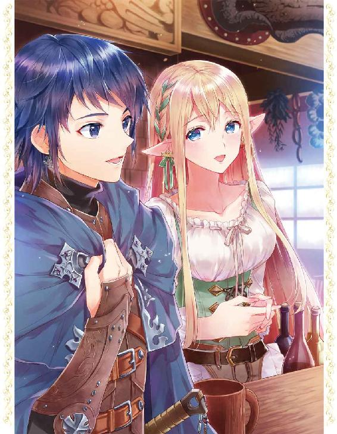

| 俺のペットは聖女さま3 | |
| ムク文鳥 | |
| (2016) | |
婚約も済ませて、ますますイチャラブに拍車が掛かってきた辰巳とチーコ。そんな折、２人は魔獣狩りとして活動をスタートすべく、討伐依頼が集まる酒場へと向かうが、そこの女将はなんとかつて日本の愛知県から転移してきた美女エルフだった！ 辰巳は同郷のよしみで話に花を咲かせつつ、新たな仲間も紹介してもらい、まずはひと狩り行ってみることに。だが、そこでかつてない程に強力な魔獣と対峙し、辰巳とチーコは絶体絶命の危機に陥ってしまう！------再び2人のイチャラブパワーが試される！
イラスト：カスカベアキラ
デザイン：萩原栄一（big body）

みんみんと蝉しぐれが降り注ぐ、とある夏の日。
一人の和服姿の老婦人が、墓碑の前で静かに手を合わせていた。
老婦人の背後には四十代ほどの男性が一人、無言で老婦人を見守っている。
どれぐらい、そうしていただろうか。
目を閉じてひたすら手を合わせていた老婦人が、静かにその瞳を開いた。
閉じられていた瞼の奥に秘められていたのは、蒼玉のような青い双眸。数々の皺が刻まれたその容貌は、たとえ和服を着ていても東洋人でないことはすぐに知れる。
異国からやってきた、品の良さそうな老婦人。若い頃は相当美人だったことだろう。
墓前での祈りが終わった老婦人の背中に、背後の男性が声をかける。
「やっぱり......行くつもりなのか、叔母さん？」
かけられた声に応えるため、老婦人は背後を振り返った。
「はい......もう、この町には......私の大切な人たちは誰もいませんから......」
悲しそうな表情を浮かべて、老婦人は静かに告げた。
「アオイさんも、タカシさんも......そして、ヤスタカさんも......みんな、遠くへ行ってしまいました......」
老婦人の脳裏に、彼女の大切な人たちとの思い出が次々に浮かび上がる。
それは、彼女がこの町......いや、この世界に来てから今日まで積み上げてきた、とても大切な記憶だ。
しかし、若い頃から常に傍にいた人たちは、みんな鬼籍へと入ってしまった。残されたのは、老婦人ただ一人のみ。
そのこと自体は辛くはない。確かに悲しみは彼女の胸の内に渦巻いているが、人間の寿命は決して長くはないのだ。彼女が最後に残されることは、最初から分かっていたことであった。
「ヤスタカさんの四十九日の法要も終わりましたし......私、決めていたんですよ。ヤスタカさんの四十九日が終わったら旅立とうと......」
親戚だけで行われた、彼女の夫の四十九日の法要。有名な小説家であった彼女の夫の死は、多くの人々に悲しみを与えた。
葬儀は大々的に行われ、多くのファンが葬儀に訪れた。
しかし、四十九日の法要は近しい親族のみの参列だった。それが亡き夫の意思であったからだ。
葬儀、初七日以降の七日ごとの追善法要、そして今日の四十九日。老婦人は故人の妻として、そして喪主として見事に取り仕切ってみせた。
しかし、四十九日の法要を終えたことで、夫の忌も明けた。
もちろん、今後も一周忌や三周忌など、法要はまだまだ続く。仏教では、四十九日を以って故人は閻魔大王の裁定を受け、極楽浄土へと正式に旅立つとされている。
つまり彼女の夫は、今日で正式に彼岸の住人となったわけだ。
「後のことは......叔父さんのこれからの法要は、俺たちが引き受ける。だから......叔母さんは自由にするといいよ。それが叔父さんとの約束だからね」
「......ありがとうございます」
老婦人は、微笑みながら背後の甥──亡き夫の姉の息子──へと振り返る。
老婦人とその夫の間には、子供が生まれなかった。それもまた、彼女が旅立つ決心をした要因の一つだ。
「夫の遺産は、全部残していきます。私が持っていっても仕方ないですからね」
これから彼女が旅立とうとする先では、当然ながら日本の貨幣は意味がない。宝石や貴金属は価値を有するかもしれないのでそれらは持っていくつもりだが、それも行ってみないと分からない。
彼女の夫が残してくれた遺産の中で貴金属類以外は全て、弁護士を通じて甥や姪へと渡るように手配してあった。
「私には彼との思い出がたくさんありますから......それがあれば十分です」
にっこりと微笑む老婦人。その姿が一瞬で別のものへと変じたのはその時だった。
顔や手に刻まれた幾つもの皺。その皺が、まるで剥がれ落ちたかのように消え去ったのだ。
そう。
それは実際に剥がれ落ちたのだ。彼女が纏っていた、「老婦人」という幻影が。
剥がれ落ちた幻影に隠されていたのは、処女雪のごとき白い肌。もちろん、皺などは全く見受けられない。
老婦人は......いや、老婦人に見せかけていた女性は、纏っていた衣服までもが別のものへと変わっていた。
和服の幻影の下から現れたのは、白く染められた柔らかい革製の胴鎧。膝上丈の若草色のスカートから覗く白い太ももが眩しい。
腰に巻かれたベルトには一振りの小剣が佩かれている。そして腰の後ろにも、小剣とは別に短剣が装備されていた。
しかし何より彼女の外見で最も特徴的なのは、その長く尖った耳。
少しファンタジーの知識がある者ならば、彼女のその姿から有名な種族を連想するだろう。
エルフ。
ファンタジー系の小説やコミックに頻繁に登場する、人間に近しい妖精族である。彼女は紛れもなく、本物のエルフなのだ。
外見の年齢は、人間で言えば二十歳前後か。芸術品のように整った容貌には、これから旅立つことに対する希望と好奇心が浮かんでいる。
夫や親しい友人との別れは寂しい。しかし、その寂しさにいつまでも囚われているわけにはいかない。
彼女の夫は生前、いつも言っていたものだ。
──自分が死んだ後は、君の自由にするといい。日本に残るもよし、旅立つもよし。人間と違って、エルフの人生は長い。いつまでも自分に縛られる必要はないよ。
夫のその言葉に従い、彼女は旅立つ決心をしたのだ。
夫や親しい友人たちとの思い出に溢れた日本に残ることは、やはり彼女にとっては辛いことである。それもまた、彼女が旅立つ決心をするに至った理由の一つだ。
「やっぱり、叔母さんはそういう格好の方が似合うな。さすがは元冒険者といったところかな」
冒険者としての姿を取り戻した叔母を眩しく見つめつつ、彼は足元に置いてあった荷物を彼女に手渡す。
この荷物は、これから異世界へと旅立つ彼女が用意したものだ。
これまで愛用してきた日用品や衣服、夫との思い出の品など。もちろんその全てを持っていくことはできないので、厳選に厳選を重ねて選び抜いた品々である。
「ありがとうございます」
冒険者としてのいで立ちを甥に褒められて、彼女は照れくさそうにはにかむ。そして腰の後ろに装備されていた短剣を外すと、それを両手で包み込むようにして持つ。
この短剣には魔力が秘められている。
その魔力とは、世界間の移動。
エルフである彼女は、本来なら別の世界の住人であった。その彼女が現代の日本に来たのは、この短剣の魔力の発動に巻き込まれたからだ。
異世界より日本へと渡った彼女は、この日本で夫となる男性と出会い、恋をして、そして結ばれた。そしてその後の約七十年、夫と共にこの日本で暮らしたのだ。
「じゃあヤスタカさん......行ってきますね」
亡き夫の墓に向かって穏やかな笑みを浮かべた彼女は、手の中の短剣を改めて構える。
そして、ゆっくりと鞘から短剣を引き抜く。
鞘の中から現れた刀身は、まるで鍛え上げられたばかりのような眩しい鋼の色を有していた。その鋼に、彼女の青玉のような瞳が映り込んでいる。
「.............................................あれ？」
しかし、鞘から短剣を抜いても、何の変化も現れない。
てっきり短剣を抜けば魔力が発動すると思っていた彼女は、あたふたとしながら短剣をぶんぶんと振り回す。
そして困惑して左右を見回している叔母を見て、甥が困ったような呆れたような複雑な表情を浮かべた。
「あ、あれ？ お、おかしいですね、この短剣には確かに魔力が......鞘から短剣を抜けば、魔力が発動するとばかり......」
「とりあえず落ち着けって、叔母さん。叔母さんが日本に来た時のことを、もう一度ゆっくりと思い出してみたらどうだ？」
「お、思い出せと言われても............もう七十年以上も前のことですし......」
それでも故郷の世界からこの日本へと渡ってきた時のことを何とか思い出し、彼女は短剣の魔力を発動させることに成功したのだった。
こうして、彼女は再び旅立った。
短剣が彼女を誘うのは、彼女が生まれ育った世界なのか、それともまた別の世界なのか。
それは現時点では、彼女にも分かっていない。
それでも彼女は冒険者だ。未知なる世界への好奇心は、冒険者の最大の原動力である。
まだ見ぬ異世界へと思いを馳せながら、彼女は長く暮らした日本を後にした。
ちょっとばかり、締まらない旅立ちだったが。
朝。
窓から差し込む眩しい光と、お腹の辺りをもぞもぞと何かが蠢く感触に、カルセドニアはゆっくりと意識を眠りの底から浮上させた。
意識がはっきりとしてくるに従い、お腹に感じる感触もはっきりとしてくる。
そして、背中に感じる暖かい感触もまた。
「えっと......何をしているんですか？」
自分を背後から抱き締めているその人物に、カルセドニアは振り向きながら尋ねれば。
「んー、チーコのお腹を触っている」
彼女の運命の人とも言うべきその男性は、楽しげな口調でそう答えた。
「チーコの肌ってすべすべで手触りがいいんだよなー。いつまでだってこうしていられそうだ」
「やぁん、擽ったいですよぅ」
口ではそう言うものの、その声にははっきりとした喜びの響きが混じっている。
それが分かっているからこそ、男性──辰巳は手を動かすことを止めない。
今、二人はその身に何も纏っていない。互いに全てを晒したまま、暖かい毛皮の中で身を寄せ合っていた。
例の「魔法の絵」が切っ掛けで初めて結ばれたあの夜から、二人はほぼ毎日のようにこうして素肌同士を触れ合わせて眠るようになった。
一緒に寝ているからと言っても、決して毎日熱烈な愛情を交わしているわけではない。こうして互いの肌を密着させながら、互いの体温や息遣いを感じ合うだけで、二人とも満ち足りた思いに至れるのだ。
辰巳は擽ったそうに身を捩るカルセドニアの髪に鼻先を埋めながら、その香りをじっくりと堪能する。
「なんか......昔のチーコと同じ匂いがするな......単なる気のせいかもしれないけれど......」
ぽつりと零された辰巳の言葉。カルセドニアは腹に回された辰巳の手に自分の掌を重ねながら、幸せそうに目を閉じた。
「............私も昔を......まだ、小さな私だった頃のことを思い出します......」
かつて、カルセドニアがまだ小さなオカメインコだった頃。
彼女はいつも辰巳と一緒だった。
彼の頭の上で、肩の上で、膝の上で、いつも彼を見上げていた。時には寝ころんだ辰巳のお腹の上で、彼の温かい体温を感じながら居眠りをしたこともある。
以前はいつも一緒だった。しかし、そんな二人にも一度は別れが訪れた。
しかし、それまで暮らしていた世界とは別の異世界とはいえ、辰巳とカルセドニアは今またこうして一緒にいることができる。
辰巳はこちらの世界に召喚してくれたカルセドニアに感謝し、カルセドニアは快くこちらの世界での生活を受け入れてくれた辰巳に、過去以上の愛情を感じる。
カルセドニアを愛おしく思った辰巳は、その柔らかな身体をぎゅっと抱き締める。
そしてカルセドニアもまた、辰巳の心地よい体温を背中全体で感じながら、最愛の男性に抱き締められて嬉しそうに微笑んだ。
幸福な空気にどっぷりと浸かりながら、それでもカルセドニアは寝台から出るべく動き始める。
「さあ、ご主人様。今日はご主人様が初めて魔獣狩りが集まる酒場へ行ってみる日ですよ。そろそろ起きて準備をしないと」
「そうだな。ベッドの中のこの暖かさには後ろ髪を引かれるけど仕方ない。うん、それじゃあ、チーコが先にベッドから出てくれ」
「え？」
辰巳の言葉が終わると同時に、不意に感じられる浮遊感。思わず目をぱちくりとさせたカルセドニアは、一瞬でベッドの外へと転移させられた。
慌てて空中で体勢を整え、床に落下するのを辛うじて防ぐ。だが、それは明るい朝の光の中で、何も身に着けていない身体を辰巳の目に晒すことを意味した。
「ひょええええええっ!!」
全裸を辰巳に晒していることに思い至ったカルセドニアは、可愛い悲鳴と共に両手で胸をかき抱きながらその場にしゃがみ込む。
そんなカルセドニアを、辰巳はベッドに上半身を起こしたままにこにこと見つめていた。
「うん、眼福眼福」
「もぅ。最近のご主人様はちょっと意地悪ですっ!!」
カルセドニアは踞ったまま、手を伸ばして寝台の上の枕を掴み取ると、それを辰巳に向かって投げつける。
だが、投げつけられた枕は軽々と辰巳に受け止められてしまう。
その後、どちらからともなく、二人は笑い合う。
なんだかんだ言いつつも、やっぱり幸せな二人だった。
朝食を済ませ、しばらく寛いだ二人は、四の刻の鐘──日本で言えば正午──が鳴る頃に家を出た。
二人が目指すのは、かつて修行時代のカルセドニアが利用していたという、魔獣狩りが拠点とする酒場の一つ。
ちらちらと雪がちらつく中、二人は身を寄せ合いながらゆっくりと歩く。
既にご近所ではお馴染みの光景となっている二人の様子を見て、顔馴染みの主婦たちが微笑ましそうに目を細めたり、親しげに声をかけてきたりする。
「おや、タツミくんとカルセちゃん。今日も二人揃ってお出かけかい？」
「いつも仲が良いわよねぇ」
「ホント。お二人さんがいると、積もった雪だって溶けちゃいそうだね」
口々に交わされる悪意のない冷やかしの言葉。そんな言葉をかけられて、辰巳は照れて視線を泳がせ、カルセドニアは嬉しそうに微笑む。
二人は目抜き通りへと出ると、ゆっくりと街の中央へと向かう。
そしてカルセドニアの案内で、表通りから一本外れた通りへと入り、目的地である酒場兼宿屋を目指す。
「......それで、チーコも以前にお世話になったっていう、その酒場の店主さんはどんな人なんだ？」
「何でも、遠い異国から二十年ほど前にこのゾイサライト大陸へと渡ってこられたそうです。その後は大陸のあちこちを彷徨い、このレバンティスの街には大体五、六年ぐらい前にやってきて、今の酒場を開いたと聞きました」
カルセドニアの言葉を聞きながら、辰巳はいかにも歴戦の戦士といった感じの、厳つい中年の男性を脳裏に思い浮かべた。
傭兵や魔獣狩りとして大陸中を渡り歩き、怪我などの理由で引退した後は、酒場を営みながら後進を育てていく。
うん、いかにもありそうな設定だ。と辰巳が内心で頷いている横で、カルセドニアの話は尚も続いていた。
「最近ではお店の評判も上々で、腕のいい魔獣狩りたちがそのお店を拠点としていると聞いています。私が出入りしていた頃は、まだまだ開店したばかりでそれほど評判ではなかったのですが、今ではすっかりこの街の代表的な酒場に成長したそうです」
と語るカルセドニアの言葉には、懐かしそうなものが含まれていた。どうやら、彼女もその店主をかなり慕っているようだ。
「......私も魔祓い師となってからは、あのお店に顔を出さなくなってしまいましたが......女将さん、元気かしら？」
なるほど。どうやら件の店主には奥さんがいるらしい。
厳つくて頑固な店主と、その店主を支える明るくて器量好しの女将さん。これまた、よくありそうな設定である。
辰巳が脳裏でそんな酒場の様子などを思い浮かべていると、一際弾んだカルセドニアの声がした。
「ああ、あそこです。あそこが目的地である〔エルフの憩い亭〕ですよ」
カルセドニアが指差すその先。そこには確かに一軒の酒場兼宿屋があった。
普通の家よりも大きめの木製の扉。多少年季が入っているものの、よく手入れされているらしく綺麗な木目を浮かび上がらせている。
全体は一般住宅に見られるような赤茶けた煉瓦作り。見たところ三階建てのようで、おそらくは一階は酒場で二階より上が客室なのだろう。
だが、何より辰巳の目を引いたのは、出入り口の扉の横に掲げられている看板だった。
フォークとナイフとジョッキを図案化したものは、ここが酒場であることを示しているのだろう。そして、その図柄の下にはベッドの図柄もあった。これまた、ここが宿屋も兼ねていることを表しているに違いない。
最近、辰巳もようやくこの世界の文字の読み書きもできるようになってきた。だが、この世界の識字率はかなり低い。
となれば、店の看板に文字だけではなく図柄を入れるのは、おそらくよくあることなのだろう。
しかし、彼の目を引いたのはそれらの図柄ではなかった。
看板に書かれた文字こそが、彼の目を引きつけて離さない。
この国の流れるような文字とは明らかに異なった、かくかくした字体。だがその文字は、辰巳にしてみればこの国の文字よりも遥かに馴染みのあるもので。
だがその文字は、この国にあるはずがないものだ。
「ど、どうして......どうして、ここに日本語が書かれているんだ......？」
呆然と辰巳が見上げるその看板。
そこに書かれている「エルフの憩い亭」という文字は、どう見ても平仮名と片仮名、そして漢字の組み合わせ──すなわち、日本語だったのだ。
呆然と看板を見上げている辰巳を見て、カルセドニアは首を傾げた。
「ご主人様？ どうかされましたか？」
「あ、ああ......な、なあ、チーコ。あの看板の文字だけど......」
「あれは、この店の女将さんが以前にいた国の文字だそうです」
カルセドニアが辰巳が指差す看板を見て説明する。
どうやらカルセドニアは、日本語の会話はできても読めないようだ。
考えてみれば、前世の彼女はオカメインコでしかなかったのだ。日本語の会話の方は、辰巳やその家族たちの言葉を聞いていたのである程度は理解できるのだろうが、当然読み書きができるわけがない。
「ってことは......まさか、この店の女将さんて、俺と同じ日本人......？」
自分以外にも、この国......いや、この世界に日本人がいたとは。
不意に辰巳の胸に広がったのは、郷愁と言うべき感情だろう。
日本での生活に未練はないと断ち切ったとはいえ、時にはどうしたって懐かしく感じてしまうことはある。
もしも、本当にこの店の女将さんが日本人ならば、この懐かしい思いを共有できるかもしれない。
そんな期待を抱きつつ、辰巳はカルセドニアに促されて店の中へと足を踏み入れた。
店に入った途端、酒と各種の料理の匂いが辰巳の鼻を刺激した。
辰巳の予想通り、一階は酒場となっているようで、店の奥にカウンター、そして広い店内には四人用のテーブルと椅子が幾つも見受けられた。
それらの内の幾つかには魔獣狩りらしき男たちが鎧姿で座っており、無遠慮な視線を辰巳とカルセドニアに向けてくる。
中には明白に下卑た視線をカルセドニアに向ける者もいて、辰巳は何気なくその視線からカルセドニアを遮る位置へと身体を割り込ませた。
今の辰巳とカルセドニアは、分厚い外套を着込んでいる。
その外套の下はカルセドニアは普段着だが、辰巳は煮固めた革鎧と腰には鋼製の剣を装備している。
分厚い外套を着ているとはいえ、それらを装備していることは歴戦の魔獣狩りたちには一目瞭然。
また、今の辰巳は神官戦士としてしっかりと鍛えられている。足運び一つ取っても、彼がただの素人ではないことはすぐに分かるのだろう。
だからこそ、魔獣狩りたちは無遠慮な視線は向けても、何かを言ってくるようなことはない。逆に言えば、ここで何か因縁をつけてくるような連中がいれば、それは経験の浅い魔獣狩りだという証でもある。
中にはカルセドニアがサヴァイヴ神殿の《聖女》だと気づいた者もいるようで、仲間内で小声で囁き合っている者もいた。
そんな魔獣狩りたちの探るような視線の中を、カルセドニアは気にした風もなくゆっくりと店の奥を目指す。
カルセドニアと共に足を進める辰巳の目に、カウンターの奥で忙しそうに働いている一人の女性が映った。
おそらく、あの人がこの店の女将さんだろう。だとすると、あの人が日本人なのだろうか。
そんな期待を抱いた辰巳。だが、すぐにその目が驚愕に見開かれることになった。
「え？」
思わず間抜けな声を出しつつ、辰巳はその女性を見た。
身長は辰巳より低く、大体一六〇センチ前後だろうか。ほっそりとした体つきと、カルセドニアといい勝負の白い肌が印象的だった。
長く伸ばされた髪は淡い金髪。白金色のカルセドニアよりは、若干色合いが濃い。そして瞳の色は紅玉のようなカルセドニアとは、対照的な蒼玉のような蒼。
そして何より、細長くぴんと上を向いた尖り気味の耳。それはファンタジーでは有名なあの種族の特長でもあり。
「え、エルフ......？」
そう。
その女性はエルフだったのだ。
これまで辰巳は、亜人と呼ばれる人たちとの交流の経験がない。
この街のサヴァイヴ神殿には人間しかおらず、街の中でも亜人は少数派らしい。
街でごく稀にすれ違うことはあっても、こうして間近で亜人を見るのは初めてなのだ。
辰巳の先程の呟きが聞こえたのか、エルフの女性が辰巳たちへと顔を向けた。途端、その顔に驚きと喜びが浮かび上がる。
「カルセさんっ!! カルセさんじゃないですかっ!! うわー、お久しぶりですねー。お元気でしたか？」
「はい。私の方こそご無沙汰しておりました。女将さんもお元気ですか？」
「ええ、もちろんですよっ!! 私もカルセさんの活躍......サヴァイヴ神殿の《聖女》の噂は耳にしていますよ？」
にこやかに談笑するカルセドニアとエルフの女性。
やはりこのエルフの女性こそが、この店の女将さんらしい。
とすると、看板の日本語は一体誰が書いたものなのだろう。まさか、エルフが日本語を知っているはずがないし、と辰巳が心の中であれこれと考えていた時。
それまでカルセドニアと話していたエルフの女性の目が、辰巳へと向けられた。
途端、エルフの女性の顔に広がる、大きな驚愕。
彼女は蒼い瞳を一杯に見開きながら、掠れるような声で呟いた。
「え............？ も、もしかして......日本の方......ですか？」
エルフの女性の唇から零れ出た言葉。それは、間違いなく辰巳が慣れ親しんだ日本語であった。
「私の名前はエルルーラ・ザフィーラ・フィラシィルーラ・アカツカ。長くて呼びづらければ、エルと呼んでくださいね」
それが〔エルフの憩い亭〕の女主人にして女将でもあり、かつて日本で暮らしていたことがあるという、目の前のエルフの女性の名前だった。
「──じゃあ、エルさんはご主人が亡くなった後、この世界に？」
「はい。ヤスタカさん......夫が天寿を全うしてから、私は世界を越える魔力を秘めた短剣の力でこの世界に来ました。私にとってこの世界は、故郷の世界と地球世界に続く第三の世界ということになりますね」
〔エルフの憩い亭〕のカウンターに腰を落ち着けた辰巳とカルセドニアは、エルから彼女のこれまでの人生を聞いていた。
かつて、とあるマジックアイテムの暴走で、故郷の世界から日本へと飛ばされたエル。
彼女はそこで様々な人たちに出会い、助けられ、最終的には日本人として戸籍も獲得して正式に結婚までした。
だが、彼女とその夫の間に子供ができることはなく、人間よりも遥かに長い寿命を持つエルフである彼女は、夫が天に召された後、再びそのマジックアイテムを使って二十年ほど前にこの世界に来たとのこと。
「でも、女将さんがご主人様と同じ国にいたなんて......さすがにびっくりしました」
「それは私だってですよ。まさかカルセさんの前世がオカメインコで、タツミさんを想うあまり召喚に成功しちゃうなんて......普通に考えれば、信じるどころか思いつきもしないですよねぇ」
辰巳とカルセドニア、そしてエルは、懐かしい日本の話で盛り上がっていた。
ちなみに、三人のこの会話は日本語で交わされているため、周りで必死に聞き耳を立てている魔獣狩りたちには理解できない。
「オカメインコかぁ。私は飼ったことはないですけど、ペットショップではよく見かけました。可愛かったなぁ......そう言えば、あの人も生き物が好きだったっけ」
エルはカウンターに飾られている写真立てへと目を向ける。
そこには彼女と三人の高校生ぐらいの男女が写っている。おそらく、写真の中でエルの横に写っている少年こそが、彼女の夫だった人物なのだろう。
今、エルが写真へと向けている視線はとても優しい。彼女がいまだに亡夫を深く愛していることが、辰巳とカルセドニアにはよく分かった。
その後も、辰巳たちは日本を話題にして話を楽しんだ。
特に辰巳とエルは、これまで日本のことをなかなか話題にすることができなかったことと、懐かしさもあって大いに会話が弾む。
「え？ エルさんって愛知県の日進市に住んでいたんですか？ 俺、瀬戸市に住んでいましたけど......」
「ええっ!? 日進と瀬戸ならすぐ近くじゃないですかっ!? 私、何度も瀬戸には行ったことありますよ。せともの祭りにも行ったし、秋になると岩屋堂の紅葉も見に行きました」
「うーん......逆に俺は日進にはあまり行ったことがないなぁ。せいぜい、小学校の遠足で日進にある牧場に行ったぐらいか」
「もしかすると、どこかでタツミさんとすれ違っていたかもしれませんね」
楽しく会話する辰巳とエル。一方、カルセドニアはといえば、ちょっと不貞腐れた様子でカウンターに頬杖なんてついている。
どうやら、辰巳がエルと楽しそうに会話するのがおもしろくないらしい。
カルセドニアにも日本の知識はある。でも、オカメインコだった彼女の知識は極めて限られているので、辰巳とエルの会話についていけないのだ。
エルとの会話の途中、そんなカルセドニアの様子に気づいた辰巳。彼は手を伸ばしてカルセドニアの髪を優しく撫でてやる。
それだけで、頬を膨らませていたカルセドニアの表情が一気に柔らかくなる。
彼女は嬉しそうに微笑むと、そのままこてんと辰巳の肩へと頭を凭れさせた。
そして、二人のそのやり取りに、今度はエルが目を丸くする。
「......驚きました。あのカルセさんがここまで男の人に甘えるなんて......」
以前、この店に出入りしていた時のカルセドニアは、男性とは必要最低限の会話しかしていなかった。
魔獣狩りとして、時には他の魔獣狩りと組んで仕事に当たったこともある。それでも当時のカルセドニアは、決して他者に甘えるようなことはなかったのだ。
今までエルも見たことがないようなカルセドニアの幸せそうな笑顔。そして、彼女にそんな笑顔を向けられて、同じように微笑んでいる辰巳。
二人の間に言葉はないが、そもそも言葉など必要ないのだろう。
エルもまた、この二人の間に存在する切っても切れない絆を感じて、微笑ましそうな表情を浮かべた。
「さて改めまして、〔エルフの憩い亭〕へようこそ！」
一通り日本のことを語り合った後、エルは態度を改めた。
ここからは単なる思い出話ではなく、これからのことを語り合わなければならない。
そのためだろうか。エルはこれまでの会話に用いていた日本語から、ゾイサライト大陸全般で使われる大陸交易語へと切り替えた。
「この宿屋兼酒場は、主に魔獣狩りの皆さんが拠点として利用しています。店主はこの私、エルルーラ・ザフィーラ・フィラシィルーラ・アカツカ。もちろん、私以外にもお店には従業員が数名います。私は基本的にこのお店にいますが、従業員たちは交代制なのでお店にいたりいなかったりします」
この酒場には魔獣狩りだけではなく、魔獣に関する情報や魔獣討伐の依頼なども舞い込む。
もちろん、普通の酒場や食堂として酒や食事を求めて訪れる者もいるし、宿屋として一晩の寝床を求めて来店する者もいる。
「魔獣狩りにはゲームや小説などに登場する『ギルド』のような後援組織はありません。ですから、ランクなんて概念もありません。自分は魔獣狩りだ、と思ったその瞬間からその人は魔獣狩りです。もちろん、実際に魔獣が倒せるだけの実力が伴うかどうかは別の話です」
酒場に寄せられる魔獣討伐の依頼は、基本的に早い者勝ちである。
ただし、それが自分に討伐可能な依頼かどうかは、自分自身で判断するしかない。
顔馴染みや先輩の魔獣狩りが助言することはあるが、それでも最後は自己責任となる。
「私としても、店主として討伐対象の魔獣を倒せない人には依頼を任せるわけにはいきません。寄せられた依頼を失敗ばかりしていると、この店の信用問題に関わりますからね。それでも自分の実力を顧みず、報酬などに釣られてついつい背伸びをしてしまう人は少なくありません。そして、そういう背伸びをした人に限って、再起不能な大怪我をしてしまったり、最悪の場合は二度と帰ってこなかったりします」
ですから、タツミさんも依頼を受ける時は十分気をつけてください、とエルは付け加えた。
「分かりました。急がずに最初は簡単な依頼からこつこつ始めますよ」
「はい、その気持ちが大切ですからね」
ところで、と前置きしつつエルはちょっぴり含みのある笑みを浮かべた。
「タツミさんがどのれだけの実力を持っているのか、私はこの店の店主として把握する必要があります。そこで、ちょっとした試験をしてみたいと思うのですが、受けてくれますか？」
魔獣狩りたちへ仕事を斡旋する立場として、店に集まる魔獣狩りたちの腕を把握するのは重要なことだろう。
エルの言う試験とは、おそらく魔獣狩りとしての最低限の実力を測るためのものに違いない。
だから、辰巳は二つ返事でその試験を受けることにした。
「それで、試験の内容はどんなものですか？」
「うふふふ。こういう場合の新入りの腕試しと言えば、お約束の『薬草クエスト』に決まっているじゃないですか」
「なるほど。要は何らかの種類の薬草を一定量集めろってことですね？」
「はい。でも、一定量じゃなくて、ほんの一株だけでいいです。今から指定する薬草を手に入れて、ここに持ってきてください。それがタツミさんの試験です」
エルの指定した薬草は、グーレンダンという名前の薬草らしい。この地方では古くから傷薬や化膿止めの原料として用いられているそうだ。
「これはあくまでもタツミさんの力試しなので、カルセさんは一緒に行ったらだめですよ」
「はい、承知しています」
素直にそう答えたカルセドニアだったが、その表情はどこか詰まらなさそうだ。おそらく、一時とはいえ辰巳と別行動になるのが嫌なのだろう。とはいえ、ここで我が儘を言えるはずもない。
「でも俺、そのグーレンダンって薬草を見たことないんですけど......」
「グーレンダン草はこんな薬草です。ツィールくん、お願いね」
エルが右手の中指に嵌めている指輪に語りかけると、その指輪の上に小さな人影が現れた。
身長は辰巳の感覚で言うと十五センチぐらい。人間を三頭身ぐらいにデフォルメし、背中にはトンボのような二枚の翅がある。
緑色の服を着て、頭には同じ色の三角帽。そして何より、でかでかと顔の真ん中に居座るような団子鼻が印象的だ。
その小さな人影はエルに微笑むと、すぐに姿を消してしまった。そしてその人影と入れ替わるように、エルの掌の上に瑞々しい一株の草が浮かび上がる。
「これがグーレンダン草です。よく特徴を覚えてくださいね」
まるで立体映像のように突然エルの掌に浮かび上がった薬草。それを見て、辰巳は思わずぽかんとしてしまった。
「こ、これって魔法......ですよね？」
「はい、そうですよ。幻の精霊の力を借りて、幻影を作り出しました」
「えっ!? そ、それって精霊魔法って奴ですか？」
精霊魔法。
カルセドニアたちが使う詠唱魔法とは、全く別の魔法体系。
辰巳も精霊魔法については詳しくは知らないが、それでもその存在は彼がこっちの世界に召喚された時にジュゼッペから聞いた覚えがある。
そしてジュゼッペは、その精霊魔法を広めたのは一人の女性だと言っていた。
「もしかして、精霊魔法を広めた女性って......エルさんなんですか？」
辰巳がそう尋ねると、エルは照れたような笑みを浮かべた。
「えへへへ。一応、そういうことになっていますね」
彼女がこの世界に来たのが大体二十年ほど前。
当時、今まで存在しなかった全く新しい体系のエルの魔法に興味を持ち、彼女に指導を求めて弟子入りした者が何人かいたとのこと。
だが、弟子入りした全員が精霊魔法の使い手になれたわけではない。
精霊魔法を使うには、魔法使いとしての素質の他にも精霊と交信するという別の資質も必要になる。
そのため、只でさえ少ない魔法使いの中でも、精霊魔法を修得できる者は更に一握りでしかない。
数少ない彼女の弟子たちが、一定以上の実力を身に着けて世間的に認められ始めたのが今から十年ほど前。そのため、世間では精霊魔法は十年ほど前から広まった、というのが定説となっていた。
驚く辰巳とカルセドニアの耳元に口を寄せたエルは、声を細めてそっと呟く。
「でも、私が精霊魔法の開祖だってことは、ここだけの秘密にしてくださいね？ そのことが原因で、以前にちょっとあれこれあったものですから」
もちろん、二人がエルの提案を断る理由はなく、揃って頷いた。
「今日は本当に驚いてばかりです。女将さんがご主人様と同じ国に住んでいたことがあっただけでなく、精霊魔法の開祖だったなんて」
どうやら、カルセドニアもエルが精霊魔法の開祖であることは知らなかったようだ。
カルセドニアがこの店に出入りしていた時期はそれ程長くはない。その短い間に、彼女はエルが精霊魔法を使ったところを見たことがなかった。
「さて、タツミさん。グーレンダン草の特徴は覚えましたか？」
いまだにエルの掌に浮かんでいるグーレンダン草の幻影。
辰巳はその幻影を食い入るように見て、全体の形や色、特徴などを頭に叩き込んでいく。
でも、こうして幻影を見ただけでは、実際にこの薬草を見分けられるか今一つ自信がない。
そこで、辰巳は文明の利器に頼ることにした。
辰巳は腰にぶら下げた小さな袋からあるものを取り出す。それは彼がこの世界に召喚された際に持ち込んだものの一つ、携帯電話だ。
彼の携帯電話は旧式のいわゆるガラケー。だが、光蓄電式なので今でも立派に使用できる。
もちろん、電話本来の使い方はできない。でも、内臓されたデジタルカメラなどは使えるのだ。
辰巳はカメラを起動し、エルの手の中の薬草を撮影する。これでいつでも薬草の写真を参照できるだろう。
そして、辰巳が弄っている携帯電話を見て、エルが意外そうな声を上げる。
「へー、また随分な骨董品ですね。それって二〇一〇年代前半ぐらいのモデルですか？ 私が日本に住み始めた頃、もうそのタイプは少数派でしたからね」
「確かに、俺が日本にいたのは二〇一〇年代の半ばですけど......ガラケーは旧式ではあっても、まだまだ使っている人はそれなりにいて、骨董品ってわけじゃありませんよ？」
「え？ 二〇一〇年代半ば？」
きょとんとした顔のエル。辰巳はようやく互いに会話に若干のずれがあることに気づく。
「えっと......エルさんって、いつぐらいまで日本にいたんですか？」
「私が日本にいたのは、二〇八〇年代まででしたけど......」
エルが日本に飛ばされたのが二〇一〇年代。その時、まだ十代だった彼女の夫と出会った。それから彼女の夫が天寿を全うするまでの約七十年を、エルは日本で過ごしている。
「......なるほど。俺とエルさんでは日本にいた時代にズレがあるのか......」
「そうみたいですね。世界を越えた時に一緒に時間も越えちゃったのかも。そもそも、異世界同士の時間が同じように流れているって保証なんてないですし、それを確かめる方法もありませんからね。もしかすると、私のいた日本とタツミさんのいた日本は『よく似た別の世界の日本』って可能性もありますし」
エルの言葉に辰巳も頷いた。
エルの言うように、異世界の時間が全て同じように流れているという保証はない。もしかすると、時間が流れる速度そのものに違いがあるかもしれない。
「それよりも大切なのは、こうして私とタツミさんが出会えたことだと私は思います」
と、エルはにっこりと微笑んだ。
「さて、試験の方はどうしますか？ 別にこれから実施してもいいですよ？」
ちょっと悪戯を思いついた子供のような表情を浮かべながら、エルが辰巳に告げる。
「そうですね。さっさと済ませてしまいましょう」
辰巳はエルの言葉に頷くと、そのままカウンターから立ち上がってカルセドニアへと向き直る。
だから、この時エルが「えっ」といった表情を浮かべたことに、辰巳は気づかなかった。
「じゃあ、俺は一旦家に帰って準備を整えてから、グーレンダン草を採りに行ってくる。チーコはどうする？」
「私はこのままここで、ご主人様のお帰りを待ちます」
いつも通りのカルセドニアの声。そこに不安などは一切感じられない。
彼女は辰巳が試験に合格することを疑ってさえいないのだろう。
「ところで、エルさん。そのグーレンダン草がどの辺に生えているか......それは聞いてもいいですか？」
「ぐ、グーレンダン草は、この街の南門から出てそのまましばらく南に行った森の入り口辺りに生えていますけど......本気で今から行く気ですか？」
辰巳に尋ねられ、エルは思わず素直にそう答えてしまう。
そして、エルから薬草の生えている場所を聞いた辰巳は、笑顔で「行ってきます」と告げると、そのまま〔エルフの憩い亭〕を後にした。
思わず辰巳を見送ってしまったエルだったが、この時になってようやく我に返った。
「か、カルセさんっ!! このまま本当にタツミさんを行かせてしまってもいいんですかっ!?」
焦ったようなエルの言葉。
だが、カルセドニアは動じることもなく、それどころか自信たっぷりにエルに応えた。
「大丈夫です。私のご主人様は、すぐに薬草を手に入れて戻ってきますから」
しかし、そこにすぐ近くで彼女らのやり取りを聞いていたらしい魔獣狩りの一人が、心配そうな表情を浮かべながら割り込んできた。
「おいおい《聖女》さんよ。今から街の外に出かけてグーレンダン草を探すとなると、下手をしたらあの兄ちゃん、生きて帰ってこれないかもしれないぜ？」
カルセドニアとエルの会話に割り込んできたその魔獣狩りは、じろりとした視線をエルへと向けた。
「女将さんもちょっと意地が悪すぎだろ？ この季節に新米に薬草探しをやらせるなんざよ？」
「あ、あのですね？ 私はてっきりカルセさんが止めるとばかり......まさか、あそこでカルセさんが笑顔でタツミさんを送り出すとは......」
エルは慌てたように、その魔獣狩りとカルセドニア、そして酒場の出入り口を何度も見比べる。
「い、急いで後を追いかけて、タツミさんを止めないと......」
ばたばたとカウンターの奥から出てきたエルは、そのまま店を飛び出そうとする。
しかし、それをカウンターに座ったままのカルセドニアが引き止めた。
「心配はいりません。私のご主人様......いえ、タツミ様なら、一刻間もあればグーレンダン草を持って帰ってきますから」
カルセドニアの言う「一刻間」とは、神殿の時を告げる鐘と鐘の間隔を言い、一刻間は地球の感覚でいえば約二時間である。
「おいおい、《聖女》さん。いくらなんでもそいつは無理ってモンだろ？」
割り込んだ例の魔獣狩りは、呆れたように肩を竦めた。
「この街はでかいから、この店から南門まで歩くだけでも相当時間がかかる。南門から更に南の森まで、今の季節じゃ人の足ではどうしたって一刻間はかかるぜ？ 確かに森までは遮るもののない平原が広がっているが、それは雪のない季節に限るってもんだ。今の季節、雪に足を取られて思うように進めないからな」
雪のない季節と雪の降り積もった季節。どちらが移動に時間がかかるか、考えるまでもないだろう。
「それに、グーレンダン草は年中生えている薬草だが、今の季節は探すだけでも大変だ。なんせ辺り一面、雪が降り積もっているんだからな」
雪を掻き分けながら雪原を進み、そして、あてもなく雪を掘り起こしながら薬草を探さなければならい。
探す薬草は一株とはいえ、一面銀世界の中、その一株を見つけ出すのは決して容易ではなく、体力と気力を消耗する重労働である。
「それにもうすぐ五の刻ですよ？ 日が暮れるまで後二刻間しかありません。この季節、慣れない人が野営なんてしたら凍死しちゃうかもしれません......カルセさん、タツミさんってこの季節の野営の経験はありますか？」
エルの言う五の刻は午後二時に相当し、その四時間後の七の刻──午後六時には陽が沈む。
街の門から森までの往復の移動に四時間かかる計算なので、明るい内に往復することを考えると、薬草を探す時間はほとんどない。
「雪のない季節なら神殿の鍛錬の一環で野営の訓錬も受けていますが、雪のある季節の野営の経験はないはずです」
辰巳も神官戦士の見習い時代に、鍛錬の一環として野外での野営の経験はある。だが、それはカルセドニアが言うように雪のない季節に行ったもの。
寒さの厳しい今の季節、辰巳には野外で一夜を明かした経験はない。
そしてエルの言う通り、この季節に迂闊に野営などしようものなら、凍死して二度と目覚めない可能性だってあるのだ。
カルセドニアの返答を聞いて、更に焦りを見せるエルとその魔獣狩り。
だが、カルセドニアは至って落ち着いており、焦る素振りさえ見せない。
「おい、《聖女》さんよ。本当にいいのか？ このままだとあの兄ちゃん、帰ってこないかもしれないんだぜ？ あの兄ちゃんはあんたのイイヒトなんだろ？」
「そうですよ、カルセさん。このままだと、タツミさんはリントさんの言うように......」
まるで自分のことのように心配するリントという名前の魔獣狩り。どうやら、彼は他人を思いやることのできる性格の人物らしい。
カルセドニアは改めてリントという魔獣狩りを観察した。
年齢は三十代半ばから四十代初め。全身から貫禄のようなものを滲ませる彼は、相当腕の立つ魔獣狩りなのだろう。
実際、彼が身に着けている装備は全て魔獣素材のもの。それも生半可な腕では狩ることのできない魔獣のものばかりだ。
辰巳のことをまるで自分のことのように心配してくれる彼は、カルセドニアから見ても好印象だった。
「大丈夫です。タツミ様はすぐに帰ってきますから。もちろん、しっかりと目的の薬草を手に入れてから、です」
だからカルセドニアは、リントに向かって微笑みながら答えたのだった。
その後、〔エルフの憩い亭〕の中は異様な雰囲気に包まれた。
エルやリントなどは、落ち着きなくそわそわしながら、何度も出入り口へと目を向ける。時折他の来客などが扉を開けるのだが、その都度期待に満ちた視線を向けつつ、その視線はすぐに落胆へと変わった。
その他の魔獣狩りたちの態度は様々だ。
辰巳のことなど全く無関心な者もいれば、リント同様に時折心配そうに扉を眺める者もいる。
中には辰巳が生還できるかどうかで賭けを行っている者もいて、ちょっと混沌とした雰囲気となっていた。
そんな中で、カルセドニアだけが自然体でエルが淹れてくれたお茶を優雅な仕草で飲んでいる。
そして。
そして、先程カルセドニアが言った一刻間が経とうとした時。
「ただいまー............って、あれ？」
何とも暢気な挨拶と共に、辰巳が〔エルフの憩い亭〕へと戻ってきた。
〔エルフの憩い亭〕に居合わせた魔獣狩りたちが、一斉に辰巳へと驚きの視線を向ける。
酒場の中の異様な雰囲気に内心で首を傾げつつ、辰巳はカルセドニアとエルの待つカウンターへと近づいた。
「はい、エルさん。これですよね？」
そう言いつつ辰巳が差し出したのは、所々に雪が残り、根には土が付着している一株の瑞々しい薬草。
辰巳の試験の目標であるグーレンダン草だ。
「......た、確かにグーレンダン草ですが......こ、こんな短時間に一体どうやって......？」
「それは......秘密ということでお願いします」
辰巳は唇の前に人差し指を立てながら、ぱちりと片目を閉じてみせる。
別に隠し立てする必要もないのだが、無闇に自分の能力を自慢することもあるまい。辰巳はそう判断してエルの質問を受け流した。
リントも、まじまじと辰巳が採取してきた薬草を眺めている。
「............うーん......どっかで売っていたものを買ったってわけじゃねえな。土や雪の具合から見て、採取してまだそれ程経ってない......おい、兄ちゃん、このグーレンダン草、どこで採取したんだ？」
「もちろん、エルさんに言われた通りに南の森の近くですけど？」
「いや、確かにこの辺でグーレンダン草が生えているのは、南の森の周辺だけだが......一体どうやってこの短時間に南の森まで......兄ちゃん、もしかして魔法使いか？」
「ええ、俺は魔法使いです」
リントに笑顔で答えつつ、辰巳は内心で「正確には魔力使いだけど」と付け足した。
リントは腕を組んで唸りつつ、いつまでも辰巳の採取してきたグーレンダン草を眺めている。
その彼の背後では、他の魔獣狩りたちが様々な様子を見せていた。
この短時間に薬草を採ってきた辰巳に感心する者、何かインチキをしたのではないかと疑う者、そして、賭けに負けて悲痛な表情を浮かべている者などなど。
そんな中で、唯一人辰巳が試験に合格することを疑っていなかったカルセドニアは、満面の笑顔で立ち上がって辰巳へと近づいた。
「お疲れさまでしたご主人様。そして、お帰りなさいませ」
「うん。ただいま、チーコ」
互いに微笑みながら見つめ合う。二人の間に無駄な会話など必要ない。
そんな二人に、エルとリントは感心するやら呆れるやら。
酒場に居合わせた他の魔獣狩りたちからも、様々な冷やかしの言葉が飛ぶ。
だが、カルセドニアには辰巳が相手である以上は冷やかしなど全て祝福の言葉だし、辰巳も最近ではこんな反応に慣れてきている。
辰巳はエルへと視線を向けると、試験の合否を問う。
「それで、試験の方は合格ですか？」
「もちろんです！ 私、エルルーラ・ザフィーラ・フィラシィルーラ・アカツカは、〔エルフの憩い亭〕の主人としてタツミさんを新米とはいえ魔獣狩りとして認めます！」
エルが宣言すると、周囲から歓声が上がる。
「これからがんばれよ、新入り！」
「いい気になって無茶するんじゃねえぞ」
「下手に怪我して美人を悲しませるなよ」
「必要以上に女将さんと馴れ馴れしくすんじゃねえぞ、コラ」
多くの魔獣狩りたちが、様々な言葉を辰巳へとかけていく。
中には辰巳のことなど我関せずといった態度の者もいるが、大半は快く辰巳を受け入れてくれたようだ。
こうして。
晴れて辰巳も〔エルフの憩い亭〕に出入りする魔獣狩りの一人として、正式に認められたのだった。
辰巳とカルセドニアを中心に、親しげな魔獣狩りたちが輪を作り、どうやってこんな短時間にグーレンダン草を持ってくることができたのかを、しきりに尋ねる。
「それはですね、ちょっとした魔法を使ったんですよ」
「ご主人様の魔法と、今回の薬草探しは相性が良かったのです」
辰巳とカルセドニアは、そう言って魔獣狩りたちの質問に応えた。
エルやリントなどはその魔法の詳細を聞きたそうだが、辰巳たちが語らない以上深くは追求しないつもりなのだろう。
実際、今回の試験と辰巳の魔法の特性は相性が良かった。
今回の試験で最も問題となるのは、もちろん大量に降り積もった雪である。
雪は移動を阻害し、目標の薬草を覆い隠す。
だが、辰巳の魔法の前にはそれ程の障害とはならない。
移動は《瞬間転移》を使えば雪に邪魔されずに移動できる。
街中は屋根の上を、街の外に出れば視界を遮るものはほとんどないので、《瞬間転移》に支障はない。
だが、辰巳の《瞬間転移》にも多少の制限はある。
実質的に無尽蔵の魔力を持つに等しい辰巳だが、辰巳自身の内部に蓄えることのできる魔力量には限りがある。
その総量はカルセドニアよりも少なく、平均的な魔法使いより僅かに多い程度。
かつて、彼が初めて《瞬間転移》を用いて〈魔〉と戦った時、カルセドニアよりも多量の魔力を一度に扱ったが、あの時は一種の暴走状態だったためであり、平時の辰巳にはあれだけの魔力を用いることはできない。
転移する距離に消費魔力は比例するため、どうしたって一度に転移できる距離には限度が生じる。
しかし、消費してゼロになった魔力も次の瞬間には全回復するので、たとえ一度に転移できる距離に制限があっても、それを何度も繰り返せばいい。
転移を多用して僅か数分で南の森近くまで到達した辰巳は、少し休憩して体力を回復させた後、今度は薬草を探すことにした。
そして、ここでも辰巳の《瞬間転移》は威力を発揮する。
鞘に収めたままの剣で、辰巳は雪の上に適当な大きさの円を描く。そして、円の内側の雪全てを、転移で少し離れた場所へと一瞬で移動させる。
こうすれば、わざわざ雪を掘り起こすという重労働をする必要もない。
ちなみに雪の上に円を描いたのは、移動させる雪の範囲が目に見えた方が、転移させる際にイメージしやすいからだ。
これを数回繰り返し、目標の薬草を発見することができた。
目標の薬草さえ見つけてしまえば、後はそれほど慌てる必要はない。
辰巳はついでに森の外周部の植生などを少し調べておいた。どこにどんな樹や草などが生えているのかを覚えておけば、今後何かの役に立つかもしれない。
王都近郊の森ということで危険な動物や魔獣の姿はなく、のんびりとある程度の範囲を見て回り、体力も回復した頃合いを見計らった辰巳は、改めて薬草を採取すると来た時と同じように転移を繰り返して街へと戻ったのだった。
「あ、そうだ！ ねえ、タツミさん、よかったら携帯電話の番号とアドレス、交換しません？」
辰巳たちが魔獣狩りたちと楽しく会話をしていると、突然エルがそんなことを言い出した。
「いや、交換するのはいいですけど、この世界じゃそもそも携帯は使えませんよ？」
「いいじゃないですか。雰囲気ですよ、雰囲気。うわー、携帯電話のアドレス交換なんて、久しぶりですねぇ」
嬉しそうなエルを見て、辰巳は苦笑する。
確かにエルの言う通り、彼女が携帯の番号やアドレスを交換する機会など、こちらの世界に来てから全くなかっただろう。
携帯電話本来の役割を果たすことはできないだろうが、それでも番号やアドレスの交換に付き合うのも悪くはない。
「そうですね。それじゃあ、雰囲気だけでも」
辰巳が再び携帯を取り出すと、エルもポケットの中から手の平サイズの薄い透明なプレートを取り出した。
「もしかして......それが二〇八〇年代の携帯電話ですか？」
「はい。他にも直接脳に埋め込む埋設型なんてのもありましたが、夫が埋設型を嫌がったので私もこっちにしました」
「なるほど、さすがは近未来だ。でも、これって充電とかどうしているんですか？」
「実はこっちに来る時、いろいろと持ち込んでいるんですよ」
エルが自信満々に指差す方を見てみると、店の窓際の日当たりのいい場所に手の平サイズの小さな機械が置いてあった。
もちろん辰巳も初めて見る機械だが、それでも何となく何のための機械なのか推測できる。
「あれって......もしかして、小型のソーラー発電機ですか？」
「ご名答。といってもそれほどの出力は見込めませんから、この店全体で電気を利用することはできません。せいぜい私の私室で幾つかの小さな電化製品を利用する程度ですね」
どうやら、エルは周到に用意してから世界を越えてきたらしい。
もしも世界を越える時、準備する時間があったとすれば。自分は一体何を持ってきただろうか。
それを考えようとして、辰巳はすぐにやめた。
今更過去を変えることはできない。それに、辰巳はどんな便利な電化製品よりも、どんなに食べ慣れた美味い料理よりも、素晴らしい宝をこちらの世界で手に入れたのだ。
彼は携帯電話を操作してエルと番号とアドレスを交換した後、その宝──隣に座る白金色の髪の女性に微笑みかけた。
「どうかなさいましたか、ご主人様？」
「何でもない。ただ、チーコが隣にいてくれるのが嬉しいだけだよ」
辰巳のその言葉に、カルセドニアもまた頬を染めつつも嬉しそうに微笑んだ。
彼のその言葉を聞いた時、辰巳とカルセドニアは揃ってきょとんとした顔をした。
「な、なぁ、バース......お、おまえ、今、何て言ったんだ......？」
何とかそれだけを口にする辰巳。横目でちらりと隣のカルセドニアを見れば、彼女もまたいまだに呆然とした表情でバースを見つめている。
それ程、先程バースが告げた内容は衝撃的だった。
「だからさ？ そろそろ俺も結婚しようかと思ってさぁ」
聞き間違いじゃなかった。
確かに、ついさっきも彼は同じことを言ったのだ。
場所はいつものように神殿の庭。そこでいつものように昼食を摂っていた辰巳たちは、バースの突然の結婚宣言に思わず言葉を失ってしまったのだった。
「え、えっと......おまえ......恋人とか......いたの......？」
聞きようによってはとても失礼な問いだが、今の辰巳にはそんなことに気を回している余裕はない。
そして当のバースも、特に気分を害した風もなくさらりと言葉を続けた。
「あれ？ 言ってなかったっけ？ 俺とあいつは幼馴染みでさ。俺が故郷の村を出る時、あいつも一緒にこの王都に出てきたんだよ。で、俺は神殿に下級神官としてぎりぎりながらも採用され、あいつは王都のとある飲食店で女給として働いているんだ」
バースの語る言葉に惚気の色合いはない。ただただ、淡々と事実を告げているだけ。
しかし、惚気の色はなくても嬉色はある。彼がいかにその幼馴染みを大切にしているのかが、彼の話を聞いているだけで辰巳には理解できた。
「俺もおまえと同じで上級神官になれたし、正式に神官戦士にもなれた。ここらで家庭を持ってもいいんじゃないかと思ってさ」
そこで頼みがあるんだ、と続けながら、バースはカルセドニアを見た。
「できれば、カルセドニア様に俺たちの婚姻の儀の立会人をお願いできませんか？」
「わ、私が......ですか？」
「ええ。一介の神官でしかない俺の婚姻の儀に、サヴァイヴ神殿の《聖女》様に立会人をお願いするのが無茶なのは承知の上です。でも、あいつ......俺の幼馴染みがカルセドニア様の大の信奉者なんですよ。この前も『《聖女》様が偶然お店に来て、間近で《聖女》様を見ちゃった』って大喜びしていたし。俺たちの婚姻の儀の立会人を、《聖女》様にお願いしたいってのがあいつのずっと前からの夢なんです」
バースは勢いよく立ち上がると、ぺっこんと勢いよく頭を下げた。
「お願いしますっ!! あいつの......ナナゥの夢を叶えてやってくださいっ!!」
カルセドニアは思わず隣の辰巳を見た。辰巳もまた、カルセドニアを見ていた。
互いに微笑み、頷く二人。
「分かりました。私で良ければ、お二人の立会人を務めましょう」
「ほ、本当ですかっ!?」
「はい、もちろんです。ですから......バースさんの想い人であるそのナナゥさんに、一度会わせてくださいね？」
この時、辰巳は確かに見た。
カルセドニアの紅玉のような瞳に、きらきらと好奇心の光が宿っていることを。
やはり、彼女も年頃の女性。他人の色恋話には興味があるようだ。
彼の想い人のことを聞いた時、辰巳とカルセドニアは揃って困った顔をした。
「......え？」
思わず間抜けな響きの言葉が辰巳の口から零れ出る。
それほど、バースの告げた言葉は予想外だった。
「俺の幼馴染み......ナナゥは......実は、そ、その......ゴブリンなんだ」
どこか照れ臭そうにそう告げるバース。だが、辰巳はそれよりも他のことが気になって仕方がない。
ゴブリン。
間違いない。バースは確かにそう言った。
辰巳だってゴブリンは知っている。
ファンタジー系の小説やゲームには必ずと言っていいほど登場する、定番中の定番の敵役。しかも、大抵は序盤の雑魚扱いの存在。
肌の色は緑色だったり灰色だったり褐色だったりと様々だが、ぎょろりとした大きな目と子供ほどの身長の妖魔として描かれる場合がほとんどで、見た目も醜く頭でっかち。強い者には媚を売り弱い者には大きく出る卑屈な性格。
ぞろぞろと出てきては、ばたばたと倒されるキング・オブ・ザコ。
それが辰巳の知識にあるゴブリンだった。
そんなゴブリンが想い人であると、バースは確かに言ったのだ。
「え、えっと......」
なんて声をかけたらいいんだろう。辰巳は悩んだ。そりゃもう、思いっ切り。
まあ、趣味は人それぞれだからね、と言えばいいのだろうか。それとも、ここははっきりと変わった趣味だね、と言った方がいいのだろうか。
思い悩んだ辰巳は、隣のカルセドニアへと助けを求めるような目を向けた。
すると彼女もまた、困ったような顔で辰巳を見ていた。
「あ、あの......バースさん？ 本当にそのナナゥさんって方は......ゴブリンなんですか......？」
「ええ、そうです。俺の故郷の村の近辺にはゴブリンたちの集落がありましてね。昔っからウチの村はそこといろいろと繋がりがあるんですよ。それで、幼い頃からいつの間にか知り合って、今に至るというわけです」
カルセドニアが困った顔をしていることに、バースも気づいたのだろう。
彼は改めて神殿の庭に設置されている椅子に腰を下ろすと、取り繕うような笑みを浮かべた。
「いやまあ、俺だって異種族との結婚があまりいい感情を抱かれないのは承知してます。それでも、俺はあいつと......ナナゥと一緒になりたいんです」
「そうですか......分かりました。お二人が互いに愛し合っているのならば、必ずサヴァイヴ様の加護と祝福が授けられるでしょう」
聖印を握り締めながら、カルセドニアはサヴァイヴ神へと捧げる祈りの言葉を口の中で呟いた。
後で辰巳がカルセドニアから聞いたところによると、この国では異種族婚はあまり歓迎されていないらしい。彼女が困った顔をしていたのは、それが原因だったとか。
種族が違うと寿命が著しく違ったり、生活様式が大きく違ったり、子供ができなかったりと実に様々な問題を抱えることになる。
特に王侯貴族の間では異種族婚は完全に禁忌で、亜人の愛人や妾を囲うことはあっても、正妻となることはまずない。
それでも、庶民の間ではごく稀に異種族同士で結婚する場合もあった。
当然周囲からは理解されない場合が多いが、それを承知で一緒になるのだからお互い強く想い合ってのことなのだろう。
「そっか。じゃあ、俺もバースとそのナナゥさんとのことは応援するよ」
辰巳は自分を納得させるようにそう告げた。
それでも、よりにもよってゴブリンと結婚しようというバースに、心の中でこっそりと《勇者》の称号を贈る辰巳だった。
その場所に到着した時、辰巳とカルセドニアは揃ってぽかんとした顔をした。
早速、バースは辰巳とカルセドニアをナナゥというゴブリンの女性に会わせてくれるという。
ゴブリンという存在に興味を引かれた辰巳と、バースの想い人に会えるという好奇心を刺激されたカルセドニアは、バースに連れられて王都の中を歩いていった。
そしてバースがとある酒場の前に到着した時。辰巳とカルセドニアは、驚きの表情を浮かべてその酒場の看板を見上げたのだ。
「えっと......そのナナゥさんが働いている飲食店って......本当にここなの......か？」
看板を見上げながら、辰巳はバースに尋ねる。
「ああ、そうだけど？」
辰巳とカルセドニアが見上げるその看板。そこには間違いなく〔エルフの憩い亭〕と記されてあった。
慣れた様子で扉を潜るバースに続いて、辰巳とカルセドニアも店内へと入る。
最近ではすっかり見慣れた〔エルフの憩い亭〕の店内。二階三階の宿泊施設へはまだ立ち入ったことはないが、一階の酒場部分には、最近は辰巳とカルセドニアもちょくちょく足を運んでいる。
店の奥のカウンターにいたエルが、辰巳たちに気づいて笑顔を浮かべた。
「いらっしゃい、タツミさん、カルセさん。今日はバースさんも一緒なんですね」
どうやらエルは、バースが辰巳たちとは顔馴染みであることを知っていたようだ。もしかすると、ここで働いているらしいナナゥというゴブリンから聞いたのかもしれない。
そこまで考えて、辰巳はふと疑問を感じた。
これまでに何度も足を運んだ〔エルフの憩い亭〕であるが、そこでゴブリンなど見かけたことは一度もない。
店主であるエルがエルフのせいか、この店には亜人の従業員が僅かだがいる。だが、それでもさすがにゴブリンは見たことがない。
そのことに辰巳が内心で首を傾げていると、酒場の片隅から元気な声が上がった。
「あーっ、バースくんっ!! ほ、本当に《聖女》様を連れてきてくれたのっ!?」
「よう、ナナゥ！ だから言っただろ？ カルセドニア様は俺の友人の奥さんだってな」
小柄な人影がぽーんと勢いよくバースの胸に飛び込み、それをバースがしっかりと受け止める。
それをぽかんとした表情で見つめる辰巳。その隣では、カルセドニアが嬉しそうに微笑んでいる。
彼女が嬉しそうなのは、バースに「友人の奥さん」と想い人に紹介されたからだろう。
さりげなく耳にかかる髪を何度も掻き上げたりなんかして、辰巳との婚約の証である耳飾りを周囲に誇示して見せたり。
だが、そんなカルセドニアに気づく余裕もなく、辰巳はまじまじとバースの腕の中にいる人物を見つめる。
身長はバースの胸辺りまで。褐色の肌に肩で切り揃えたちょっと癖のある銀色の髪。
くりくりとした大きな瞳の色は神秘的な金色。そして、額からは小さな二本の角が覗いている。
見た目の年齢は人間で言えば十三歳か十四歳ぐらいだろうか。辰巳の感覚で言えば、中学生ぐらいに見える。
だが、彼女が大人の女性のプロポーションをしていることは、女給の制服の上からでも一目瞭然で。
カルセドニアやエルとはまた違う、元気一杯の美少女といった印象のその少女。
確かに、彼女はこの店で何度も見かけたことがあった。そしてその外見から、何らかの亜人であることも想像していた。
だが、その亜人としての種族が、ファンタジーの定番中の定番のアレだとは全く思いもしなかったのだ。
「あ、あれがこの世界のゴブリン......？」
呆然としたまま呟く辰巳。そんな辰巳に、エルが何度も頷きながら声をかけた。
「よーく分かりますよ、今のタツミさんの心境。私もこっちのゴブリンの方たちを初めて見た時は、そりゃあもう驚きましたから。特に私の故郷の世界のゴブリンは、日本で考えられているようなゴブリンそのものでしたからねぇ」
なお、エルの話によると、ナナゥはもうゴブリンとして立派な成人なのだそうだ。
この世界のゴブリンは、男性も大体ナナゥのような外見で、額の角はあったりなかったり。角がある場合でも一本だったり二本だったりと、個人によってかなり違いがあるのだとか。
「ゴブリンと言えば、男性も女性も美形揃いの種族として有名です。その外見のせいで、国によっては奴隷として冷遇されている場合もあると聞いています」
少し悲しそうなカルセドニアの声。確かに成人しても少年少女の外見で美形揃いとなると、特殊な趣味を持つ者たちからすると垂涎の的だろう。
ゴブリンたちが奴隷として「高級品」であろうことは、辰巳にも容易に想像できる。
ラルゴフィーリ王国にも奴隷はいるが、この国の奴隷は罪を犯した償いや、借金が返せなかったり食うに困って自らの身体を売った、などの理由から奴隷となったのであり、無理矢理攫われて奴隷にされた者はいない。
とはいえ、裏社会には非合法な奴隷を扱う奴隷商人がいないわけではないし、他国の奴隷密売人が暗躍している可能性もないとは言い切れない。
目の前でバースに楽しそうにじゃれついている、ナナゥというゴブリンの少女。
彼女にはそんな悲しい運命が永遠に訪れることなく、バースと幸せな家庭を築いていって欲しいと願う辰巳だった。
仕事が一段落して休憩に入ったナナゥは、すぐに辰巳たちの席へとやってきた。
そして当然のごとくバースの隣に腰を落ち着け、二人は仲良く辰巳の話に耳を傾ける。だが、その話を聞いた二人は、揃って驚きの表情を浮かべた。
「え？ タツミの故郷って、亜人がいないの？ 全く？」
「そ、それって、エルフもオーグルもゴブリンもケットシーもいないってことだよね？ うわー、信じられない......」
驚きの表情を浮かべたまま、バースとナナゥは互いに顔を見合わせた。
「ご主人様の故郷については私もそれほど詳しくはありませんが、確かに亜人はいなかったように思えます」
カルセドニアの知る日本は極めて限定的である。彼女が日本について知っているのは、辰巳とその家族、そして彼らが暮らしていた家の周囲ぐらいだ。
そこへ、注文の料理を持って通りかかったエルが、タツミたちの言葉を保証する。
「信じられないかもしれませんが、本当なんですよ。タツミさんの生まれ故郷って、人間しかいないんです」
「そういや、女将さんも以前はタツミの故郷にいたって言ってましたね」
「はい。タツミさんの故郷である日本は、私にとっても故郷ですから」
そう言って立ち去るエルの後ろ姿を眺めながら、バースは以前にナナゥから聞いたエルの過去を思い出す。
亡くなったエルの夫が、辰巳と同郷人だったこと。とある事故に巻き込まれて行くあてもなかったエルを、当時まだ少年だった彼女の夫に拾われ、いろいろと面倒を見てもらったこと。
そして、それが縁で結婚。人間よりも長い寿命を持つエルフであるエルは、子供も生まれなかったことから夫の死後に旅に出て、数年前にこの王都で酒場を開いたこと。
それが、バースの知っているエルの過去だった。
バースは視線をエルの背中から辰巳へと戻すと、にやりと自慢気に微笑む。
「じゃあ、タツミって六亜人についても知らないんじゃね？」
「ろくあじん......？ う、うん、知らないなぁ。チーコは知っている？」
辰巳が隣に座るカルセドニアに尋ねると、彼女はいつものようにふわりと微笑んだ。
「はい。よろしければ、ご説明しましょうか？」
「うん。頼むよ」
辰巳に頼りにされたことが嬉しいのか、カルセドニアは嬉しそうに説明を始めた。
六亜人。
それは魔法の主な六つの系統の精霊たちと深い関係を持つ、代表的な亜人の種族を指す言葉である。
〈火〉と関係の深いオーグル。
〈水〉と親しいエルフ。
〈風〉の盟友であるケットシー。
〈地〉の眷属とされるゴブリン。
〈光〉の申し子スプライト。
〈闇〉に育まれしシェイド。
もちろん、この他にも多種多様な亜人がいるが、最も有名な種族がこの六つである。
エルフは辰巳にも分かる。だが、この大陸のエルフは辰巳の知るそれとは、外見はほとんど同じだが特徴が少し異なる。
この大陸に暮らすエルフは、森ではなく水中で暮らしている。もちろん、陸に上がっても何の問題もない。
エルフたちの暮らしぶりの中で特に辰巳が驚いたのは、主に水中で暮らしているためか、彼らには衣服を着る習慣がないことだった。
とはいえ、陸に上がって他種族の前に出る時は、さすがに他の種族の風習に合わせて服を着る。
だが、逆に水中にある彼らの集落を訪れる際は、他の種族も衣服を脱ぐのが彼らに対するマナーだそうだ。
ちなみに、エルも故郷の世界では「アクアエルフ」と呼ばれる氏族の出身らしい。とはいえ、さすがにこちらのエルフのように完全に水中で暮らしてはいけない。
ゴブリンに関しては、辰巳も先程驚いたばかりだ。
褐色の肌に金の瞳と銀の髪。それらの色は、大地の精霊の加護を得ているからだと言われており、高い農耕技術を有し、彼らでなければ育てられない作物もあるとか。
また、子だくさんの種族としても知られ、双子や三つ子は当たり前。時には五つ子や六つ子が生まれることも珍しくはない。
実際にナナゥにも、二人の姉と兄、三人の妹と一人の弟がいるそうだ。その内、姉と兄が双子で、ナナゥと妹と弟は三つ子である。
多産の反面、寿命はかなり短い。平均寿命は四十歳から四十五歳ほどと言われている。
ゴブリンは人間に次いで数の多い種族だが、それでも人間に数で及ばないのは、この寿命の短さが原因だと説く賢者は多い。
残るオーグルとケットシー、そしてスプライトとシェイドに関しては、辰巳は全く知らない。
カルセドニアの説明によると、オーグルは二メートル近い大柄でがっちりとした体格が特徴の種族らしい。
彼らは炎と親しく、種族の特長として炎や熱による影響を全く受けない。
その特長を活かし、他の種族では扱いきれない高温を用いた鍛冶の高い技術を誇る。特に硝子や陶器などの製造は、彼らだけの門外不出の技術である。
また、大柄な体格に似合わず指先が非常に器用なことでも知られており、彼らが作る細工物は人間には真似できない緻密な作品を作り出す。
ちなみに、辰巳とカルセドニアの婚約の証の耳飾りも、オーグルの職人が作ったものだ。
ケットシーは身長一メートルほどの直立歩行する猫、といった外見の種族らしい。
彼らは種族の特殊能力として空中を歩く能力を有している。また、一か所に定住するより各地を放浪することを好む。
彼らのこの風習もまた、風の精霊の影響だと主張する賢者もいるそうだ。
スプライトは身長三十センチから四十センチほどの、背中にトンボのような翅を有した小さな種族だと言われている。
「言われている」と表現するのは、スプライトたちは光の屈折を操る幻を作り出すことに長けており、また、自分の姿を透明にすることもできる。その透明化の力を使い、他の種族の前には滅多にその姿を見せないからだ。
彼らは悪戯好きな種族としても知られており、姿を消して他の種族に近づき、様々な悪戯を仕掛けることがある。
しかし、彼らの悪戯は悪意のない他愛のないものばかりなので、彼らに悪戯されても他の種族の者たちは、まず腹を立てたりはしない。
闇の精霊と関係の深いシェイドは、灰褐色の肌のしなやかな細身で長身の体格を持つ種族で、髪と目の色はどちらも黒。
しかし彼らの最大の特徴は、四つの瞳と二対四本の腕を有する点だろう。
四つもある目は視力に優れ、遠くのものを見ることができるのはもちろん、暗視能力に加えて温度差──いわゆるサーモグラフのように「熱を見る」こともできる。
また、彼らは優れた戦士としても知られる。なんせ彼らには腕が四本もあるので、単純に他の種族よりも攻撃回数が多い。
特に彼らは四つの腕に四つの武器を構え、まるで旋風のように敵を切り刻む戦い方を得意とするそうだ。
性格も冷静沈着で義理堅い者が多く、一度交わした約束を違えることは絶対にないと言われている。
以上の六つが、この大陸で最も有名な亜人の種族であった。
カルセドニアの解説を聞き終えた辰巳は、ゆっくりと息を吐き出した。
彼女の語る内容に、思わず息を止めてしまうほど聞き入っていたのだ。
「ふーん......そんなにたくさんの亜人がいるんだ」
「はい。賢者の中には、亜人たちは人間が精霊の力の影響を受けた結果、それぞれの種族に分かれたのだと唱える者もいます」
「それだけ亜人と人間は近しいってことか」
「ええ、亜人は人間にとっては親しい隣人ですから」
にっこりと微笑むカルセドニア。
とそこへ、話が途切れるのを待っていたのか、辰巳たちの元へとエルがやってきた。
「ちょっといいですか、タツミさん。そろそろタツミさんも魔獣狩りとして依頼を受けてみませんか？」
エルのその言葉に、辰巳は表情を引き締めた。
彼が初めてこの店を訪れてから、もう何度もここに足を運んでいるが、これまで辰巳が依頼を受けたことはない。
理由はいろいろとあるが、今が寒さの厳しい時期であり、新米が標的にするような小型の魔獣や野生動物の数が少ないというのが大きな理由の一つだった。
この時期に活動している魔獣や野生動物は、大型の個体が多く新米の手には余るのだ。
そしてもう一つの理由として、辰巳はいまだに魔獣狩りとして組むべき仲間が決まっていないこともある。
やはり、一人よりも数人の仲間でチームを組み、そのチームで依頼に当たる方が効率がいい。
辰巳のチームメイトとして、最初に考えられるのはやはりカルセドニアだろう。
だが、現時点ではカルセドニアは辰巳よりも実力的に数段優れている。そのため、エルはカルセドニアを辰巳のチームメイト候補から外していた。
同じレベルの実力を持つ者同士でチームを組む。明確な規則があるわけではないが、それが魔獣狩りたちの無言の了解の一つなのだ。
「俺に依頼ってことは......誰か、俺の仲間候補が見つかったんですか？」
「いえ、その......辰巳さんとチームが組める新人は、まだ現れなくて......」
申し訳なさそうなエル。
この店に足を運ぶ常連たちは、皆既にチームを組んでいるか、あえて個人で活動している上級者たちばかりである。なので、そこに辰巳を強引に放り込むこともできない。
完成したチームに異分子を紛れ込ませると、それまでのチームとしての狩りに狂いが生じかねないからだ。
時には臨時の仲間を求める者たちもいるが、この店に出入りしている魔獣狩りたちの間では、最近は臨時の仲間を求める者もいない。
そのため、辰巳のチームメイトは新人が現れるのを待っているのが現状だった。
「......そこで、タツミさんが一人でも受けられる依頼として、こんなのがあるんですよ」
そう言ってエルが差し出したのは、一枚の依頼票。
そこに記されていた依頼の内容は、一定量の薬草の採集だった。
「この時期の薬草採集は大変なんですけど、タツミさんなら何とかなりますよね？」
こう言われると、辰巳は承諾するしかない。
具体的な手の内を明かしていないとはいえ、辰巳が短時間に薬草を採集することができるのは、彼自身が証明してしまったのだ。
「この時期はどうしても採集量が減るため、依頼の報酬も他の季節に比べると割がいいんですよ。どうです？ やってくれませんか？」
「了解です。今から取りかかった方がいいですか？」
「はい。そうしてもらえると助かります。じゃあ、この前みたいに採集する薬草の外見を教えますね」
エルは幻影の魔法で幾つかの薬草の姿を辰巳に見せ、辰巳はそれを携帯電話のカメラで撮影していく。
「おい、タツミ。そりゃ一体何だ？」
辰巳の携帯電話を初めて見たバースが、興味深そうな表情で尋ねてくる。
「これは......そうだな、魔封具の一種だよ。俺が故郷からこっちに来る時、持ってきたんだ」
こちらの世界の住人であるバースに、携帯電話を説明することは不可能だろう。だから辰巳は、携帯電話のことを魔封具──マジックアイテムだと言って誤魔化した。
「じゃあ、エルさん。一度家に帰って準備してから、薬草の採集に行ってきます」
辰巳は立ち上がると、エルに一言声をかけてから〔エルフの憩い亭〕を出ようとする。
当然、カルセドニアは黙って辰巳に従うし、バースも頃合いと判断したのか同じように席を立つ。
「じゃあな、ナナゥ。俺も神殿に戻るから、仕事がんばれよ？」
「うんっ!! バースくんもお仕事がんばってねっ!!」
ナナゥは無邪気に笑みを浮かべると、仕事に戻るべく席を立った。
バースはそんなナナゥの頭を、ちょっと乱暴にぐりぐりと撫で回す。
「もー。何するのー？ 止めてよー」
ナナゥも口では文句を言いつつも、その顔には嬉しそうな笑みが浮かんでいる。
二人の一連のやり取りを見て、辰巳とカルセドニアは互いに顔を見合わせて小声で囁き合う。
「いい雰囲気だな、あの二人」
「はい。きっと仲のいい夫婦になるでしょうね」
カルセドニアは辰巳の顔を見上げてにっこりと笑うと、そのまま辰巳の腕を豊かな胸に抱き抱えた。
「ねえ、ご主人様。私たちもバースさんたちに負けないようにしましょうね」
「あ、あー......そ、そうだな、う、うん」
腕にカルセドニアの心地よい暖かさを感じながら、辰巳は頬を赤らめる。
この頃では、時々カルセドニアの方がどきっとさせられることがあるものの、辰巳がカルセドニアの真っ直ぐな言葉にどきどきとさせられることの方がやはり多い。
これも年上の余裕だろうか。と、辰巳は明後日の方向を見ながら考えるのだった。
辰巳とカルセドニア、そしてバースが立ち去った〔エルフの憩い亭〕。
常連の魔獣狩りたちがたむろする一階の酒場に、初見と思われる人物が現れたのは辰巳たちが立ち去ってしばらくしてのことだった。
丁度入り口付近で客に対応していたナナゥが、新しい客に気づいて顔を上げた。
「いらっしゃいませー！ 〔エルフの憩い亭〕へようこそっ!! 今日はどういった用向きでお越しですか？」
声をかけられたその人物は、店の中を物珍しそうにきょろきょろと見回した後、目の前にいるナナゥに若干首を傾げながら質問した。
「──ちょっと聞きたいんだけど、魔獣狩りになるにはどうしたらいいのかしら？」
〔エルフの憩い亭〕で薬草採集の依頼を受けた辰巳は、カルセドニアと共に一度自宅へと戻った。
辰巳は屋根裏の物置部屋から装備一式を引っ張り出してくると、カルセドニアに手伝ってもらいながら一つずつ身に着けていく。
煮固めた革鎧、円形の盾、そして片手用の剣。
これらの装備は、全てカルセドニアから贈られたものだ。
辰巳が魔獣狩りとして活動する際に、少しでも彼の助けになるようにとのカルセドニアの願いが込められた、かなり上質な武具である。
とはいえ、武具としては決して最上級のものではない。だが、駆け出しには十分すぎる範疇の武具だろう。
辰巳は他にも背嚢や小袋、水袋にナイフや剣鉈などの装備、そして最後に防寒用の外套を身に着けると、カルセドニアにチェックしてもらう。
「はい、大丈夫です。ですが、くれぐれも注意を怠らないでくださいね」
「ああ、分かっているって。ところで、チーコは家で待っているんだろ？」
「私が同行するとご主人様の移動速度が落ちてしまいますから。今日は単なる薬草の採集ですし、家に残って夕方の食事の準備をしています」
「そうか。チーコ一人ぐらい抱いたまま転移してもそれほど差はないけど......チーコの作る食事は美味いからな。帰ってくるのが楽しみだよ」
「そう言っていただけると......そ、その......嬉しいです......」
辰巳に誉められて、カルセドニアは嬉しそうに頬を赤らめる。
この時彼女は脳裏で、辰巳に抱き抱えられて雪原を移動する自分──当然お姫様だっこで──を、思わず思い描いてしまったのは乙女の秘密である。
「じゃあ、行ってくるよ」
「はい、行ってらっしゃい。で、でも......」
その雪のように白い頬を朱で彩りながら、カルセドニアはちょっと上目遣いで続ける。
「や、やっぱり......早く帰ってきてくださると嬉しいなー......って......」
「あ、ああ......ど、努力するよ......」
照れくさそうに視線を左右に泳がせる辰巳と、そんな辰巳をじっと見つめるカルセドニア。
二人の唇がどちらからともなく近づいてゆき、やがてその距離はゼロになった。
レバンティスの街の大通りを、辰巳はゆっくりと歩いていく。
今日はまだまだ日が高い。エルから聞いた薬草の生えている地域までは、街を出てから転移すれば十分だろう。
そう判断した辰巳は、しっかりと雪かきのなされた大通りを歩く。
しかし。
辰巳は自分の背後から、数人の人間が後をつけてきていることに気づいていた。
大通りに端に並ぶ露店の商品を覘くふりをしながら横目で背後を確かめてみれば、そこには〔エルフの憩い亭〕で見かけたことのある数人の魔獣狩りの姿があった。
（なるほど。俺がどうやって短時間に薬草を探すのか......その方法を調べるつもりだな）
エルも言っていたように、この季節の薬草採集は意外と割がいい。
寒い時期は薬草の生える数がどうしても減るし、生えていたとしても雪の下なので、採集するには時間と労力が必要となる。
そのため、この時期の薬草は軒並値上がりするのだ。
もちろん、雪の降る前に採集した薬草を乾燥するなどの処理をしたものもある。だが、薬草の中には保存の利かない種類もあるので、そういったものは採集品に頼らざるを得ない。
そうした薬草の採集が、今回の依頼の内容である。
彼の後をつけている魔獣狩りたちは、この割のいい時期の薬草採集で辰巳のやり方を真似て、他の時期よりも効率よく稼ぐつもりなのだろう。
（ま、ついてくるのは自由だけど......そっちに合わせてやる必要はないよな）
辰巳は外套の前をしっかりと合わせて寒さを凌ぎながら、ゆっくりとその体内に魔力を蓄えていく。
他人の技術を盗むのは、向上心の表れであって決して悪いことではない。それは辰巳も理解している。
とはいえ、辰巳の〈天〉の魔法は真似しようにも真似できるものではないし、勝手についてくる連中のペースに合わせてやる必要もない。
ゆっくりと大通りを南門に向かって歩きながら、辰巳は背後の気配に注意を向ける。
元より相手も尾行を隠すつもりはあまりないらしく、辰巳から少し離れた所を彼と同じペースでついてくる。
（さて、どこまでついてくるつもりなのか......）
辰巳は門を出た所で、蓄えておいた魔力を一気に解放した。
最近〔エルフの憩い亭〕に出入りするようになった、ある一人の若い魔獣狩り。
いや、まだ何の実績もないところから、魔獣狩りの見習いと言っても差し支えはないだろう。
その見習いが〔エルフの憩い亭〕の女主人と実に親密であることが、この店の常連たちの一部の心を逆撫でしていた。
その一部の常連たちは、〔エルフの憩い亭〕の女主人の人柄と美貌にすっかり惚れ込んで、この店で仕事を受けるようになった者たちである。
もちろん、女主人が未亡人であり、死に別れた夫にいまだに気持ちを残していることは皆が知っている。
彼らは、いや、彼ら以外にも、女主人にその想いを打ち明けた者はいくらでもいるのだ。しかし、彼女が首を縦に振ったことは一度もない。
彼女は常に、誰とでも「酒場の主とそこに出入りする客」という立場を崩すことなく、時に親身に、時に厳しく接してくれる。
そんな彼女だからこそ、あの店に出入りする常連たちは、彼女のことを信頼し、中には信奉までしている者もいるのだ。
その彼女と必要以上に親しくする新入り。その存在が、彼女の信奉者たちの気持ちを苛立たせるのは当然というものだろう。
信奉者の中には、あの新入りとどんな関係なのかと、女主人に直接尋ねた者もいた。
「そうですねぇ......彼は私の主人と故郷が一緒なので、ちょっと親近感があるんですよ。それに......もしも私に息子がいたら......あの人との間に子供ができていたら、彼みたいな子に成長していたかもしれませんし。そう思うと、ちょっと放っておけないんですよね」
子供の成長を見守る、親戚の小母さんの心境といったところですかね、と彼女は笑いながら続けた。
どうやら、あの新入りに対して色恋の気持ちはないと知り、信奉者たちは揃って胸を撫で下ろしたものだ。
それでも、時に自分たちには理解できない他国の言語で、女主人と楽しそうに会話する新入りを見る度に、彼らは嫉妬の炎を燃やした。
しかも、その新入りは常に傍らに美女を連れている。
互いに同じ意匠の耳飾りを着けているところから、二人が婚約していることはすぐに分かった。
あんな美人の婚約者を連れていながら女主人と親しくしていることが、信奉者たちの嫉妬の炎に更に油を注ぐことになり、後に隣の美女が巷で噂のサヴァイヴ神殿の《聖女》だと分かり、注がれる油の量が更に増えることになる。
それでも、あの新入りに闇討ちなどを仕掛けようと考える者はいなかった。いや、心の中で闇討ちをした者は無数にいるだろうが、実際に行動に移したものはいなかったと言うべきか。
〔エルフの憩い亭〕の女主人は、出入りする常連たちの諍いを非常に嫌う。仮にあの新入りを闇討ちし、そのことが女主人の耳に入れば、その闇討ちを実行した者は金輪際店への出入りを禁止されてしまうだろう。
それに加えて、あの新入りがただの初心者でないことは誰の目にも明らかだった。
確かにまだまだ未熟ではあるものの、決してただの素人ではない。彼を襲えば、手酷い逆襲を受けるかもしれない。
しかも、彼の傍らには常にサヴァイヴ神殿の《聖女》がいるのだ。
サヴァイヴ教団の最高司祭の身内である、サヴァイヴ神殿の《聖女》。その《聖女》に間違って怪我でも負わせれば、それはサヴァイヴ神殿そのものを敵に回すことになりかねない。
そんな状況で闇討ちを仕掛けるような愚か者は、さすがに〔エルフの憩い亭〕の常連には一人もいなかった。
それでも女主人の信奉者の一部には、新入りに対しておもしろくない感情を抱えていた。
そしてその新入りが今日、薬草採集の依頼を受けたことを、彼らは偶然にも聞いてしまった。
「......あいつ、この季節に薬草の採集なんて依頼を受けて......馬鹿じゃねえの？」
「あ？ なんだ、おまえ知らないのか？ あの新入り、この前女将さんから薬草採集の試練を受けて、すげえ短時間で果たしてみせたんだぜ？」
「この時期に短時間で薬草を？ 一体どうやって？」
「俺が知るかよ。あいつ、女将さんにもその方法を言わないんだ」
「どうせ、隣にいるサヴァイヴ神殿の《聖女》が、何か魔法を使ったんだろ？ 炎の魔法で雪を溶かしたとかよ？」
「いや、その時《聖女》はこの店に残って、あいつ一人で行ったんだよ。だから《聖女》は関係ない。そもそも炎の魔法で雪を溶かしたら、下手すりゃ薬草も一緒に燃えちまうじゃねえか」
「じゃあ、どうやって......？」
彼らは互いに顔を見合わせて首を捻る。新入りが薬草を短時間に採取した方法が見当もつかなかったからだ。
「なあ......？ いっそあいつの後をつけて、その方法を突き止めないか？ もしも俺たちにも真似できるような方法なら、この季節に薬草採集でいい稼ぎができるぜ？」
「そりゃあいい。この季節の薬草採集は馬鹿にならないからな」
新入りの後をつけ、その手口を探ることにした彼らは、あれこれと手順を相談する。
見たところ、例の新入りは今日は装備を身に着けていない。となれば、一度家なりに戻って準備を整えるだろう。
薬草採集となると、場所は南の森付近。当然、街の南門から出るに違いない。
そう判断した彼らは、南門へと通じる大通りで新入りを待ち伏せし、その後をつけることにした。
そんな彼らの予想は的中し、装備を身に着けたあの新入りが一人ゆっくりと歩いているのを、彼らは容易く見つけることができた。
「どうする？ このままこっそりと後をつけるか？」
「なぁに、堂々とあいつの後をつけていけばいいさ。相手の手の内を真似ることは決して悪いことじゃねえ」
「そういうこった。俺たち魔獣狩りは、他人の行動を真似て技術を身に着けるものだしな」
方針を決めた彼らは、新入りから一定の距離を保ちつつ後をつけていく。
やがて新入りが南門から外へ出たことを確認した彼らは、彼に続いてゆっくりと門を出る。
レバンティスの街の外は、見渡す限りの銀世界。人の行き来のほとんどない平原は言うに及ばず、街道でさえも多くの雪が積もっている。
さすがにこの季節になると、街道でも雪に閉ざされることもある。
当然ながら、あの新入りも雪の降り積もった平原を移動する際は、相当の時間を必要とするだろう。
そう考えた男たちは、辰巳の後を追いながらゆっくりと南門から街の外へ出た。
だが街の外へ出た彼らは、そこに辰巳の姿がないと知ってにわかに慌て始める。
「あ、あの新入りの野郎、どこへ行きやがったっ!?」
「南門から出たのは間違いないんだっ!! その辺に隠れているんじゃないのかっ!?」
「お、おいっ!! あ、あれってあの新入りじゃねえかっ!?」
一人が指差す方を残る連中が見れば、遠く離れた雪原の真ん中に、確かに例の新入りの背中が見えた。
「ど、どうやってあそこまで......。あいつが門を出てからまだどれほども経ってねえぞ......？」
「それに、雪分けした道筋も見当たらねえ......雪の積もった平原を歩けば、どうやったって雪分けした道筋ができるものなのに......」
「な、なあ、おい......あの新入り、どんどん遠くなっていないか......？」
そう言われて改めて新入りの背中を見れば、その背中はどんどんと小さくなっていく。
「こ、この雪の中、どうやってあんな速度で進んでいやがるんだ......？」
結局、彼らはその場に立ち尽くし、新入りの背中がどんどん遠ざかるのを見ていることしかできなかった。
森の近くまであっと言う間に到着した辰巳は、前回同様《瞬間転移》で雪を退けると、雪の下から現れた草を一つずつ携帯電話のカメラで撮影した画像と見比べていく。
さすがに今回は複数種類の薬草をある程度集めねばならないため、前回よりも手間と時間がかかる。
それでも根気よく同じ作業を繰り返し、辰巳は何とか依頼の数の薬草を揃えることができた。
集めた薬草を種類ごとに丁寧に分け、傷つかないように小袋に入れていく。
「......これでよし、と。後は〔エルフの憩い亭〕に帰って、薬草をエルさんに渡すだけだな」
腕時計で時間を確認すれば、日没までにはまだかなり余裕がある。
森の入り口付近、雪から露出していた倒木に腰を下ろし、辰巳は少し休憩することにした。
背嚢からカルセドニアが急遽用意してくれた弁当を取り出して食べる。
薬草採集の依頼を受けたのが急だったため、さすがのカルセドニアでも簡単な弁当しか準備できなかった。
しかし、料理上手な彼女の手作りの弁当は、辰巳の舌を満足させるに十分だ。
「本当に、チーコには感謝しても足りないよなぁ」
いつか彼女に日頃の感謝を込めて何かしないとな、と考えながら辰巳は次の行動に移る。
周囲から拾い集めた石で即席の竃を作り、用意してきた鍋に雪を入れて竃の上に乗せる。
石と一緒に集めておいた薪を竃の中に入れ、《着火》の魔法を詠唱して薪に火をつける。そして、燃え上がった炎で鍋を炙って雪を溶かして湯を沸かす。
「チーコの言う通り、《着火》の呪文を教えてもらっておいて正解だ」
日常生活に便利な魔法の幾つかを、最近の辰巳はカルセドニアから教えてもらっている。
とはいっても、現時点で彼が発動可能なのは、「使えれば絶対に便利ですから」とカルセドニアに猛特訓させられた《着火》のみ。
〈火〉系統に適性のない辰巳では、〈火〉の基本中の基本である《着火》も何度も詠唱しないと発動しないし、消費する魔力もかなり多い。それでもライターの感覚で使える《着火》の魔法は確かに便利だった。
沸かした湯でお茶を淹れ、そのお茶を飲んで身体を温めた辰巳は、休憩を終えてレバンティスの街へと無事に帰還した。
辰巳が森の傍から立ち去り、レバンティスの街に戻った頃。
三人の男たちが、先程まで辰巳がいた場所に姿を現した。
彼らは言うまでもなく、辰巳の後をつけようとした魔獣狩りたちである。
辰巳と違って雪をかき分けながら進むしかない彼らは、今になってようやく森に到着したのだ。
彼らは先程まで辰巳がいた場所を見て、その目を大きく見開く。
彼らの目の前には、雪がどけられて地面が露出している空間が広がっている。しかも、その面積は異様なまでに広い。
とてもではないが、人ひとりが短時間で雪を掘り返せるような広さではなかった。
「な......何だ、これは......？」
「こ、これだけの広さの雪を......あ、あの新入り一人で掘り返したってのか......」
「し、信じられねえ......あ、あの野郎、一体どうやって......」
目の前に広がる地面が露出した空間。
よく周囲を観察すれば、所々に草が生えているのが分かる。
しかし、見えている範囲内の薬草はほとんど辰巳が採集してしまったため、残されているのはごく普通の雑草ばかりだ。
「あ、あの野郎......何者なんだ......？」
三人は呆然と、いつまでも目の前の光景を眺め続けていた。
そして彼らの一人が我に返った時、周囲は僅かに赤く染まり始めていた。
「お、おい、のんびりとしている暇はねえぞっ!!」
彼は慌てて残る二人をどやしつける。
「や、やべえっ!! 早くレバンティスに帰らないと、日が暮れちまうっ!!」
「今日はあの新入り野郎の採集方法を盗むだけのつもりだったから、野営の準備なんかしてねえっ!!」
「日が暮れる前に街に帰り着かないと、凍死しちまうぞっ!!」
三人は慌てて来た道を戻り出す。
幸いにも、ここに来るまでに雪かきした道が残されていたため、彼らは日が暮れるまでにレバンティスの街に辿り着くことができたのだった。
扉を潜って店に入ってきたタツミを見て、女主人のエルがちょっと困った顔をしながら近づいてきた。
「あのー、タツミさん。先程タツミさんが店を出た少し後に、新しい魔獣狩り志願の人が来店したんですけど......」
ちらりと背後へと視線を向けるエル。その視線を辰巳も追えば、そこに異様な風体の男性が立っていた。
身長は辰巳よりもかなり高い。間違いなく一八〇センチ以上あり、下手をすると一九〇を超えているかもしれない。
その立ち姿に隙はなく、冬用の外套の上からでも、その身体がしっかりと鍛え上げられているのは容易に想像できる。
だが、辰巳の目を引いたのは、その異様な外見だった。
黒い髪と黒い瞳は辰巳にとって珍しくはないが、灰褐色の肌に四つの目、そして四本の腕を持つ者を辰巳は初めて見た。
「......もしかして、あれはシェイドって種族ですか......？」
「はい。最近、シェイドの集落から出てきたそうなんですが、タツミさんさえ良ければ、しばらくコンビを組んでみませんか？ もちろん、組んでみてやっていけそうもなければ、いつでもコンビを解消することはできますから」
「はぁ......俺は構いませんが、向こうは俺のことを承知しているんですか？」
「向こうにも今と同じことを伝え、タツミさんのことも駆け出しの魔獣狩りだと言ってあります」
辰巳とエルの会話が聞こえたのか、そのシェイドが彼らの方へと近づいてきた。
四つの視線は眼光鋭く、値踏みするように辰巳を見ている。
目が四つもあることは辰巳に違和感を覚えさせたが、それでもそのシェイドの男性が、精悍で整った容貌をしていることは間違いない。
そのシェイドの男性は、辰巳の前までくると無遠慮に彼の全身を見回した。
そして、にやりとした笑みを浮かべると、低く響く声を発する。
「......アナタが女将さんの言っていたタツミちゃんね？ ふぅん、想像していたよりも腕が立ちそうじゃない？」
ぱちり、と。
あまりにも予想外すぎた口調に思わず唖然とする辰巳に向けて、四つある瞳の内の一つだけを器用に閉じてみせるシェイドの男性。
「アタシ、ジャドックって言うの。これからよろしくね、タツミちゃん」
辰巳が初めて邂逅したシェイドという亜人。そして魔獣狩りとしての、彼の初めての仲間候補は。
四つの瞳と四本の腕を持った、見た目は精悍なオネエ様だった。
〔エルフの憩い亭〕の酒場のテーブルの一つを占領しながら。
辰巳の魔獣狩り仲間となった──暫定的にだが──シェイドのジャドック。
だが、その整った精悍な外見をはるかにぶっちぎるジャドックの性格を目の当たりにして、辰巳は思わずまじまじと彼を凝視してしまった。
「アラ？ もしかして、アタシの顔に何か付いている？」
じっと彼の顔を見ていた辰巳に対して、にっこりと微笑んだジャドックが尋ねた。
だが次の瞬間、彼の笑みが悪戯を思いついた子供のような顔へと変貌する。
「............それとも、アタシに一目惚れしちゃった？ あら、もう、仕方ないわねぇ。ホント、アタシってツ・ミ・ツ・ク・リ」
ばちっと音がするほどに、ジャドックは四つある瞳の一つを再び閉じてみせる。
瞳を四つ有するシェイドだが、その二つは人間と同じように横に並んで配置され、残りの二つは額に縦長で配置されている。そのため、最初こそ驚いたものの、今では違和感もそれほどない。
というか、ジャドックが「オネエ」であることの強烈なインパクトに、多少の違和感など吹き飛んだと言った方が正しい。
「いや、それはあり得ないですから。俺、そっちの趣味はないし」
そんなジャドックに対し、辰巳は冷静にツッコミを入れる。落ち着いた彼のツッコミに、ジャドックの方がおや、といった表情を浮かべた。
「それよりジャドックさん......」
「あらん、アタシのことはジャドックでいいわ。アタシはタツミちゃんって呼んじゃうけど。それに、畏まって話す必要もないわよん？」
ちゅばっと投げキッスを辰巳に向かって放るジャドック。
ハートの形をしたモノが、自分目がけて飛んでくるのを幻視した辰巳は僅かにその眉を寄せる。
だが、彼の外見的に見られた変化はそれだけ。その事実に、ジャドックの方が逆に大きく眉を動かした。
「じゃあ、ジャドック。エルさんに言われてとりあえずとはいえ組むことになったんだ。君の戦闘方法とか、得意なことを教えてもらえるか？」
「うふん。アタシの得物はコ・レ」
そう言って彼が辰巳に掲げて見せたのは、巨大な両手用の戦斧と、二振りの片手用の戦棍だった。
戦斧の全長は二メートル近く、重量もかなりのものだろう。その戦斧を長身のジャドックが扱えば、恐ろしい威力を発揮するに違いない。
また、戦棍の方も片手用とはいえ、かなりの重量を有する凶悪な武器だ。
「戦斧と戦棍二振り......破壊力は相当だね」
「当然。どんな敵だろうとも、このアタシが粉砕しちゃうわ」
ジャドックの身体が相当鍛えられているだろうことは、衣服や防具の上からでも容易に知れる。
元よりシェイドという種族は戦士の一族でもある。戦う技術においては、彼は十分頼りになるに違いない。
そんなジャドックの上半身を、今は辰巳と同じような煮固めた革鎧が覆っている。
これでもしも彼が全身を覆う金属鎧でも着込んでいたら、ちょっとした人間戦車といったところだっただろう。
「じゃあ、今度はアタシの方から聞いてもいいかしら？」
「ああ、俺の武装は片手用の剣と盾。あと、かなり偏った内容だけど魔法も使える」
「まあ、タツミちゃんって魔法使いだったの？ って、アタシが聞きたいのはそっちじゃないわ」
ひたり、と。
真剣な光を浮かべた四つの瞳が、真っ正面から辰巳を射抜く。
「この際だから、あれこれ飾らずに真っ直ぐ聞くわ。ねえ、タツミちゃん。タツミちゃんはアタシのこと、気持ち悪いって思わないの？」
自分が周囲に比べて異質なことに、彼は幼い頃より気づいてはいた。
だが気づいてはいても、それを修正することはどれだけ努力しても結局できなかったが。
身体はどんどん男らしく逞しく成長しても、心はそうはならなかった。
故郷での武器を使った手合わせでは、誰にも負けたことはない。だが、それでも彼は周囲から認められなかった。
気持ち悪い。
〈魔〉でも取り憑いているんじゃないのか。
出来損ないめ。
陰でどのように言われているのか、狭い集落の中では嫌でも彼の耳に届いてしまう。
それでも、彼は黙々と戦闘技術を磨き続けた。
シェイドという種族にとって、強さは矜持である。強くさえあれば、多少のことは目を瞑るのがシェイドであるとも言える。
そのシェイドの中でも、彼は認められなかった。
身体は男でも心は女、というその中途半端さが。
だから、彼は故郷の集落を捨てた。
伝え聞いたところによると、人間たちの街には魔獣狩りと呼ばれる存在がいるらしい。
強大で強力な魔獣を狩ることができれば、それだけで一目置かれるようになるという。
ならば、自分の居場所もそこにあるかもしれない。
そう考えて、彼──あるいは彼女と呼ぶべきか？──は故郷を飛び出したのだ。
「この街に辿り着くまで......人間たちの社会でも、アタシは奇異な目で見られたわ。中にはアタシの目の前でアタシを嘲笑した奴もいた。もっとも、そんな奴らは強制的にアタシの仲間にしたけどね」
連中のナニをぶっつぶしてね、とジャドックは凄まじい笑みを浮かべた。
「......でもタツミちゃんは、そんな連中とは何か違うのよねぇ。もしかして、アタシ以外にもアタシのような知り合いでもいるわけ？」
確かに最初に自分と言葉を交わした時、辰巳も驚いた顔をした。
だが、そこに驚きはあっても、今まで出会ってきた連中のような嫌悪感は見られなかったのだ。
「うーん......直接的な知り合いってわけじゃないけど......ジャドックみたいな人は、俺のせか......じゃない、俺の故郷では結構見かけたからなぁ」
辰巳の言う「ジャドックみたいな人」とは、テレビのバラエティ番組などに登場していたオネエたちのことである。
今日日はオネエ系のタレントも一定の立場を確立させており、テレビをつければかなりの確率で彼ら（？）を見かけることができる。
そんなオネエたちの中には、笑いを取るためか本当に怪物としか思えない、とんでもない外見のオネエもいる。
それに比べれば見た目の整ったジャドックに、辰巳が嫌悪感を抱くようなことはなかったのだ。
「まあ、確かに最初はびっくりしたけど、気持ち悪いとまでは思わないな。それに、言ってみればジャドックって性同一性障害って奴だと思うんだ」
「......セイドウイツセイショ......？ 何、それ？」
「そうだなぁ......何て言ったらいいんだろう？」
現在の日本では、性同一性障害に対する理解も深まっているが、辰巳が今いる世界ではそんなものは概念すらないだろう。
「えっと......要はさ？ 神様のちょっとした手違いだと思うんだ」
「神様の......手違い......？」
「そう。本来、男の身体には男の魂を入れるんだけど、何らかの手違いで、男の身体に女の魂が入っちゃったんだ。だから悪いのは手違いをした神様であって、ジャドックじゃないんだよ」
「ちょ、ちょっと、タツミちゃん......っ!! 神様が悪いなんて言っていいのっ!? どこかの神官様にでも聞かれたら、大変なことにならないっ!?」
「ああ、それなら大丈夫。こう見えても、俺自身がサヴァイヴ神の神官だから」
服の下に入れていた聖印を掲げて見せる辰巳を、ジャドックはぽかんとした表情で見つめた。
「た、タツミちゃん......アナタって......一体何者......？」
「いや、何者って聞かれても......サヴァイヴ神の神官で、駆け出しの魔獣狩りとしか答えられないけど？」
まあ、神官の地位はお情けのようなものだけど、と辰巳は心の中で付け加える。
そんな辰巳をぽかんとした表情で見つめるジャドック。だが、その顔に徐々に笑みが浮かんでくる。
そしてその笑みは、まるで憑きものが落ちたような晴々とした笑みで。
だが、ジャドックとは今日が初対面の辰巳は、そこまで気づくことはなかったが。
と、そこへエルがやってくる。
「はい、タツミさん。今日は薬草採集ご苦労様でした。これが今日の依頼の報酬です」
エルは辰巳に数枚の銀貨を手渡す。
「タツミさんが集めてきた薬草は、量も十分で鮮度も抜群でしたから、少しオマケしておきました」
「ありがとうございます」
辰巳はエルに礼を言いながら、手の中の銀貨を万感の思いで見つめる。
言ってみれば、これがこの世界での辰巳の初収入である。
ジュゼッペの恩情による神官としての収入ではなく、彼個人が彼だけの力で得た収入。
実際には僅かな数の銀貨だが、辰巳にとっては数千枚以上の価値のあるものだった。
「タツミさんの魔獣狩りとしての初収入ですね。何か記念となるような物でも買ってはどうですか？」
数枚の銀貨では大したものは買えないが、それでもナイフなどの魔獣狩りの実用品など、買える物は幾つかあるだろう。
嬉しそうな顔で手の中の銀貨を見つめる辰巳に、やはり嬉しそうにエルが微笑みかける。
そんなエルへと視線を向けた辰巳は、どこか照れくさそうにしながら彼女に応えた。
「実は......今日の収入の使い道はもう決めてあるんですよ。正確には、依頼の最中に思いついたんですけどね」
辰巳は腰の袋にしっかりと銀貨をしまい込む。
エルは辰巳の言葉に笑顔で応えると、ちらりと横目で辰巳の対面に腰を下ろしているジャドックを見た。
ついさっきまで、どこか刺々しい荒んだ雰囲気を纏っていたジャドック。それが辰巳と会話したほんの僅かな時間で、なんとも温和なものへと変質していた。
（どうやら狙い通り、タツミさんが何とかしてくれたみたいです）
その見た目と性格の違いで、おそらくジャドックはこれまでに辛い思いをしてきただろう。
だが、日本で暮らしたことのあるエルは、辰巳と同じように彼に対する嫌悪感は希薄だった。だからこそ、エルは辰巳とジャドックを組ませようと考えたのだ。
きっと辰巳ならば──自分と同じように日本で様々な文化と接してきた彼ならば、ジャドックを変な色眼鏡を通して見ることなく、彼そのものを受け入れてくれるだろう、と。
そして実際に、今のジャドックは晴々としている。
何があったのかまでは分からないが、どうやら辰巳は自分の予想以上のことをしてくれたらしい。
（もしかして、タツミさんは神官として大成する人物なのかもしれませんね）
ジャドックの憂いを瞬く間に払いのけた辰巳を見て、エルはそんなことを考えていた。
〔エルフの憩い亭〕を後にした辰巳は、レバンティスの街の大通りをゆっくりと歩く。
ジャドックはそのまま〔エルフの憩い亭〕で部屋を取り、本日はこのまま休むとのこと。
故郷の集落を出てから今日まで、ずっと旅をしてきたのだ。当面の目的である魔獣狩りとなる目処が何とか立った今、ゆっくりと身体を休めることも必要だろう。
大通りに軒を並べる露店を何店も覘き、辰巳はようやく満足のいくものを探し出すことができた。
そして、今日得た報酬のほとんどを注ぎ込んで見つけた物を購入し、満ち足りた笑顔を浮かべたままカルセドニアが待つ我が家へと帰宅する。
「ただいまー」
魔法の鍵のかかった玄関の扉を合い言葉で解錠し、辰巳は家の中に入る。
居間では暖炉の中に暖かな炎が赤々と燃えており、家の中を十分に温めてくれていた。
「お帰りなさいませ、ご主人様。首尾はどうでしたか？」
「ん、ばっちり」
辰巳は右手の親指を突き出した。
「そうですか。さすがはご主人様です」
カルセドニアは辰巳の手を引きながら、彼を暖かい暖炉の前へと誘う。
そして暖炉の前に敷かれた毛皮の上に彼を座らせると、その背中を抱き締めようとして────なぜか、辰巳に阻止された。
「あ、あの......ご主人様？」
私、不満ですけど？ という感情をありありと顔に浮かべるカルセドニアの髪に、辰巳がそっと触れる。
「？」
辰巳が触れた自分の頭にちょっとした違和感を覚えたカルセドニアは、自分の頭に触れてみた。
と、その手に触れる固い感触。
不思議そうな表情を浮かべたカルセドニアが辰巳を見る。と、その辰巳は手に見慣れた物を持っていた。
それは、日頃から彼女が愛用している髪飾り。だが、彼女の頭には相変わらず何かが乗っている感触がある。
改めて、彼女は自分の頭を手で触れてみる。そこにある固い手触りのものが何なのかを悟り、彼女の美しい顔に驚きと喜びの表情が浮かび上がった。
「ご、ご主人様......これって......」
辰巳はカルセドニアの問いに笑顔で応えると、一旦居間から寝室へと移動し、そこから何かを持って戻ってきた。
辰巳は寝室から持ってきたものを、カルセドニアに向ける。
彼が寝室から持ってきたもの。それは鏡だ。
鏡に映りこんだカルセドニア。その白金の髪には、真新しい髪飾りがあった。
これまで彼女が愛用してきた髪飾りに比べると、一段も二段も見劣りする品物である。
しかし、カルセドニアはまるで至上の宝物に触れるかのように、慎重にその髪飾りを頭から外し、目の前で翳すようにして眺めた。
それまで彼女が愛用していたカチューシャのような髪飾りと同様、頭部を覆うように飾る意匠の装飾品で、髪飾りそのものは木製。
木製のその髪飾りの所々を、色の違う小さな宝石が数個彩っている。
「ご、ご主人様......」
手にした髪飾りから辰巳へと視線を移したカルセドニアの両目に、髪飾りの宝石にも負けない透明な輝きが生まれた。
「今日の依頼の報酬で買ったんだ。と言っても、もらえた額が大したものじゃなかったから、高価な奴は買えなかったけどね」
照れ臭そうな笑みを浮かべながら、辰巳は言葉を続ける。
「これでも何とか予算内でチーコに似合いそうな奴を、あれこれと必死に探したんだよ」
相変わらず照れながら笑う辰巳と、そんな彼を真紅の瞳を潤ませてじっと見つめるカルセドニア。
「今日までいろいろとありがとう、チーコ。君には本当に毎日世話になっている。だから......俺が初めて魔獣狩りとしての報酬を手に入れたら、今までのお礼をしようと思ったんだ」
「ご主人様......」
溢れて流れる涙を拭うことも忘れ、カルセドニアは頬を染めて辰巳をじっと見つめる。
「こんな安物じゃ、今までチーコにしてもらったことに比べると、全く釣り合わないとは思うけど......もらってくれないか？」
「はい......ご主人様からいただいたこの髪飾り......生涯大切にします......っ!!」
カルセドニアは両手で髪飾りをそっと握り締めると、そのまま胸に抱くように引き寄せる。
確かにその髪飾りは安物だ。だがカルセドニアにとっては、この髪飾りはどんな金銀財宝よりも尊く大切なものとなった。
ようやく涙を拭ったカルセドニアは、改めて辰巳の胸にその身を預ける。
「申し訳ありません、ご主人様......もう一度......この髪飾りを私の髪に着けてくださいませんか？」
辰巳の胸板に頬をすり寄せつつ、カルセドニアは下から辰巳を見上げる。
彼女が辰巳を召喚した時、二人の身長差は僅かに辰巳が勝っている程度だった。
だが、今では辰巳の身長も伸び、頭一つ分ほどの差ができている。
カルセドニアから髪飾りを受け取った辰巳は、再び優しく彼女の髪へと髪飾りを着けたのだった。
後日サヴァイヴ神殿内で、カルセドニアが最近身に着けている髪飾りについて、女性の神官の間でちょっとした話題になった。
カルセドニアと親しい女性神官が直接聞いたところによると、その髪飾りは彼女の婚約者からの贈り物だとか。
決して高価な髪飾りではないものの、その髪飾りについて語る時のカルセドニアはとても嬉しそうだったと、その女性神官は他の女性神官に語った。
「確かにこの髪飾りは安物かもしれないわ。でも、私にとってこの髪飾りはどんな宝物よりも尊いものなの」
誇らしくそう答えた時のカルセドニアは、これ以上ないほど幸せそうだったと女性神官は語るのだった。
雪の上という極めて足場の悪い環境においても、それの身のこなしは素早かった。
まるで雪のない平地を駆けるように、強靭な二本の脚が降り積もった雪を蹴り、獲物へと襲いかかる。
雪蜥蜴。後肢で身体を支えて立つこの魔獣の体高は約一・三メートル、頭から尻尾の先までの体長は二メートルといったところか。
発達した後肢での跳躍を得意とする、小さな規模の群れを作る比較的小型の肉食魔獣である。
本来ならば、蜥蜴のような爬虫類は変温動物である。そのため、気温の下がる冬場は冬眠するか動きが低下するものだろう。だが、そんな常識は異世界では通用しないのか、それとも他に理由があるのか。
全身を白い鱗に覆われたこの蜥蜴は、雪中という環境に逞しく適応している。
今も雪蜥蜴の一頭が高く跳躍し、脚に生えた鋭い鉤爪で獲物を屠らんとする。落下速度も加わったその攻撃は、ちょっとした立木でさえ蹴り倒すことができるだろう。
だが。
「うふん。甘いわよん」
雪蜥蜴が獲物と定めたものはにやりと不敵な笑みを浮かべると、四本もある腕──その内の二本の腕に構えた戦棍を頭上で交差させて、雪蜥蜴の攻撃を易々と防御した。
そして、その身に秘められた膂力を一気に解放。再び頭上へと跳躍した雪蜥蜴、いや、頭上へと放り投げられた雪蜥蜴に向かって、残る二本の腕が持つ巨大な戦斧を猛烈な勢いで叩きつけた。
例えようのない大きな音が、雪の降り積もった森の中に響く。そして、その雪の白の上に、どす黒い赤い色彩が撒き散らされた。
戦斧によって空中で身体を上と下に断たれた雪蜥蜴は、臓物と血を撒き散らしながら雪の上にどさりと落ちる。
雪蜥蜴に獲物と見なされていたもの──シェイドのジャドックは、頭上から降る血と臓物を避けるため、素早く後ろへと下がる。
「いやん。ばっちぃ雨ねぇ」
口では軽く言うジャドックだが、その眼光は鋭く既に次の獲物を見定めている。
手近にいた雪蜥蜴を次の狙いに定めたジャドックは、雪の上とは思えないほど滑らかな動きで次なる獲物へと近づいていった。
雪の中という環境に適応した雪蜥蜴は、当然ながら雪の上でもその動きは素早い。
小刻みな跳躍を何度も繰り返し、雪に足を取られて思うように動けない獲物を徐々に追い詰めてやがて仕留める。それが雪蜥蜴の狩りの手法だ。
だが今回の獲物は、雪蜥蜴と同等かそれ以上に雪の上を動き回ることができるようだった。
雪蜥蜴の一匹が、鋭い牙を剥き出しにして獲物へと襲いかかる。
だが、その獲物──辰巳は腕に装備した盾でその牙を受け流すと、次の瞬間その姿を消した。
瞬きする間もなく雪蜥蜴の死角へと現れた辰巳は、もう片方の腕に持った剣で雪蜥蜴の鱗に覆われた皮を斬り裂いた。
斬り裂いた傷口から激しく血が吹き出す。
だが、吹き出す血が辰巳の身体を濡らすことはない。斬り付けた次の瞬間、再びその姿が消えていたからだ。
その後、何度も消滅と出現を繰り返し、剣を振るって徐々に雪蜥蜴の体力を奪っていく。
やがて雪蜥蜴の動きが明らかに鈍くなった時、辰巳は剣を真っ直ぐに突き出して止めを刺した。
辰巳とジャドック。まだまだ駆け出しの二人の魔獣狩りの戦いを、カルセドニアは少し離れた所から無言で見守っていた。
その真紅の瞳に不安はない。辰巳とジャドックの実力ならば、雪蜥蜴程度に後れを取ることはまずないからだ。
仮に怪我をしたとしても、余程の大怪我か致命傷でもない限り彼女の治癒魔法がある。それもあり、二人も安心して力を出し切れるのだろう
やがて、群れの最後の雪蜥蜴が倒された。
それまで騒がしかった音が消え、辺りが静寂に支配される。
聞こえるのは森の中を渡る風が枝葉を揺らす音と、戦闘で呼吸の乱れた辰巳とジャドックの息遣いの音のみ。
周囲に獲物がいなくなったことを確認した二人は、それぞれの武器を収めてカルセドニアのいる所へと戻ってくる。
「お二人とも、お疲れさまでした。なかなか見事な戦い方でしたね」
「うふん。ありがと、カルセちゃん」
「そっちは異常はないか？」
「はい、ご主人様。こちらに雪蜥蜴は来ませんでしたから」
「任せなさい。雇い人を守るのも魔獣狩りの務めよん」
ジャドックの言う雇い人とは、魔獣狩りが狩った獲物を運んだり、その他の雑用を任せる人足のことである。
雇い人は狩りには直接加わらない代わりに、狩った獲物の素材などを手にする権利もないし、雇い人としての賃金以外の報酬を受け取る資格もない。
魔獣狩りたちは同じような実力の者たちで組む場合が多い。そのため、駆け出しの魔獣狩りが上級者たちの技術を学ぶため、雇い人として上級者たちと同行することが多々ある。
駆け出しの辰巳やジャドックよりも、カルセドニアの方が魔獣狩りとしての実力は高い。
本来ならカルセドニアが、言わば「格下」の辰巳たちの雇い人となる理由はない。だが、そこを敢えてカルセドニアが雇い人となり、辰巳たちの狩りに同行している理由。そんなもの、最早説明する必要などないだろう。
そんな魔獣狩りの先輩であるカルセドニアから、新人二人に今の戦い方の批評が行われる。
「確かに、お二人とも『戦士』としての戦い方ならば素晴らしいと思います。ですが、『魔獣狩り』として見た場合は落第もいいところです」
厳しい指摘に辰巳とジャドックの表情が強張る。だが、その批評に口出しするようなことはなく、黙ってカルセドニアの言葉に耳を傾ける。
「魔獣狩りとは、狩った魔獣の皮や毛皮、牙や爪、時には骨や内臓までもを各種の素材として持ち帰り、それを売って糧を得るものです。そのため、それら素材となるものには極力傷をつけないように努力するもの。確かに相手が大型の魔獣ならば、小刻みな打撃を何度も与え、徐々に弱らせるというのは有効な戦い方です。ですが、雪蜥蜴のような小型が相手であれば、一撃で急所を突くような戦いが望ましいでしょう」
カルセドニアの視線が、目の前の二人から彼らの背後へと向けられる。
そこには、先程辰巳とジャドックが倒した雪蜥蜴たちの骸が転がっている。
それらはジャドックの怪力で身体を真っ二つにされたり、辰巳によって細かい傷が無数に付けられてたりしていて、明らかにその「商品価値」は低いだろう。
「これが畑の作物を荒らす害獣退治の依頼ならば、何も問題はありません。ですが、今回のご主人様たちの目的はあくまでも『狩り』です。それも食料を得るための『狩り』ではなく、素材を手に入れるための『狩り』。その目的からすれば、今回は明らかに失敗ですね」
カルセドニアから厳しいダメ出しを受け、辰巳は力なく肩を落とし、ジャドックも四本の腕をだらりと下げて空を見上げた。
今回、辰巳とジャドックが雪蜥蜴狩りに出向いたのは、チームを組むことになった二人の互いの力量などを確かめるためだった。
もちろん、狩った雪蜥蜴を売って金銭を得ることも目的の一つである。
雪蜥蜴の皮は防寒性に優れ、見た目も美しいことから寒い季節の外套の材料として重用されるし、防具の材料としても取引されている。
また、その肉は滋養に富み、動物が少なくなるこの季節には欠かせないタンパク源であった。
だが、先程もカルセドニアが言った通り、辰巳たちが倒した雪蜥蜴の皮は傷が多く、買い取りの値段はかなり叩かれることを覚悟しなければならないだろう。ただ、幸いにも肉の方はまだ何とか売れそうだ。
カルセドニアから今後の反省点を聞かされた辰巳たちは、そのカルセドニアも手伝っててきぱきと獲物から素材を剥いでいく。
「......二人とも、やっぱり手慣れているなぁ......」
手際よく獲物を解体していく二人を見て、辰巳は思わずそう零す。
確かに彼もこちらの世界に来て鍛えてはきた。だが、単純に戦いに強いのと野外で生活するのはまた違うのだ。
いくら強くても、どんな強敵を倒すことができたとしても、それだけでは野外では生きていけない。
戦いの技術と、野外で安全な食料を手に入れる技術は全くの別物なのだから。
他にも倒した獲物を解体する技術、価値を下げることなく素材を剥ぐ技術など、まだまだ辰巳が学ぶことは多いだろう。
「大丈夫ですよ。ご主人様ならすぐにできるようになります」
「ああ。チーコのやり方をお手本にさせてもらうよ」
「はい。では、まずここの皮の剥ぎ方ですが、この部分を押さえながら──」
生き物の解体作業は、現代日本で育った辰巳には正直目を背けたくなるような光景だ。だが、これもこの世界で生きていくと決めた以上、そして魔獣狩りを経て魔祓い師になるためには避けては通れない道である。
喉の奥から込み上げてくるものを無理矢理飲み込みながら、辰巳は真剣な表情でカルセドニアの手元を覗き込んだ。
仲良く解体作業をする辰巳とカルセドニア。
そんな二人の様子を少し離れた所から見ていたジャドックは、微笑ましい表情を浮かべた。
「......本当、タツミちゃんには驚かされてばっかりねぇ」
二人に聞こえないように、ジャドックは小さく呟く。
辰巳とジャドックが腕試しも兼ねて、何か手頃な獲物となる魔獣がいないかと思っていた時、最近王都近郊の森の中で小規模な雪蜥蜴の群れを見かけた、という情報をジャドックが耳に挟んだ。
雪蜥蜴が今の季節に適応しているとはいえ、その餌となる小動物などはどうしても数が少なくなる。
そのため、時折こうして人里近くに姿を見せることがあるのだ。
雪蜥蜴ならばそれ程の脅威ではない。余程大きな群れでもない限り、辰巳たち二人でも十分対処できるだろう。
辰巳とジャドックは相談の上、早めに雪蜥蜴狩りに出かけることに決めた。
彼らのような駆け出しには、雪蜥蜴は手頃な獲物である。それだけに、今回姿を見せた小規模な群れを狙う魔獣狩りは辰巳たち以外にもいるだろう。
他の者に先を越される前に、自分たちで狩ってしまおう。そう決めた二人は、翌日には早速狩りに出かけることにした。
そして狩りの当日。〔エルフの憩い亭〕で辰巳を待っていたジャドックの前に、辰巳はカルセドニアを伴って現れた。
辰巳が女性を伴って現れたことで、目をぱちくりとさせるジャドック。更には、辰巳から彼女が噂に名高いサヴァイヴ神殿の《聖女》だと聞かされ、もう一度ジャドックは驚いた。
更に更に、辰巳と《聖女》は婚約者同士であり、今回の狩りに雇い人として同行するという。
この時点でもう、ジャドックは開いた口が塞がらないという心境だった。
だが、ジャドックの驚愕はこれで終わりではなかった。
そのことを、彼はすぐに思い知ることになる。
雪蜥蜴の群れが出るという噂の森を探索していると、幸運にもすぐにその群れと行き当たることができた辰巳たち。辰巳とジャドックは素早く臨戦態勢を整え、あくまでも雇い人であるカルセドニアは安全圏まで下がる。
そうして狩りは始まったわけだが、狩りが始まってすぐ、ジャドックはそれまで以上の衝撃を受けた。
隣にいたはずの辰巳の姿が突然掻き消えたかと思うと、直後に雪蜥蜴の背後に現れたではないか。
「............え？」
戦闘中だというのに、ジャドックは思わず棒立ちになって辰巳の姿に見入ってしまう。
「ジャドックさんっ!!」
背後から飛んだカルセドニアの鋭い声で我に返ったジャドック。見れば、正面から雪蜥蜴の一匹が牙を剥き出しにして噛みつかんとするところだった。
開かれた雪蜥蜴の口に、咄嗟に戦棍を突き入れる。開いた口に戦棍を食らい、哀れな雪蜥蜴は牙をへし折られて吹き飛んだ。
「アラ、アタシとしたことが......でも......ねぇ......」
周囲に油断なく気を配り、それでいてジャドックは辰巳の姿を目で追う。
辰巳は消滅と出現を繰り返し、常に雪蜥蜴の死角に身を置いて戦っている。
「あれって......もしかして、伝説の〈天〉系統の《瞬間転移》......かしら？」
かつてたった一人だけ使い手がいたという〈天〉系統の魔法。その代名詞とも言うべき《瞬間転移》のことは、ジャドックも御伽噺などで聞いたことはあった。
確かに辰巳は自身が魔法使いだと言っていたが、まさか伝説の〈天〉の魔法使いだったとは。
「............本当に何者なのかしら、彼って」
得物を振るい、手近な雪蜥蜴を屠りながら、それでいて辰巳の姿を追い続ける。
サヴァイヴ神殿の《聖女》の婚約者であり、伝説の〈天〉の魔法使い。
どうやら彼の見たところ、辰巳と《聖女》は親が無理やり決めた婚約者というような関係ではなく、完全な相思相愛のようだ。いや、どちらかというと《聖女》の方がより辰巳に心酔しているように見える。
もしかすると、アタシは将来とんでもない大物となる人物と組んじゃったのかしら？
そんな考えがジャドックの脳裏を駆け抜け、彼はにやりと笑みを浮かべた。
それまで以上に辰巳に興味が湧いたジャドックは、何があってもしばらく彼と行動を共にしようと心に決めながら、目の前の雪蜥蜴を屠り続けた。
血と脂に塗れながら、何とか解体作業を終えた辰巳たち。
剥いだ皮や肉、爪や牙といった素材を分担して持ちながら、一行は王都へと帰還しようとした。
と、その時。
鋭い聴覚を誇るジャドックの耳が、小さな物音を聞きつけた。
「気をつけて、二人とも。近くに何かいるわ」
小声で辰巳とカルセドニアに注意を呼びかけ、周囲の気配を読み取る。
三人がそうやって息を潜めていると、やがて傍らの茂みががさりと揺れてそこから白いものがゆっくりと姿を現した。
「............は？」
「あらん？」
「え............？」
辰巳たちは、現れたものを見て思わず目を丸くした。
なぜなら。
茂みの奥からふらふらと姿を見せたのは、辰巳と同じぐらいの年頃の、人間の女性だったのだから。
しかもなぜか、その女性は全裸だった。
茂みの奥から現れた全裸の女性。
彼女は辰巳たちを見ると驚いて目を見開いたが、直後に安堵の表情を浮かべながらへなへなとその場に崩れ落ちた。
そして、そのまま気を失ってしまう。
「あ、あの......？ だ、大丈夫ですか......？」
倒れた女性に駆け寄ろうとした辰巳だが、不意にその視界が闇に閉ざされる。
何事かと一瞬焦るものの、背後から聞こえてくる声にすぐに落ち着きを取り戻した。
「だ、駄目ですっ!! ご主人様は私以外の女性の裸を見てはいけませんっ!! 裸が見たいのなら私がいつでもどこでもお見せしますから、他の女性の裸は見ちゃ駄目ぇぇぇぇぇぇぇぇっ!!」
辰巳に背中から抱き着くようにして、彼の目を両手で押さえているのはもちろんカルセドニアだ。
背中越しに感じられる彼女の体温。もしも今、辰巳が革鎧を装備していなければ、その背中でカルセドニアの柔らかな胸の感触を味わえただろう。
そのことを少しばかり残念に感じながら、辰巳はきっと呆れているであろうジャドックへと声をかけた。
「あ、あー、ジャドック。悪いけど、倒れたあの女性のこと、頼めるか？」
「んもう、仕方ないわねぇ」
答えたジャドックの声には、明らかに呆れの響きが含まれていた。
だが、視界を閉ざされている辰巳と、辰巳の目を押さえることに必死のカルセドニアは気づいていない。
ジャドックが呆れながらも、微笑ましいものを見る目を二人に向けていることに。
「じゃあ、アタシがあの女の人を介抱するから、カルセちゃんはその間にタツミちゃんを向こうに連れていってね。その後で、カルセちゃんの力を借りることになるかもしれないわ」
一見したところ外傷のようなものは見当たらないが、もしかすると骨折など身体の内部に怪我をしているかもしれない。
そうなると、治療するにはカルセドニアの治癒魔法に頼ることになる。
辰巳を引っ張って遠ざけていくカルセドニアに苦笑を浮かべながら、ジャドックが倒れている女性へと歩み寄ろうとした時。
辺りの木々を震撼させる咆哮が響き渡った。
思わず腰を落として武器を構え、油断なく周囲の気配を探るジャドック。
どんな獣の咆哮かは判断できないが、それでも咆哮の聞こえてきた方角は分かる。
間違いない。今の咆哮が聞こえてきたのは、先程裸の女性が現れた方角だ。
となればあの裸の女性と、先程の咆哮の主が無関係とは考えづらい。理由は定かではないが、おそらくあの女性は咆哮の主から逃げてきたのだろう。
「カルセちゃん」
ジャドックは茂みの奥へと目を向けたまま、背後のカルセドニアへと問う。
「あの咆哮......どんなヤツが上げた咆哮か......分かる？」
問われたカルセドニアも辰巳から離れ、油断なく周囲に気を配りながらも僅かな時間思考の海に沈む。
「......はい。今の咆哮、以前にも聞いた覚えがあります。あれはおそらく大雪蜥蜴のものでしょう」
「大雪蜥蜴？」
大雪蜥蜴とは、その名前の通り大型の雪蜥蜴である。
通常の雪蜥蜴より二回りは大きな巨躯を誇る、雪蜥蜴の群れを統べるボスである。この大雪蜥蜴に率いられた群れは、通常の群れより個体数も多く、時には統率された動きを見せてより手強い存在となる。
「ですが、この雪蜥蜴の群れの数......大雪蜥蜴が率いる群れにしては、数が少ないように思えますね」
カルセドニアが、周囲に散らばる雪蜥蜴の骸を見回しながら言う。
辰巳とジャドックが倒した雪蜥蜴の群れ。その数は通常の群れよりも小規模で、大雪蜥蜴が率いる群れにしては圧倒的に数が少ない。
「......そんなことは後で考えましょう。今はそれより......」
ジャドックは武器を構えながら、じりじりと辰巳やカルセドニアのいる場所へとゆっくり後退する。
「......私たちで勝てるかしら？ その大雪蜥蜴を相手にして」
問われたカルセドニアは、再び素早く思考する。
辰巳とジャドック、そして自分がいれば、相手が大雪蜥蜴でも後れを取ることはまずないだろう。
だが、たとえ自分たちが勝利するとしても、それは大雪蜥蜴を圧倒して瞬殺できるほどではない。
時間をかけて慎重に戦い、少しずつ相手の体力を削り取って何とか勝てるというレベルだ。
だが、ここで時間をかけるわけにはいかない。彼らの目の前には、雪の上に裸で倒れている女性がいる。
当然、あの女性を庇いながら戦うのは難しいし、長時間、彼女を裸のまま雪の中に放ったままにしておけば、そのまま彼女が凍死してしまう可能性だってある。
「............勝てなくはありませんが、ここはあの女性を連れて撤退を選択する方が賢明ですね」
「やっぱりそうよね」
彼らがここで大雪蜥蜴を相手にする必要はないのだ。
辰巳たちが雪蜥蜴狩りに来たのは、依頼ではなく自主的なもの。ならばこのまま街に逃げ帰っても、何の問題もない。
問題があるとすれば、王都の近くに大雪蜥蜴が現れたという事実ぐらいか。
だが、それも無理に強敵と戦うよりは、〔エルフの憩い亭〕に戻って大雪蜥蜴の存在をエルに伝えた方がいい。
〔エルフの憩い亭〕の常連には腕利きの魔獣狩りが多い。エルから常連たちに話をしてもらえば、すぐにでも大雪蜥蜴を狩ることのできる魔獣狩りが動き出すだろう。
「仕方ありません。ご主人様、今は非常事態です。大至急、倒れているあの女性をここまで連れてきてください」
「了解した」
ジャドック同様、武器を構えて辺りを警戒していた辰巳は、カルセドニアに言われるとすぐに倒れている女性の元に転移し、女性と一緒に再び転移でカルセドニアの傍へと戻ってきた。
「ジャドック！ こっちに来てくれ！」
「了解よん」
一緒に転移してきた女性をカルセドニアが外套で包み込んでいる間に、辰巳はジャドックを呼び寄せる。
外套に包んだ女性を抱き抱えたカルセドニアを右腕で抱き寄せ、傍まで来たジャドックに左腕で触れる。
「慣れないとちょっと目が回るかもしれないぞ」
「え？ 何なに？ アタシに何をする気なのぉ？」
分かっているくせにわざとふざけるジャドックを無視して、辰巳は周囲に満ちている魔力を吸収する。
三人もの人間──一人は亜人だが──を自分と一緒に転移させるのは、さすがの辰巳でも重労働だ。
一気に跳べる距離も落ちるし、消費する魔力も増える。それでも、今は多少の無理は覚悟するべきだろう。
辰巳は仲間たちの存在をしっかりと認識しつつ、《瞬間転移》を発動させた。
意識がゆっくりと浮上し、それに合わせるように彼女が目蓋を開くと、淡い金色の髪で蒼い瞳の綺麗な女性が、心配そうに自分の顔を覗き込んでいた。
「あ、気がつきました？」
彼女が目を開いたことに気づき、金髪の女性が穏やかに微笑む。
徐々に意識が明確になるにつれ、自分が寝台の上に寝かされていることに彼女は気づく。
「............こ、ここは......？」
「ここは〔エルフの憩い亭〕という酒場兼宿屋です。私はこの店の主のエルルーラ・ザフィーラ・フィラシィルーラ・アカツカ。長くて呼びづらければ、エルと呼んでください」
笑みを深めるエルと名乗った女性。よく見れば彼女の耳は長い。どうやらエルフのようだ。
「......〔エルフの憩い亭〕......？」
その名前は、彼女も聞き覚えがあった。
腕利きの魔獣狩りが多く集まる、王都でも有名な酒場の一つ。
いつかは自分たちもそんな有名の酒場に出入りしたいな、と彼女もよく仲間たちと話していたものだ。
と、そこまで考えて彼女の脳裏に閃光が走った。
一際巨大な雪蜥蜴。
周囲に散らばる、食い荒らされた普通の大きさの雪蜥蜴たち。
巨大な雪蜥蜴は、自分たちに気づくとまるでほくそ笑むような表情を浮かべた。
自分たちをねぶるように見つめる、巨大な雪蜥蜴の真紅に輝く目────
「ああああああああああああああああああっ!!」
彼女は悲痛な悲鳴を上げ、寝台の上で何かから身を守るように、無意識の内にその身をぎゅっと丸めた。
「......うぅぅぅん......まだ頭がくらくらするわ......」
〔エルフの憩い亭〕のテーブルの一つを占領し、四本の腕を持つ大柄な男性がテーブルに突っ伏して呻き声を上げていた。
「ほら、水もらってきた。飲めば少しはすっきりするんじゃないか？」
そんな男性の頭付近に、一人の青年が水の入った木製のジョッキを置く。
「ありがと、タツミちゃん......でも、あんなに気持ち悪くなる転移を何度も繰り返して、タツミちゃんってばよく平気ねぇ......」
感心しているのか、それとも呆れているのか。判断できない口調で四本腕の男性──ジャドックが呟く。
「うーん......俺ってジェットコースターとかの絶叫系って全然平気だったしな。もしかしたら、生まれつき三半規管が丈夫なのかも」
「......タツミちゃんって、時々理解できないことを言うわよね......」
頭を起こす気力もないようで、ジャドックがテーブルに突っ伏したまま言う。
そんなジャドックに苦笑しながら、辰巳は彼と同じテーブルに腰を下ろす。
と、横から何かが凭れかかってくる。
「ああ......私も気分が悪いです......介抱してください」
気分が悪いどころか、明らかに声に嬉色を含ませているのは、もちろんカルセドニアだ。
小鳥が身体をすり付けて甘えるように、カルセドニアはアホ毛をひょこひょこ揺らしながら辰巳にしなだれかかる。
そんな彼らの様子を、近くにいた魔獣狩りたちが冷やかしたり生暖かい視線を向けたりしているが、カルセドニアは気にもしない。
そんな想い人に困ったような顔をしながらも、辰巳はカルセドニアのしたいようにさせた。
「............大丈夫かな、あの人......。一体、何があったんだろう？」
「怪我の方はそれ程酷いものはありませんでした。もちろん、掠り傷や軽い切り傷は身体のあちこちにあったし、古い傷跡もありましたから......あの女性、おそらく魔獣狩りでしょうね」
何度も転移を繰り返し、街に戻ってきた辰巳たち。彼らは直ちに〔エルフの憩い亭〕へと駆け込み、目を丸くして自分たちを見ているエルに事情を話した。
話を聞いたエルは、女性の従業員に命じて気を失ったままの女性を宿の一室に運び込むと、カルセドニアと共に女性の介抱に当たった。
カルセドニアとエルが女性の様子を調べたところ、軽い傷はあっても重傷はないようで、カルセドニアの魔法によって軽傷の方もすぐに治療された。
あとは女性が目を覚ますのを待つしかない。女性の世話をエルに任せて、カルセドニアが辰巳たちの待つ酒場へと戻ってきたのは先程のことだ。
「......何があったのかは、あの女の人が目を覚ませば何か分かるだろう」
辰巳とカルセドニア、そしてジャドックの目が、二階へと続く階段へと向けられた。
その後、血相を変えたエルが慌ててその階段を駆け下りてきたのは、それからもうしばらくしてのことだった。
その噂を耳に挟んだ時、彼女──ミルイルとその仲間たちは、思わぬ幸運を授けてくれた宵月神グラヴァビに心の中で感謝の祈りを捧げた。
ちなみに、宵月神グラヴァビは夜の守護神であり、主に夜に活動する娼婦や吟遊詩人などが信仰している。
同じ理由から夜に開かれる賭場の守り神ともされ、そこから幸運を授ける神という側面も持つに至った。
「ね、ねえ、タッド。その話って本当なの？」
「ああ、本当だって。どうやら、雪蜥蜴の小規模な群れが、王都近郊の森の中で目撃されたらしい」
タッドとガンス、そしてクォーラン。その三人の同年代の青年に、十六歳のミルイルを加えた四人が、ミルイルの魔獣狩り仲間だ。
肩で切り揃えた明るい茶髪と同色の瞳。すらりとしなやかな身体つきは、どこか猫を思わせる。その瞳は大きくやや吊り上がっており、そこもまた彼女に猫っぽい印象を与えていた。
容貌はかなり整っており、仲間の青年たちが時折眩しそうに彼女の姿を見ていることに、彼女自身も気づいていた。
だが、今は色恋よりも魔獣狩りとして名を上げたい。それがミルイルの望みである。
同じ村で生まれ育ち、何をするにも一緒だったミルイルたち四人。彼女たちが魔獣狩りを志して故郷の村から王都に出てきてから、まだ一年も経っていない。
王都に辿り着き、日雇いの仕事などをしながら日銭を稼ぎ、太陽神ゴライバの神殿で戦闘技能を学んだ。
半年ほど必死に働いて資金を貯め、何とか中古の武器と鎧を買い揃え、そして彼女たちの魔獣狩りとしての生活が始まった。
最初は薬草採取などの簡単な依頼を受けた。既に雪が降り積もっていたため、報酬は割り増しだが目的の薬草を見つけるのは容易ではなかった。それでも四人で必死に雪を掘り起こして依頼を果たし、少しずつ懐も温かくなり始めた時。
彼らが常宿にしていた〔西風の抱擁亭〕という魔獣狩りが集まる酒場兼宿屋──彼らのような新入りが多く出入りする店──で、次はどんな依頼を受けようかと仲間内で相談していた時。
先程の噂話を聞きつけたタッドが、意気揚々とミルイルたちの元へ戻ってきたのだ。
「雪蜥蜴と言えば、それほど強い魔獣じゃない。俺たちのような駆け出しには手頃な獲物って話だ。どうだ？ 狙ってみないか？」
「おう、いいんじゃないか？ そろそろ雪掻きと薬草集めにはうんざりしていたところだしな」
「ああ。いよいよ俺たちの腕の見せ所が来たってわけだ」
タッドとガンス、クォーランが気合いを入れる。
もちろん、ミルイルもやる気になっていた。ここで雪蜥蜴の群れを見事に狩り、今後の魔獣狩りとしての人生に弾みを付けたい。そう考えていたのだ。
「でも......俺たちで本当に狩れるのかな？」
ふと、そんなことを言い出したのは、仲間内でも慎重な性格のガンスだった。
「大丈夫さ。俺たち四人なら、雪蜥蜴の群れぐらい何とでもなる」
「聞いたところによると、群れといってもかなり小規模な群れらしいからな。それに......」
タッドの目がミルイルへと向けられた。
「こっちには......ミルイルがいる。ミルイルの魔法があれば、雪蜥蜴なんて恐くねえさ」
「お、おう！ そうだった！ 俺たちにはミルイルの魔法があったな！」
「それに......ミルイルが魔法を使う時は、使った後に......へへへ」
タッドに続き、ガンスとクォーランもミルイルを見た。
その視線にはやや下卑たものが混じっており、それに気づいたミルイルが不快そうに眉を寄せる。
「ちょっと！ 私、そう簡単に魔法は使わないからね！ 私の魔法はどうしてもって時じゃないと使わないから！ そもそも、私の魔法なんて我流だし、系統もハズレっぽいし、持続時間もすごく短いし......」
「分かっているって」
「でも、ミルイルの魔法があるってだけで、心に余裕ができるからなぁ。ミルイルが仲間で本当に良かったよな」
「おい、クォーラン？ おまえこの前、どうせならサヴァイヴ神殿の《聖女》様のような美人が仲間になってくれないかなって言っていただろ？」
「ちょ、ちょっと待てよっ!! そう言うタッドもガンスも俺の言ったことに同意してたじゃないか！」
「ふぅん。三人の気持ちはよぉく分かったわ。じゃあ私は皆と別れてあげるから、がんばって《聖女》様を仲間に引き入れなさいね！」
「お、おいおい、冗談だよ、冗談。大体、俺たちのような駆け出しと《聖女》様が組んでくれるわけがないだろ？」
慌てて取り繕うタッドの言葉に、ガンスとクォーランも必死に頷く。
無論、ミルイルとて本気で怒っているわけではないし、彼らと別れるつもりもない。
それでも、ここで簡単に許してはならないと判断したミルイルは、結局三人から一食分ずつ食事を奢らせることを条件に、見せかけの怒りを収めることにした。
そうと決まれば急がなければならない。
雪蜥蜴の群れの噂は、どんどんと拡がっていくだろう。となれば少しでも早く動き出し、他の魔獣狩りよりも早く雪蜥蜴を狩らなくてはならない。
王都の近郊ということで、数日分の食糧などを準備したミルイルたちは、翌日の日の出と共に王都を発った。
思い思いの得物を手にし、煮固めた革鎧を着込んだ四人は、タッドが仕入れた目撃情報に従って街道を歩いていく。
やがて、四人の中で最も目のいいミルイルが、雪の中に複数の獣の足跡を見つけた。
「ねえ、これを見て」
「これって......雪蜥蜴の足跡か？」
「以前に雪蜥蜴の足跡を見たことがあるから、間違いないと思う」
「よし、どうやら足跡も真新しいようだし、これを追いかけよう」
タッドの言葉に頷いたミルイルたちは、足跡を追って雪原を進む。
足跡は草原から逸れて森の中へと入っていき、ミルイルたちもこれを追う。
張り出した枝を払い、薮と雪を掻き分けながら、慎重に足跡を追うミルイルたち四人。
やがて、彼らの目に白い鱗を持った大型の蜥蜴の姿が見えた。
──遂に追いついた！
武器を持つ手に、知らず力が篭もる。
さあ、いよいよ狩りの始まりだ、と決意を新たにした四人。
だが。
だが、彼らが目にした光景は、思っていたようなものではなかった。
彼らの視線の先に、一際巨大な一頭の雪蜥蜴がいた。
時に雪蜥蜴の群れに、その群れを統率する親玉が現れることはミルイルたちも耳にしていたので、意外ではあったがそれほど驚くことではない。
この群れには親玉がいたのか？ そう思い、警戒を強める四人。しかし、どうも様子がおかしい。
巨大な雪蜥蜴──大雪蜥蜴は、接近するミルイルたちを無視して、食事に夢中のようだった。
大雪蜥蜴が、ミルイルたちの接近に気づいていないはずがない。今、彼らは得物を手にじりじりと大雪蜥蜴を包囲するように接近しているのだから。
それでも、その大雪蜥蜴は食事を止めない。
「......お、おい......」
ミルイルの右手にいたダットが、震える指先でソレを指し示した。
大雪蜥蜴の周囲には、群れの仲間と思しき雪蜥蜴の身体が転がっている。本来、白いはずの雪蜥蜴の体色。それが所々真紅に染まっている。
「あ、あいつ......群れの仲間を食っていやがるのか......？」
そう。
大雪蜥蜴が無心に食っているもの。それは群れの仲間と思しき他の雪蜥蜴だった。
「ゆ、雪蜥蜴が共食いするなんて......聞いたことないぞ......」
そう呟いたのは誰だったのか。ミルイルには判断がつかなかった。
なぜならば、彼女は見てしまったのだ。
仲間の内臓を美味そうに貪り食う大雪蜥蜴。その眼が、眼だけがぎょろりと動いて自分を見たのを。
真紅に輝く大雪蜥蜴の眼。
その紅い眼が、まるで人間がほくそ笑むように、にぃと細められたのをミルイルは確かに見たのだった。
と、そこまで語り終えたところで、辰巳たちが助けた女性──ミルイルは口を閉ざした。
今、彼女は〔エルフの憩い亭〕の一室の、寝台の上に上半身を起こした状態でいる。
当然、服は着ている。エルが貸し与えた簡素な服を着たミルイルは、口を閉ざして俯いたまま身動ぎしない。
だが、彼女を見守るようにしていたエル、辰巳、カルセドニア、そしてジャドックは、彼女の肩が小刻みに揺れていることに気づいていた。
泣いているのだ、彼女は。
声を押し殺し、涙を流すまいと必死に押し止めながら、ミルイルは小さく肩を揺らして泣いていた。
そのことから、ミルイルの話に出てきた彼女の仲間たちが、どのような運命に見舞われたのかを辰巳たちは理解した。
肩を震わせ続けるミルイル。そんな彼女から視線を離し、エルはカルセドニアへと顔を向けた。
「今聞いたように、事態は深刻です。この王都の付近に、〈魔〉が憑いた魔獣......魔物が姿を見せたのですから。さすがに王都の中へと魔物が入ってくるようなことはないでしょうが、街道をゆく旅人が襲われる可能性は極めて高いと言えるでしょう」
「はい。すぐに神殿に報告し、魔払い師を動かすように申請します。もちろん、私もいくつもりです。ご主人様──」
カルセドニアの紅玉のような瞳が、真っ直ぐに辰巳を射抜く。
「──これまで、わたしは常にモルガーと共に〈魔〉と戦ってきました。ですが、今はそのモルガーはいません......ご主人様、私と共に戦ってくれますか？」
《自由騎士》とまで呼ばれたモルガーナイクと比べれば、今の辰巳では彼の足元にも及ばないだろう。
もしかすると、カルセドニアの足を引っ張るだけになってしまうかもしれない。
だが。
だが、自分へと向けるカルセドニアの視線の奥に、ゆらゆらと不安の光が揺れていることに辰巳は気づいていた。気づいてしまった。
彼女とて不安なのだ。モルガーナイク以外の人物と共に魔物と戦うことが。
もちろん、カルセドニアは辰巳を信用し、信頼している。
だが、辰巳と共に魔物と戦った経験はない。信頼しているとはいっても、やはりモルガーナイクの時とは勝手の違うことはあるだろう。
辰巳とモルガーナイクとでは、何から何まで違う。魔払い師としての実力だって《自由騎士》には遠く及ばない。それでも、カルセドニアは自分と戦って欲しいと言ってくれた。
それが辰巳にはとても嬉しい。
だからこそ、辰巳は即答する。彼の大切な女性の不安が吹き飛べと願いながら。
「当然だ。俺で良ければ、いつでもチーコと一緒に戦うよ」
自分がモルガーナイクと同様に戦えるとは思わない。それでも、いざとなればカルセドニアだけでも安全圏へと転移させることはできるだろう。
「......ありがとうございます。ご主人様ならば、きっとそう言ってくださると信じていました」
頬を染め、にっこりと微笑むカルセドニア。
彼女の微笑みが辰巳の胸の内を温かく埋める。と、そこへ更に頼もしい言葉が加わった。
「あらん、タツミちゃんが戦うっていうのなら、当然アタシも一緒に戦うわ。確かにアタシも〈魔〉と戦ったことはないけど、タツミちゃんとカルセちゃんを守る盾にぐらいはなれるわよん」
端整な容貌に不敵な笑みを浮かべたのは、もちろんジャドックだ。
「いいのか？」
「もちろんよ。アタシたち、もう仲間でしょ？」
ジャドックが器用に片目を閉じる。
「分かった。頼りにさせてもらうよ」
「まっかせなさい！」
どん、と自らの胸を叩きつつ、自信たっぷりに頷くジャドック。辰巳はそんなジャドックと拳同士をごつんと打ち合わせた。
「では、ご主人様は神殿まで行って、このことをお爺様に伝えてください。私はその間に家に戻って準備を整えてきます。その後、この店で落ち合いましょう」
「了解だ」
〔エルフの憩い亭〕からサヴァイヴ神殿までは少し距離があるが、転移が使える辰巳ならばそれほどの時間は必要ない。
頷き合う辰巳とカルセドニア。彼らが──ジャドックやエルも含めて──それぞれ動き出すために部屋から出ようとした時。
それまでずっと沈黙を守っていた寝台の上のミルイルが、彼らの背中へと向けて声を発した。
「ま、待って......っ!! わ、私も一緒に......一緒に連れていってっ!!」
どすん。びちゃり。
そんな音が、自分の右手側から聞こえてきた。
え、と疑問に思いつつ、ミルイルがそちらに眼を向ければ。
そこには、きょとんとした顔のタッドがいた。
その胸を大雪蜥蜴の鋭い後脚の爪で貫かれ、地面に押し倒された彼が。
「はぅ......が......」
タッドの口から息と赤い液体が漏れる。
発達した後脚で跳躍した大雪蜥蜴が、十分に離れていたミルイルたちの元へと一瞬で到達し、突進と落下の勢いを乗せて後脚の爪でタッドの胸──心臓を貫いたのだ。
大雪蜥蜴がタッドの身体の上で身動ぎする。結果、爪がタッドの胸を更に深く抉り、周囲の雪の上に赤い何かが飛び散った。
ミルイルの耳にざりゅっという耳障りな音が聞こえた直後、今度は何かが風切るようなひゅんという音、そしてびしりと何かを打ち付けるような音が続けて聞こえた。
大雪蜥蜴がタッドの身体を無遠慮に踏みつけつつ身体を反転させ、その鞭のような長くしなやかな尻尾でタッドの隣にいたクォーランを打ち据えたのだ。
尻尾で激しく打ち払われたクォーランは声を上げることさえできずに吹き飛び、近くにあった木に背中から激突。そのままずるずると木の根元に崩れ落ちた。
この時になって、ようやくミルイルは我に返ることができた。
「に、逃げてっ!!」
まだ無事でいるガンスに向かって叫ぶ。
タッドの命の灯火は既に消えている。心臓を鋭利な爪で貫かれて、生きていられる人間はいない。
吹き飛ばされたクォーランも同様。木の根元に崩れ落ちている彼の首は、あらぬ方向に曲がってしまっていた。
冷酷な判断ではあったが、ミルイルはまだ無事なガンスと自分の命を優先することを選んだ。
今、目の前にいる大雪蜥蜴は、自分たちが束になっても勝てるような相手ではない。ならば、自分たちに残された手段は逃走のみ。
仲間の遺体の回収さえできない事実に奥歯を噛みしめながら、ミルイルはガンスに逃走の指示を出した。そうしながら、自分は自身の切り札である魔法を発動させた。
彼女の魔法の持続時間は極めて短い。だが、魔法が発動している間、彼女の身体能力と攻撃力、防御力は劇的に上昇する。
上昇した各種能力を活かして自分が囮になり、その間にガンスを逃がす。そして、隙を見て自分も逃走する。
それがミルイルが瞬時に立てた計画だった。だが、その計画はすぐに頓挫することになる。
ガンスがミルイルの指示に従わず、倒れている仲間の元へと駆け寄ったからだ。
「お、おい、クォーランっ!! タッドっ!! だ、大丈夫かっ!?」
──だめよガンスっ!! 逃げてっ!!
声にならない声でミルイルが叫ぶが、それはガンスには届かない。
あたふたと仲間の元へと駆け寄るガンス。だが、彼が仲間の元へと到達することはなかった。
走るガンスの上に影が落ちる。
それに気づいたガンスが上を見上げれば、すぐ目の前に大雪蜥蜴の足の裏が迫っていた。
「......へ？」
間抜けな声がガンスの口から零れる。同時に、頭を大雪蜥蜴の後脚に蹴られてそのまま地面と脚に挟まれ、彼の頭は熟れた果実のようにぷしゃりと潰れた。
──あ......あ......
その光景を、呆然と見つめていることしかできなかったミルイル。
大雪蜥蜴がその真紅の瞳をミルイルへと向けた時、彼女の中で何かがぷつんと切れた。
──......あああああああああああああああああああああ............っ!!
心の中で奇声を発し、狂乱したミルイルは大雪蜥蜴へと突進する。
魔法で強化されたその速度は、大雪蜥蜴にも匹敵した。
瞬く間に彼我の距離を殺し、両手を大雪蜥蜴に力任せにぶつける。
普段なら、彼女が大雪蜥蜴の鱗を斬り裂くのは難しいだろう。だが、魔法で攻撃力が上昇し、狂乱した彼女の攻撃は大雪蜥蜴の鱗を見事に斬り裂いた。
大雪蜥蜴の白い身体に朱線が走り、そこからどす黒い血が勢いよく吹き出る。
同時に、大雪蜥蜴が苦しげな咆哮を上げた。
怒りに任せて、その後もただ闇雲に腕を振り回し続けるミルイル。
怒りが治まって彼女が冷静になった時、周囲に大雪蜥蜴の姿はなかった。魔法で上昇した彼女の力を警戒して逃げたのか、それとも無意識の内に彼女の方が大雪蜥蜴から逃げたのか。
気づいた時、ミルイルは雪の積もる森の中を全裸でとぼとぼと歩いていた。いつの間にか魔力を使い果たして魔法が解除されたのだ。
仲間も装備も全て失い、目的もなく裸で雪の中を歩くミルイル。
寒さに耐えかね、両手で自らの身体を抱き締めた時、どこからか獣の咆哮が聞こえた。
傷つけられた怒りに燃える大雪蜥蜴の咆哮なのか、それとも他の獣の咆哮なのか。
ミルイルには判断がつかなかったが、その咆哮を聞いた瞬間彼女の身体を恐慌が走り抜けた。
装備もなく魔力もなく、仲間も全て失ってしまった今、彼女に自分を守る術は何もない。
獣に襲われるという恐怖にかられたミルイルは、方向さえ確かめることなく走り出した。
裸のまま、雪の積もる森の中を。
「......お願い......私も一緒に連れていって......仲間の仇を......ううん、仲間の仇を自分で討てるとは思っていない......だから、せめてあの大雪蜥蜴が倒されるところに立ち合わせて......お願い......お願いします」
そう言いながら深く頭を下げるミルイル。だが、彼女はすぐに頭を上げるとじっと辰巳たちを見た。
涙に濡れるミルイルの瞳。だが、そこには確かな信念が宿っていた。
それを確認したカルセドニアとジャドックが、辰巳へと振り向く。
「......どうしますか、ご主人様？」
「......どうするの、タツミちゃん？」
二人の口から同じ質問をされ、辰巳は頭を悩ませる。
彼女をこのまま連れていった場合、メリットは確かにあるだろう。
彼女は、魔物と化した大雪蜥蜴と僅かとはいえ交戦した経験があるのだ。しかも、手傷まで負わせている。
その経験と戦力はどこかで役立つだろうし、単なる足手まといにはならないだろう。
それにここで同行を拒否したとしても、彼女はきっと単独で大雪蜥蜴に挑むに違いない。
ならば、自分たちの指揮下に置いておいた方がいい。
それが辰巳の下した判断だった。
「分かった、ミルイルさん。俺たちと一緒に行こう。ただし、こちらの指示には絶対に従うこと。決して単独で先走ったりしないこと。それが条件だ」
「分かった......いえ、分かりました。えっと......」
ミルイルが首を傾げる。そう言えば、まだ自分たちの名前を名乗っていないことに辰巳は気づいた。
「俺は辰巳......タツミ・ヤマガタだ。で、こっちは──」
「──私はカルセドニア・ヤマガタです。よろしくお願いしますね、ミルイルさん」
辰巳の言葉の途中でカルセドニアが割り込み、にっこりと微笑みながら自己紹介する。しかもちゃっかりと「ヤマガタ」を名乗っている辺り、もしかするとミルイルに対する牽制なのかもしれない。
そんなカルセドニアの行為に笑いを噛み殺しつつ、ジャドックもその後に続いた。
「......アタシはジャドック。見た通りのシェイドよ。よろしくね、ミルイルちゃん」
ばちっと片目を閉じるジャドックに、ミルイルが思わず眼を白黒させる。
「じゃあ、俺たちは準備をするから、それまでミルイルさんはもう少し休んでいてくれ」
「私のことはミルイルでいいわ。年齢もそれ程変わらないみたいだし」
「そうか。じゃあ、俺のこともタツミでいいよ」
「では、私のこともカルセとお呼びください」
「もちろん、アタシもジャドックでいいわよん」
互いに呼び方を改めた四人。彼らはそれぞれの目的を果たすために行動を開始する。
そんな彼らを少し離れた所から見守っていたエルは、やや場違いだと感じながらも楽しそうに微笑んだ。
「なかなか良いチームになりそうですねぇ。これは将来がちょっと楽しみです」
ミルイルの仲間が失われてしまったことは、確かに悲劇だ。
しかし、冷たい言い方かもしれないが、魔獣狩りなんて仕事をしている以上、こればかりは誰もがある程度は覚悟していることである。
ミルイルには、この悲劇を乗り越えて魔獣狩りとして成長して欲しい、とエルは願う。
そして彼女の存在は、辰巳とジャドックという駆け出しの魔獣狩りにとって、いい刺激となるだろう。
そんな彼らの今後の活躍を楽しみに思いつつ、エルもまた準備に取りかかる。
王都の近辺に魔物が現れた以上、彼女もその打倒に力を貸すつもりなのだ。
エルがその準備をするため、自室へと向かう途中。
ふと、とある疑問が彼女の頭の隅を横切った。
「............そう言えばミルイルさんの魔法って、どんな系統のどのような魔法なんでしょう？」
辰巳からジュゼッペへと知らされた魔物の存在。
ジュゼッペは、この魔物の討伐を辰巳とカルセドニアに正式に命じた。
神殿の上層部の中には、魔祓い師として高い実力と実績、そして名声を持つカルセドニアを、名もない市井の魔獣狩りと組ませることに異を唱える者もいるにはいた。
だが、カルセドニアと組む者の中に辰巳がいると知れると、その声も自然と小さくなった。
二人目の〈天〉の魔法使いにして、カルセドニアの婚約者。そして、ジュセッペから直接教えを受けていることもあり、最近では最高司祭の直弟子とも目されている辰巳は、既にサヴァイヴ神殿はおろか他の神殿やラルゴフィーリ王国の一部にまでその名前が知れ渡っている。
〈魔〉に対して最も有効な〈天〉系統の魔法使いである辰巳と、《聖女》と名高いカルセドニア。この二人が組むとなれば、誰も異論を唱えることはできないだろう。
そもそも、今回の魔物討伐は最高司祭直々の命である。これに異を唱えることは、たとえ国王でも不可能なのだ。
正式には辰巳とカルセドニアが最高司祭の命を受け、ジャドックとミルイルは二人の雇い人という形になる。
だが、ジャドックもミルイルもただの雇い人に甘んじるつもりは毛頭ない。二人は辰巳とカルセドニアと共に、肩を並べて大雪蜥蜴と戦うだろう。
更には、辰巳たちの一行にはエルも加わってくれることになった。
エルの役割は、大雪蜥蜴に対する戦力というより、索敵に主眼が置かれている。
現在、問題の魔物は王都近郊の森の中に潜んでいると考えられている。だが、その具体的な潜伏場所は誰にも分からず、そのために森を人海戦術などで大規模に捜索すれば、〈魔〉が取り憑いたことで知能が上昇した魔物はさっさと王都から遠く離れてしまうだろう。
ジュゼッペが今回の魔物の討伐を、辰巳とカルセドニアだけに命じた理由もそこにあった。
サヴァイヴ神殿の他の魔祓い師や、他の神殿の魔祓い師が連携して魔物を狩るために動き出せば、魔物はさっさと逃亡してしまう。
そのため、魔物を討伐する際は少人数で行うのが、これまでの経験から得られた最適の方法なのだ。
エルの参加により、魔物の探索は精霊を頼ることができる。
精霊使いは精霊たちと交信ができる。森の木々や雪の精霊たちを通して、大雪蜥蜴の居場所を探り出そうというのだ。
精霊とは、いわば自我を宿した魔力である。
魔力のある場所ならば、精霊はどこにでもいる。人が多く暮らす町中であろうと、深い森の中であろうと、生き物がほとんど棲息しないような火山地帯でさえ、精霊はいるのだ。
その精霊たちに尋ねれば、大概のことは瞬時に分かる──と思われがちだが、実はそうではない。
なぜなら、精霊と人間のメンタルには大きな相違があるからだ。
特に精霊には「時間」という概念がほぼない。彼らにはせいぜい「現在」と「過去」──精霊には「未来」というものが全く理解できない──という大雑把な区別しかない。
例えば、「森の中に雪蜥蜴はいるか？」と精霊に質問したとして、「前に見かけた」という答えが返ってきたとする。
だが、その精霊の言う「前に見かけた」雪蜥蜴とは、もしかすると十年ぐらい前に見かけた雪蜥蜴かもしれないのだ。
また、精霊には大雪蜥蜴と普通の雪蜥蜴の区別はつかない。彼らにとっては「大きな白い蜥蜴」という認識でしかなく、大きさに対する認識も人間に比べるとかなり曖昧である。
それらの理由から、精霊への質問には細心の注意と慣れが必要とされる。
精霊たちが分かりやすい言葉を選び、精霊の言葉をしっかりと分析しなくてはならない。
その点、精霊魔法の開祖であるエルならば、それらの問題点を乗り越えて精霊たちから有益な情報を集めることができるだろう。
こうして、辰巳とカルセドニア、そしてエルとジャドックとミルイルをも巻き込んだ、魔物を狩るための作戦が展開された。
目の前に広がる惨劇の痕。
今辰巳たちがいる場所は、ミルイルとその仲間たちが不幸にも〈魔〉に憑かれた大雪蜥蜴と遭遇した場所である。
白い雪の上に飛び散った血。所々に散乱する、食い荒らされた無数の雪蜥蜴の死体。
そして、その食い荒らされた死体の中には、明らかに雪蜥蜴ではないものも混じっていた。
「......クォーラン......タッド......ガンス......」
思わず眼を背けたくなるほど、損傷の激しい彼らの遺体。雪の中に放置されていたせいか腐敗はそれほど進んではいないが、明らかに食い荒らされたそれらを見て、辰巳は込み上げてくるものを必死に抑え込んだ。
ミルイルがいなくなった後、例の大雪蜥蜴がこの場に戻って食い荒らしたのか。それとも、他の獣が食い荒らしたのだろうか。
「......アタシたちが討伐した雪蜥蜴の群れ......あれって〈魔〉が憑いた群れの親玉から逃げていたのね、きっと」
「はい、そうだと思います。王都の近郊のあちこちで小規模な雪蜥蜴の群れを目撃したという話でしたから、おそらくは最初はそれなりの規模の群れだったのが、魔物と化した親玉から逃げるために散り散りになったのでしょう」
ジャドックの推測を、エルが補強する。
王都の近郊で雪蜥蜴の群れを見かけるという話は、改めて調べるとあちこちで囁かれていた。
魔獣狩りが集まる宿屋兼酒場を経営するエルは、当然ながらそのような噂には詳しい。彼女の推測はまず間違っていないだろう。
背後から聞こえる二人の声を聞きながら、辰巳はミルイルへと視線を移す。
今、彼女は雪の中に跪き、隠そうともせずに涙を流していた。
辰巳は今のミルイルの気持ちが十分理解できる。彼もまた、家族を一度に失った経験があるのだから。
家族を失った悲しみに再び囚われそうになった時。カルセドニアが辰巳の傍に寄り添い、そっと彼の手を握った。
辰巳がカルセドニアを見ると、彼女もまた彼を見る。そして、ふわりと辰巳を励ますように微笑む。どうやら、カルセドニアには辰巳の心境が筒抜けだったらしい。
「ご主人様。ここで散った者たちのため、神に祈りを捧げましょう」
「ああ......そうだな」
辰巳も神官として、各種の祈りの捧げ方は学んでいる。辰巳はカルセドニアと並んで立ち、共に神への祈りの言葉を紡いでいく。
辰巳とカルセドニアの祈りの言葉に、時折ミルイルの小さな嗚咽が混じり込んだ。
ミルイルが落ち着いたのを見計らい、辰巳たちは行動を開始した。
まずは、ミルイルの仲間たちの遺体の埋葬。このまま彼らを野ざらしにしておくのは、あまりに忍びない。
埋葬する前に、ミルイルは仲間たちの遺体から遺品となるものを回収した。
「たどんくん、お願いね」
エルが耳飾りに触れながら告げると、彼女の足元の雪の中からモグラのような生き物が顔を出す。
「エルさん。それは？」
「この子は、私が契約している地の精霊のたどんくんです。私が日本にいた時に契約していた精霊は水の精霊のぴーちょくんと幻の精霊のツィールくんの二体だけでしたが、こっちに来てから契約した精霊も増えて、今では五体の精霊と契約しているんですよ」
自慢気に胸を張りながら告げるエル。辰巳が聞いたところによるとエルが契約している精霊は、水・幻・地・氷・光の五体らしい。
地の精霊であるたどんはエルの願いを聞き入れ、エルの魔力を対価に遺体を埋葬するための穴を作り出す。
後は辰巳とジャドックが協力し、予備の外套に包んだミルイルの仲間たちの遺体をそこへ埋葬する。
辰巳は遺体を転移で穴の中へ移そうとも思ったが、何となく死者に対して礼を失している気がしたため、自らの手を使って彼らを大地へと返してやった。
埋葬して盛り上がった土の上に、カルセドニアが祈りの言葉を呟きながら酒を振り撒く。これは手向けと清めの両方の意味を持つ。
こちらの世界では、日本などのように死者には花を捧げるのではなく、酒や食べ物を手向けるのが一般的なのである。
最後に皆で再び冥福を祈るための祈りを捧げる。全てが終わった後、ミルイルは辰巳たちに向かって深々と頭を下げた。
「タツミ、ジャドック、カルセさん、エルさん......みんな、ありがとう」
「アラ、アタシたちは当然のことをしたまでよん。それより、ミルイルちゃんは大丈夫？」
「うん......正直、すぐにはふっきれないとは思うけど、いつまでもうじうじしていたら仲間たちに顔向けできないもの。それよりも今は......」
「ああ。魔物を......大雪蜥蜴を探し出して必ず倒そう」
辰巳のその言葉に、ミルイルは力強く頷いた。
エルは意識を集中させ、精霊たちの声に耳を傾ける。
精霊の声を聞く能力こそが、精霊魔法を使うための最低必要条件である。意識を聴覚に集中させると、それまで聞こえなかった声が聞こえてくる。
それこそが、精霊たちの声だ。
エルは精霊たちの言葉──精霊語と呼ばれる──で彼らに話しかけ、標的である大雪蜥蜴の情報を集めていく。
精霊たちの言うことは、はっきり言って支離滅裂だ。たくさんの氷の精霊や風の精霊、そして樹木の精霊たちが、思い思いのことを自分勝手にエルに話しかけてくる。
その中には、エルが尋ねたこととはまるで無関係のものも含まれているのだ。
それらに根気よく耳を傾け、エルは必要な情報だけを取捨選択する。
やがて精霊との交信を終えたエルが、辰巳たちの方へと振り向いた。
「ここから北西の方角に、大きな白い蜥蜴がいると精霊たちが言っています。その『大きな白い蜥蜴』が私たちが探している大雪蜥蜴だという保証はありませんが、行ってみる価値はあると思います」
「ふーん、便利ね、精霊魔法って。ねえねえ、女将さん。アタシにも精霊魔法って覚えられるかしら？」
好奇心で眼を輝かせたジャドックがエルに尋ねる。だが、尋ねられたエルは少し困った表情を浮かべた。
「精霊魔法は詠唱魔法とはまた別物ですからねぇ。詠唱魔法は一定以上の魔力があれば使えますが、精霊魔法は精霊と交信できないことには使えません。精霊との交信は感覚的な部分が強いので、口で説明するのは難しいんですよ」
精霊の力の影響を受けている亜人は、人間に比べて精霊魔法に対する適性が高い。だが、それでも精霊の存在を感じられない者は、どれだけ努力してもやはり感じられない。
「それに、ジャドックさんは魔力があまり高くはないので......その意味でも魔法を使うことは諦めるべきかと......」
少し言いづらそうにカルセドニアが告げると、ジャドックはがっくりと肩を落とした。
「そんなに精霊魔法が使いたかったのか？」
「精霊魔法っていうより、魔法そのものが使いたかったのよ。だって、この中でアタシだけが魔法を使えないのよ？ それって何となくクヤシイじゃない？」
なぜか身悶えしつつそう言うジャドック。彼──それとも彼女か？──に言われて、辰巳は改めてその事実に気づいた。
自分とカルセドニアは魔法が使える。正確に言えば辰巳の場合は少し違うが、他から見れば魔法を使っていることと大差ない。
エルも今見たように精霊魔法が使えるし、ミルイルも彼女の話によると魔法が使えるようだ。
確かに今いる顔ぶれの中では、ジャドックだけが魔法を使えない。
ちなみに、これだけ魔法使いばかりが集まったチームは、世間的にはかなり異常と言える。
「へえ？ タツミも魔法使いだったんだ？」
「まあね。ジュゼッペさんに言わせると、俺は魔法使いじゃなくて魔力使いらしいけど」
「ジュゼッペさん？ 誰、それ？」
「ああ、ジュゼッペさんっていうのは、サヴァイヴ教団の最高司祭のジュゼッペ・クリソプレーズさんのことだよ。ミルイルだって名前ぐらいは聞いたことないか？」
「........................え？」
思わずぽかんとした表情を浮かべるミルイル。彼女もサヴァイヴ教団の最高司祭の名前ぐらいは聞いたことがある。
だが、思ってもいなかった超大物の名前が、あまりにもさらりと辰巳の口から出たので、その事実に思い至らなかったのだ。
「ど、どうしてそんな偉い人の名前が......？ え？ え？ も、もしかして、タツミってどこかの貴族の令息だったり......？」
そういえば、自己紹介の時に辰巳には姓があったっけ、と改めて思い出すミルイル。
「いや、俺は貴族じゃないよ。でも、ジュゼッペさんは俺の実質的な師匠だし、それに何より、あの人はチーコの爺さんだしな」
ぽかんとした表情のミルイルが、その表情を崩すことなく今度はカルセドニアを見た。
「............カルセ......カルセドニ......ア......？ も、もしかして、カルセさんって......サヴァイヴ神殿の《聖女》様......？」
サヴァイヴ神殿の《聖女》が、サヴァイヴ教団の最高司祭の孫娘であることは有名である。
しかし、自己紹介の時にカルセドニアは「クリソプレーズ」ではなく「ヤマガタ」を名乗ったし、まさかそんな高名な人物が目の前にいるとは思いもしなかったので、これまたミルイルはカルセドニアが《聖女》だと思い至らなかったのだ。
驚愕の事実が、怒涛のようにミルイルに襲いかかり、彼女は激しく混乱した。
「そういや、ミルイルも魔法が使えるんだろ？ どんな魔法を使うんだ？」
辰巳がこう尋ねると、混乱中だったミルイルは、なぜかぴたりと身体の動きを止めた。
「..................い、言わなきゃ......だめ......？」
えへへ、と明白な愛想笑いを浮かべるミルイル。辰巳とカルセドニアは思わず顔を見合わせる。
「ミルイルさん。これから私たちは協力して魔物と戦わねばなりません。互いの能力の把握は、そのための第一歩ですよ？」
「そ、それは分かっているけど............と、ところでタツミはどんな魔法を使うの？ 系統は何？」
これまた明らかな話題転換。だが、辰巳が何かを言うより早く、カルセドニアがその口を開いた。
「ご主人様の系統は〈天〉です！ 史上二人目の〈天〉の魔法使いが、他ならぬ私のご主人様なのですっ!!」
えっへんと我がことのように胸を張るカルセドニア。何気なく「私の」の辺りの語気が強めだった。
「へ......？ う、嘘でしょ？ 〈天〉の魔法使いなんて、御伽噺の中だけの存在じゃないの？」
「いえ、〈天〉の魔法使いは実在します。かつても......そして今も」
隣に立つ辰巳を若干頬を染めて見上げながら、カルセドニアは断言する。彼女が辰巳を見る視線に絶大なる信頼とその他諸々が含まれていることは、その場にいた三人にもはっきりと伝わる。
「嘘じゃないわよん。だって、アタシ見たもの。タツミちゃんが〈天〉の魔法を......《瞬間転移》を使うところをね」
「《瞬間転移》......？」
はっとした表情を浮かべたのはエルだ。どうやら、辰巳が雪の中を短時間で薬草採取できた理由に思い至ったらしい。
「それで？ ミルイルちゃんの魔法はどんな魔法なの？ アタシに教えてちょうだいな？」
ジャドックにまで尋ねられ、ミルイルは視線を泳がせる。
「えっと、その......アタシの系統はハズレ系統っぽいから、恥ずかしくてあまり言いたくないけど......私の魔法は我流だけど身体強化系。魔法で身体能力や防御力を上げて、接近戦を挑むのが私の戦闘方法。でも、持続時間がすごく短いから短期決戦型......これだけ分かればいいでしょ？」
やや自棄になりながら、ミルイルがそう言った相手はカルセドニアであった。
今回の作戦において、このチームのリーダーは彼女だからだ。これまで魔祓い師として何体もの〈魔〉を祓ってきた彼女である。その彼女がチームの指揮を執ることに、辰巳とエルは素直に頷いた。
辰巳とエルが認めた以上、ジャドックとミルイルもそれに異を唱えるようなことはない。
「自分が我が儘言っていることは承知しているわ......でも、使うべき時が来たら私は迷わず魔法を使う。それは絶対に約束するから......」
ミルイルはカルセドニアに近づくと、彼女にとある物を差し出した。それは、先程回収した遺髪や愛用の短剣などといった、彼女の仲間たちの遺品だった。
「私が魔法を使うと、この遺品もなくなっちゃうかもしれないから......預かっていてもらえるかしら？」
「はあ......？」
ミルイルの言うことがよく分からないカルセドニアだったが、それでも頷いて彼女の仲間たちの遺品を預かった。
「では、改めて今回の作戦の手順を説明します」
移動を開始する前に、魔物と化した大雪蜥蜴と戦うに当たっての作戦の確認を行う。
「魔物と戦う場合、決してその魔物に止めを刺してはなりません」
手順を説明するカルセドニアの言葉に、辰巳たちは黙って頷く。
〈魔〉とは、実体を持たない精神生命体とも言うべき存在である。
そのため、憑依している魔物を倒しても〈魔〉を倒したことにはならない。憑依体を倒しただけでは、〈魔〉本体は別の生物に取り憑くだけだからだ。
世の中には、宿主と同時に憑依している〈魔〉にもダメージを与える武器──聖剣や聖槍などと呼ばれるいわゆる「魔法の武器」も存在するが、その数は決して多くはない。
魔物を弱らせ、動きが鈍ったところで〈光〉〈聖〉系統の《魔祓い》の魔法で〈魔〉を滅ぼす。それが魔物を倒す際の一つの鉄則である。
「ですが、今回は魔物を倒してしまっても構いません。全力を以て、大雪蜥蜴を倒してください」
だが、今回は少々勝手が違う。なぜならば、辰巳という〈魔〉にとっては天敵ともいうべき存在がいるからだ。
〈魔〉が憑いた大雪蜥蜴を倒せば、当然〈魔〉は大雪蜥蜴から離れる。本来ならば、憑依体から離れた〈魔〉の姿を見ることはできない。
しかし、辰巳は感知者でもある。憑依体から離れた〈魔〉を認識できるのだ。
憑依体を失った〈魔〉に脅威はなく、憑依体から離れたところを辰巳の〈天〉の魔力で攻撃すれば、〈魔〉は抗う間もなく消滅するだろう。
「手加減がいらないってのはやりやすくていいわねぇ」
「そうね。私も最初っから全力で行かせてもらうから」
ジャドックとミルイルは闘志を漲らせる。
「私は後方からの援護になりますが、がんばりますからね！」
精霊魔法の開祖であるエルの魔法は、必ず辰巳たちの力になるだろう。
「よし。じゃあ、行こう！」
カルセドニアが。
エルが。
ジャドックが。
ミルイルが。
辰巳の言葉に頷いて、大雪蜥蜴がいるであろう方向へと足を踏み出した。
「え......っ!? ミルイルが俺と同じ魔力使い......？」
驚いて尋ね返す辰巳。そして、辰巳の言葉に黙って頷くカルセドニア。
エルが精霊の声を聞きながら一行を魔獣の元へと先導し、そのすぐ後をジャドックとミルイルが並んで歩いている。
そこから少し離れて、辰巳とカルセドニアが殿を務めていた。
「はい。先程、彼女は自分の魔法が我流だと言いました。詠唱魔法の呪文は全て完成されたものであり、我流で使うようなものではありませんから」
「つまり、我流ってことは呪文を使わない......俺と同じ魔力使いってことか。でも、ミルイルの魔法が精霊魔法ってことはないかな？」
「もしもミルイルさんの魔法が精霊魔法ならば、女将さんが気づかないはずがありません」
エルは精霊魔法の開祖である。カルセドニアの言う通り、ミルイルが精霊魔法を使うのならば、エルが気づかないはずがない。
「それに、ミルイルさんは魔法の持続時間が短いとも言っていました。これもまた、彼女が魔力使いだからだという証拠であると思います」
「なるほど。魔力使いは魔力を常に放出しっぱなしだからな」
辰巳もカルセドニアの話を聞き、彼女の推測が正しいだろうと思う。
呪文を使うことなく魔力を直接用いる、いわば旧来の魔法。その効果を発揮させ続けるためには、術者は常に魔力を消費し続ける。そのため、すぐに魔力切れを起こすのだ。
例外は辰巳のような外素使いだが、ミルイルは外素使いではないのだろう。
「じゃあ......ミルイルが自分の魔法について何も言わないのは......自分が魔力使いだからか？」
「そこまでは分かりません......それに......」
首を傾げるカルセドニア。いつものように、頭頂のアホ毛がひょこんと揺れる。
彼女が視覚に意識を集中させると、少し前を歩くミルイルの身体から発せられる魔力光が見えた。
その色は薄い青に僅かな赤味を混ぜたもの。カルセドニアは、これまでそのような色の魔力光を見たことがない。
「......青い魔力光からして、ミルイルさんの系統は〈水〉の派生系統のどれかだとは思いますが......」
おそらく、ミルイルの魔力系統は極めて稀な系統なのだろう。
稀な魔力系統となると、辰巳の〈天〉と同じように呪文を研究開発する者もいない。そのため、稀な魔力系統を持つ魔法使いは、総じて魔力使いとなる場合が多い。
「......まあ、ミルイルの魔法の具体的なことは分からないが、作戦はそのままだ」
「はい」
返事と同時にカルセドニアが微笑む。
たとえどんなに強敵が待っていようとも、辰巳がいれば......〈魔〉にとって天敵とも言える彼がいれば、敗北することはあり得ない。カルセドニアはこの時そう確信していた。
──そう。
この時は、まだ────
がぁぁぁぁんという轟音。
同時に、周囲に迸る閃光。
その轟音と閃光の正体は、一定範囲に雷の雨を降らせるカルセドニアの《雷雨》の魔法だ。
そして、轟音と閃光が止むと同時に、今度は氷雪の嵐が吹き荒れた。
氷雪嵐を繰り出したのはエル。彼女が契約している氷の精霊の力を借り、氷と雪の嵐を巻き起こす。
だが、カルセドニアとエルの魔法が標的を捕えることはなかった。
彼女たちの標的──〈魔〉が憑いた大雪蜥蜴は、雪の上を自在に飛び回り、魔法の照準から易々と逃れてしまう。
「このっ、すばしっこい奴っ!!」
エルがやや口汚く吐き捨てる。
カルセドニアとエルが何度魔法を放っても、大雪蜥蜴はその全てを回避してみせた。
辰巳たちが立てた作戦の概要は、カルセドニアとエルという卓越した二人の魔法使いの魔法で大雪蜥蜴を弱らせ、その後にジャドックとミルイルが大雪蜥蜴に止めを刺す。そして大雪蜥蜴から離れた〈魔〉を辰巳が消滅させる、というものだった。
だが、その作戦は第一段階で早くも崩壊してしまった。
標的の大雪蜥蜴は、カルセドニアやエルの想像以上の敏捷性を有していたのだ。
カルセドニアもエルも、これまでに大雪蜥蜴と対峙し、倒した経験はある。
その経験を元に、〈魔〉が憑いたことによる上方修正を加え、大雪蜥蜴の大体の能力を予測していた。
しかし、実際に対峙した時、今回の大雪蜥蜴の能力はその予測を大幅に上回っていたのだ。
そのため、遠距離からの魔法攻撃では標的を捕えることができず、無駄に魔力を消耗させるだけに終わる。
そして、ジャドックとミルイルという接近戦組もまた、大雪蜥蜴の異様な速さに近づくことさえできない。
今もジャドックが両手用の戦斧と二振りの戦槌を振りかざして駆け寄るものの、雪の上を軽快に飛び跳ねる大雪蜥蜴は、彼をあざ笑うかのように戦斧の攻撃圏内の外へと逃げていく。
ミルイルもまた敵を捕えることができず、当初予定していた魔法を発動させる機会を掴めないでいた。
時間は少し遡って。
エルを先頭に森の中を進む辰巳たち。と、不意にエルが足を止め、鋭い視線を周囲に飛ばした。
「......近くに何かいます......！ 気をつけてください......！」
何が、とは聞くまでもない。辰巳、カルセドニア、ジャドックもまた、エルと同様に周囲の気配を窺う。
そんな中で。
ミルイルだけが背負っていた背嚢を背から下ろすと、そのまま雪の中へと投げ捨てた。
「お、おい、ミルイル......？」
周囲の様子を探りつつ、辰巳が尋ねる。
「気にしないで。ああしておかないと............私が魔法を発動した時、身に着けているものは全部壊れちゃうから......雪の中で見失わないように、背嚢には目印を付けてあるから」
頬をやや赤らめつつミルイルは言う。
見れば、確かに雪の中に投げ捨てられた背嚢には、赤い布が巻き付けてある。あれが彼女の言う目印なのだろう。
今、彼女は衣服と防寒用の外套を纏っているだけで、鎧の類は身に着けていない。彼女の言葉が本当なら──疑う余地もないのだが──、魔法を使うことを前提にしているため、壊れてしまう鎧は最初から着用していないに違いない。
そして、彼女の手には彼女の身長よりも長い槍。どうやら彼女は槍を主に使うようだ。
ちなみに、前回の大雪蜥蜴との遭遇で所持金も所持品も全て失ったミルイルは、今回の作戦のためにカルセドニアから金を借りて装備を整えていた。
辰巳とジャドックはいつもの煮固めた革鎧とそれぞれの武器といういで立ちであったが、エルは白く染めた柔らかな革鎧を装備し、その上から防寒用の外套を羽織っている。腰に小剣を佩いてはいるが、あくまでも護身用に過ぎない。
カルセドニアは鎧らしいものは身に着けていない。だが、彼女が防寒用の外套の下に着ているものは、一見すると灰色の装飾のない単なるローブのように見えるが、これは魔封具であり、そこらの金属鎧よりも遥かに高い防御力を誇る。
また、その手には拗くれた一本の古ぼけた杖。この一見古ぼけただけの杖もまた魔封具であり、カルセドニアの魔力を高める効力を持つ。
「タツミさんとミルイルさん、お喋りはそれぐらいに......」
エルが二人を窘めようとした時、不意に言葉を途切らせて頭上を振り仰ぐ。
他の面々も同様に上──樹上を見上げれば、周囲の樹の上から数頭の雪蜥蜴が落下してくるところだった。
「大雪蜥蜴じゃない......普通の雪蜥蜴ねっ!?」
「群れの生き残りを呼び集めた......ってとこかしら？」
それぞれの得物を手に、ジャドックとミルイルが落下してくる雪蜥蜴を素早く迎撃する。
件の大雪蜥蜴は、それまで群れの同族を食糧としてしか見ていなかったようだが、ミルイルに手傷を負わされたことで、彼らを自分を守る兵隊として活用することにしたのだろう。
ミルイルの長槍が見事に雪蜥蜴の喉元を貫き、ジャドックの戦斧が雪蜥蜴の頭部を粉砕する。
それでも、全ての雪蜥蜴を迎撃できたわけではない。無事に雪の上に着地した雪蜥蜴たちは、ぎょろりとその目をカルセドニアとエルへと向けた。
接近戦には向かない二人を守るべく、カルセドニアたちと雪蜥蜴の間に辰巳が立ち塞がる。
そして剣を引き抜き、雪蜥蜴たちへと向けて駆け出そうとした時、彼の左右を電光と氷の矢が駆け抜け、迫る雪蜥蜴を一撃で葬り去った。
辰巳がきょとんとした顔で背後を振り向けば、二人の魔法使いたちが微笑んでいた。
普通の雪蜥蜴では、辰巳たちの敵にはならない。
しばらく雪蜥蜴と交戦していると、突然獣の咆哮が響き渡った。辰巳たちも聞き覚えのある、大雪蜥蜴の咆哮だ。
その咆哮を聞いた雪蜥蜴たちが、戦うことを止めて逃走に移る。
「......大雪蜥蜴が仲間たちに撤退を命じた......ってトコかしらん？」
戦斧を振ることを止め、その戦斧を肩に担いだジャドックは、逃げる雪蜥蜴を目で追う。
「どうするの、カルセちゃん？ このまま黙って見逃す？ それとも追撃する？」
「深追いは止めましょう。ですが、今の咆哮で大雪蜥蜴のいる大体の方角は掴めました。周囲を警戒したまま、そちらに向かいましょう」
カルセドニアの判断に、他の面々は頷いて見せる。
それから一行は、隊列を変更してすぐに移動を開始した。
今度の先頭はジャドックとミルイル。そのすぐ後にカルセドニアとエルの後衛組。そして、殿には辰巳。
一行は先程の咆哮と雪蜥蜴たちの足跡を頼りに、雪の積もる森の中を進む。
そして、辰巳の感覚で十分ほど歩いた時、それは起こった。
突然雪の中から大雪蜥蜴が現れて、一行を襲ったのだ。どうやら雪の中に隠れ潜み、辰巳たちが通りかかるのを待ち構えていたらしい。
魔物が狙ったのはミルイル。彼女に傷つけられたことを覚えていたのか、それとも一番狙いやすいと判断しただけなのか。
突然横合いからミルイルに襲いかかる大雪蜥蜴。ミルイルは突然のことに全く対応できない。
涎にまみれた鋭い牙が、鎧を着ていないミルイルに襲いかかる。
牙が彼女の身体に食い込み、周囲に真紅の血が飛び散る──と思われたが、大雪蜥蜴の牙は虚しくも何も捕えることなくがちんと閉じられた。
ふと、カルセドニアが大雪蜥蜴の背後へと目を向ければ、そこにミルイルを抱き抱えた辰巳の姿があった。
辰巳は大雪蜥蜴の奇襲を感知した瞬間、ミルイルの傍らへと転移し、そこからミルイルと共に再び大雪蜥蜴の背後へと転移したのだ。
「ご主人様っ!! ミルイルさんっ!!」
「俺とミルイルは大丈夫だっ!! それより、作戦通りに行くぞっ!!」
心配そうなカルセドニアの声に辰巳が応え、辰巳たちは事前の打ち合わせ通りに展開する。
カルセドニアが呪文を詠唱し、エルが契約している精霊を呼び出す。
そしてジャドックとミルイルが、魔法を放つまで無防備になる魔法使いたちの警護に当たる。
最初に放たれたのはエルの精霊魔法だった。
「るーらんくんっ!! お願いっ!!」
エルの指先に子供の頭部ほどの大きさの光の玉が現れる。これがエルと契約を交わしている光の精霊の「るーらん」だ。
るーらんがふるふるとその身体を震わせると、その周囲にるーらんよりも小さな光の玉が無数に現れた。そして一際るーらんが大きく身体を震わせた時、小さな光の玉たちが一斉に解き放たれ、大雪蜥蜴目がけて突進した。
小さな光の玉──光弾は様々な軌道を描きながら大雪蜥蜴へと殺到する。
直進、右曲がり、左曲がり。中には一端上空へと上昇してから落下したり、地面すれすれを直進し、大雪蜥蜴の足元で浮き上がる軌道を描くものまであった。
光弾の集中砲火が大雪蜥蜴の身体に命中すると思われた瞬間、大雪蜥蜴はぎりぎりのところで大きく頭上へと跳躍し、樹木の幹を足場にして立体的に飛び跳ね、光弾の雨を回避してのけた。
標的を見失った光弾たちは、互いに衝突して弾け合い、そのまま消滅していく。
頭上へと舞い上がった大雪蜥蜴。しかし、空中では身動きが取れない。そこを狙ったカルセドニアの掌から紫電が放たれる。
空気を切り裂き、空中の大雪蜥蜴へと襲いかかる紫電。だが、大雪蜥蜴はその長くてしなやかな尻尾を巧みに操り、器用に空中で姿勢を変えると手近にあった樹を蹴って再び跳躍、迫る紫電までをも躱してみせた。
「そ、そんな──」
「空中で......空中であんな出鱈目な動きを──」
呆然としたのは、魔法を放った魔法使いたちだった。必中の意志を込めて放った魔法が、ことごとく回避されてしまったのだ。
普通の雪蜥蜴ならば、いや、大雪蜥蜴でさえ躱すのは不可能だと思われる二人の魔法攻撃。
それをこうもあっさりと躱されて、思わずカルセドニアとエルの動きが止まる。
狡猾な魔物がそれを見逃すはずもなく、再び樹を蹴った大雪蜥蜴が、頭上から二人へと襲いかかる。
ぎらりと輝く大雪蜥蜴の後脚の爪。このままでは、カルセドニアとエルは大雪蜥蜴の鋭い爪で引き裂かれるだろう。
しかし、大雪蜥蜴の爪が二人を捕える直前、その二人の姿が掻き消えた。もちろん、再び辰巳が二人を抱えて転移したのだ。
大雪蜥蜴から距離を取り、両手にカルセドニアとエルを抱き抱えた辰巳が姿を見せる。
「......チーコ。どうやら、俺たちの方が魔物に嵌められたらしいぞ......」
大雪蜥蜴から目を放すことなく、辰巳が告げた。
そしてカルセドニアも、雪の上に足を下ろした時、辰巳の言いたいことを悟った。
「............この辺り......雪が他よりもすごく柔らかい......？」
どうやらこの一帯は雪が吹き溜まる場所のようで、降り積もった雪が全て柔らかいままだ。しかも雪がまだ新しいまま凍っておらず、いわゆるパウダースノーの状態である。
辰巳たちは柔らかい雪に足を取られ、一層移動に制限がかかる。特に接近戦を主とするジャドックとミルイルは、その機動力を大幅に削られたことになるだろう。
対して雪原に適応している大雪蜥蜴は、柔らかな雪にも足を取られることなく移動できる。しかも先程見た通り、この魔物は通常の大雪蜥蜴よりも遥かに敏捷性に優れているようで、足場の悪さの差がより大きく現れる。
それらを見越して、この魔物はこの場所に隠れ潜み、辰巳たちをここへと誘き寄せたのだろう。
気づけば数頭の雪蜥蜴が大雪蜥蜴の周囲に集まり、牙を剥いて辰巳たちを威嚇する。
カルセドニアとエルという卓越した魔法使いと、ジャドックとミルイルという接近戦重視の戦士たち。そして、〈魔〉の天敵とも言うべき〈天〉の魔法使いの辰巳。
最初こそ楽勝の雰囲気を感じていた彼らも、ここへきて思わぬ苦境に陥ったことを嫌でも悟るのだった。
「作戦を変更します」
〈魔〉が取り憑いた大雪蜥蜴に、いいように翻弄される辰巳たち。
当初の作戦が破綻した今、違う戦法に切り替えるのは当然の成り行きだった。
「ご主人様......」
カルセドニアは一瞬だけ心配そうな表情を浮かべるも、すぐに決意に満ちた顔になって自分の前に立つ辰巳へと声をかけた。
「この足場の悪い中、あの大雪蜥蜴の速度に対応できるのは〈天〉の魔法使いのご主人様だけです。ご主人様には大きな負担をかけてしまいますが......」
「分かった。やれるだけやってみる」
「ご主人様が大雪蜥蜴と直接対峙する間、私たちは他の雪蜥蜴を相手にします。いいですね？」
カルセドニアの言葉に、仲間たちが一斉に頷く。
「他の雪蜥蜴を倒した後、ジャドックさんとミルイルさんはできる限りご主人様の援護を。そして、魔物の動きが鈍ったところで、私と女将さんの最大火力の魔法で止めを──」
「いや、それは駄目だ」
カルセドニアが指示を出す中、辰巳が途中でそれを遮った。
「止めを刺すのは......ミルイルだ。ミルイルに任せる」
「わ、私が......？」
驚いて自分を指差すミルイルに、辰巳は微笑んだ。
「ああ。仲間の仇を自分自身の手で討て。その機会は俺が作り出す」
「......わ、分かったわ」
「機会は一度きりだと思ってくれ。その時に、ミルイルの全力の一撃をあいつにぶつけるんだ」
辰巳の視線が大雪蜥蜴を捉える。今、大雪蜥蜴とその配下たちは、少し離れた所から辰巳たちをじっと見ている。
その赤く輝く眼が、罠に嵌った自分たちを見下しているように辰巳には思えた。
と、再び大雪蜥蜴が咆哮する。
それに合わせて、大雪蜥蜴の周囲にいた数体の雪蜥蜴が、一斉に辰巳たち目がけて駆け寄ってくる。
「雑魚は任せたからな！」
背後で仲間たちが頷くことを確認することもなく、いや、頷いていることを確信して、辰巳の姿がその場から掻き消えた。
辰巳の姿が突然消え、次の瞬間に大雪蜥蜴の正面に姿を現す。
それを目の当たりにして、エルとミルイルが驚愕を露にした。
「た、タツミさんの姿が消え......？」
「う、嘘......ほ、本当にタツミって〈天〉の魔法使い......だったの？」
実際には先程から何度も辰巳は《瞬間移動》を使っている。しかも、エルとミルイルを抱えて一緒に転移さえしていた。
しかし、それは緊急時であり、更には辰巳と一緒に転移したため、その実感が極めて薄かったのだ。エルとミルイルはこの時初めて、辰巳が《瞬間転移》を使用するところを客観的に見た。
思わず二人がぽかんとした表情を晒しているその横を、得物を構えた臨戦態勢のジャドックが駆け抜けた。
「ダメよ、二人とも。ボヤっとしている暇はなくってよ？ ほら、お客様がおみえになっているわよん」
口調こそ軽いが、ジャドックの視線は鋭い。その彼の鋭い視線の先には数体の雪蜥蜴がいた。
魔獣たちは牙を剥き、爪をかちかちと打ち鳴らしながら、雪の上を滑るように駆け寄ってくる。
「ホント......こっちは雪に足を取られて思うように動けないってのに、向こうは自由に移動できるなんて......不公平よねぇ」
ジャドックが笑みを浮かべる。
だが、それは普段の彼のあっけらからんとした明るい笑みではなく、獲物を見つけた猛獣が浮かべるような獰猛な笑み。
雪蜥蜴たちの先頭の一体が、口を大きく開けてジャドックに襲いかかる。
「ふふん。そっちから来てくれるなんて、大助かりだわぁ」
雪で移動が制限されているとはいえ、相手の方から近づいてきてくれるのならば話は別だ。
ジャドックは戦棍の一本を、大きく開かれた雪蜥蜴の口に突き刺すように繰り出す。
カウンター気味に口の中に戦棍を叩き込まれ、雪蜥蜴の身体が宙に浮く。戦棍と頭部を支点にして、下半身だけが振り子のようにジャドックの方へと揺れた。
ジャドックはもう一本の戦棍を水平に振り、雪蜥蜴の両足をへし折る。そしてそのまま戦斧を頭上から振り下ろし、雪蜥蜴の首を両断した。
「うふ。今日は素材の調達が目的じゃないから、思いっ切り戦えるってものよ」
息絶えた雪蜥蜴から視線を逸らし、次の獲物を見定めるジャドック。
「......随分と張り切っているじゃない？」
そのジャドックの隣に並んだミルイルが、槍を構えながら尋ねた。
「当然でしょ？ タツミちゃんがアタシたちを信用して、雑魚の始末を任せてくれたのよ？ だったらその信用に応えないとね。恩には恩を。仇には仇を。そして信用には信用で以て返す。それがアタシたちシェイドの信条なのよん。それに......」
ジャドックがちらりと横目で背後を見る。
「張り切っているのはアタシだけじゃないみたいよ？」
背後から聞こえてくるのは、朗々たる呪文の詠唱。もちろん、その詠唱の主はカルセドニアだ。
ジャドックの脇を擦り抜けた雪蜥蜴の一体が、呪文を詠唱するカルセドニアに飛びかかる。
普通の魔法使いならば、詠唱中に敵に接敵されることは致命的となる。だが、カルセドニアは呪文の詠唱を途切れさせることなく、襲い来る雪蜥蜴を迎撃した。
手の中で杖をくるりと回転させ、遠心力を乗せた杖で雪蜥蜴の身体を打ち据える。
びしりという乾いた音が響き、雪の中に倒れる雪蜥蜴。倒れた雪蜥蜴が身体を起こすより早く、カルセドニアの詠唱が完成した。
杖の先端を雪蜥蜴へと突きつけると、そこから火炎放射器のように炎が吹き出し、雪蜥蜴の身体を焼く。
普通ならば、このような森の中で〈火〉系の魔法を使うことは避けるべきだろう。炎が森の木々や下草を燃やし、延焼するかもしれないからだ。
だが、今は周囲に雪が積っている。この季節ならば、森の中で〈火〉系の魔法を使用しても延焼する可能性は極めて低い。
炎に包まれた雪蜥蜴が、断末魔の悲鳴を上げる。
その雪蜥蜴に止めを刺すように、地面から石筍のような石の槍が飛び出して雪蜥蜴の身体を貫いた。
「ありがとうございます、女将さん」
「いえ、カルセさんこそさすがですねぇ」
杖を下ろしたカルセドニアと、モグラのような地の精霊を従えたエルが微笑み合う。
「......私もがんばらなきゃ」
そんな二人のやり取りを見て、ミルイルは手にした槍を数回扱き、自分自身を奮い立たせた。
「............す、凄い......」
目の前で展開される高速の戦闘。
雑魚の雪蜥蜴を全て倒したミルイルは、辰巳と大雪蜥蜴の戦いがどうなったのかと思って視線を周囲に巡らせ、その光景を見て思わず呟いた。
雪の上を高速で移動する大雪蜥蜴。それこそ周囲の木々を足場に立体的に動き回る大雪蜥蜴を、この雪の中で人間が追うことはまず不可能だろう。
だが。
だが、ここにそれが可能な人間がいた。
雪を蹴り、樹木を足場にして高速で飛び回る大雪蜥蜴。だが、辰巳はその大雪蜥蜴を上回る速度で追い詰めていく。
いや、速度で上回っているのではない。空間そのものを飛び越え、大雪蜥蜴の移動する場所へと先回りし、手にした剣をふるって大雪蜥蜴に手傷を負わせていくのだ。
細かな傷を全身に負い、怒りと苛立ちの咆哮を上げながら大雪蜥蜴が後肢の爪を振りかざす。
しかし、次の瞬間には敵である人間の姿は消え、大雪蜥蜴の背後に現れた。
「────っ!!」
無言の呼気と共に、辰巳が剣を振る。その刀身には黄金の魔力光が宿り、大雪蜥蜴の身体に触れると同時に激しく炸裂する。
辰巳が使える数種類の魔法。《瞬間転移》と《加速》と《自己治癒》、そしてこの《魔力撃》。
魔法と言うより剣技に近いかもしれない《魔力撃》は、刀身に宿らせた魔力を相手に叩きつけて炸裂させるもので、魔力を打ち出して遠隔攻撃できるようなものではない。
だが、《瞬間転移》と《加速》が使える辰巳には、相手との間合いはあまり関係ない。
今も刀身に宿った黄金の魔力が炸裂し、大雪蜥蜴の巨体がぐらりと揺れる。
だが、大雪蜥蜴の全身を覆う鱗は強靭で、その生命力も人間の比ではない。
辰巳の剣による斬撃では僅かな傷しか負わせることはできず、《魔力撃》による魔力の炸裂も深手を負わせるまではいかない。
転移を繰り返すことなく、《魔力撃》だけに魔力を注ぐことができれば、大雪蜥蜴の頑強な鱗を打ち破ることは可能だろう。だが、《瞬間転移》を用いずに大雪蜥蜴の機動力に追いつくことは不可能である以上、中途半端な魔力を注入した《魔力撃》による攻撃を繰り返すしかない。
再び《魔力撃》を大雪蜥蜴に食らわせた後、辰巳は《瞬間転移》でカルセドニアの傍へと移動した。
「......ち、チーコ、頼む......！」
辰巳の呼吸は荒い。激しく肩で息をし、雪の中でありながらびっしりと全身に汗をかいている。
魔力こそ実質的に無尽蔵な辰巳だが、体力の方はそうはいかない。
魔法の連続使用による激しい機動戦闘を繰り返せば、当然体力の消耗も相当なものとなる。
激しく上下する辰巳の肩に触れながら、カルセドニアは《体力賦活》の魔法で一時的に体力を回復させた。
「......大丈夫ですか？」
「ああ、楽になった。これでまだまだ行けるさ」
すうと大きく息を吸い込んだ辰巳の姿が消える。そして大雪蜥蜴の背後に出現すると、魔力を纏わせた剣を振るって大雪蜥蜴を攻めたてる。
しかし、カルセドニアには分かっていた。
いくら彼女の魔法で体力を回復させるとはいっても、それにも限度がある。このままでは辰巳の体力はじりじりと削られ、いずれ底を突くだろう。
今の内に何か手を打たなければ。カルセドニアは辰巳から目を離すことなく必死に考える。
要は、この一帯の雪が少なくなればいいのだ。だが、それがいかに難しいかは子供でも分かるだろう。
彼女の《炎》の魔法では、この周囲一帯の雪を溶かすことは不可能だし、辰巳の転移でもこれだけ広範囲の雪を移動させることは難しい。
辰巳の転移は、はっきりと認識したものしか移動できない。そのため、「この辺り一帯の雪」という曖昧なものは転移させられないのだ。
「......せめて、何か目印となるものがあれば......」
以前、薬草を採取する時に辰巳は雪の上に円を描き、それを目印にしたという。それと同じことができればいいのだが、この雪に足を取られる状況では、周囲一帯に円を描くのは時間がかかってしまう。
「......何か......魔法でも何でもいいので、雪の上に目印を描くことができれば......ま、魔法......？」
その時、カルセドニアの脳裏に閃光が走った。
「お、女将さんっ!!」
カルセドニアが傍らのエルへと振り返る。そして、今思いついたことを彼女に相談するのだった。
剣を振る腕が重い。
それでも気力と体力を振り絞り、辰巳は剣を振り続ける。
しかし、中途半端な剣閃では、頑強な大雪蜥蜴の鱗に弾かれるだけ。
辰巳は《瞬間転移》で大雪蜥蜴から距離を取り、激しく呼吸を繰り返した。
「ご主人様っ!!」
荒い呼吸を繰り返す辰巳の耳に、彼が愛する女性の声が届く。
正面の大雪蜥蜴から注意を離すことなく、横目でカルセドニアの方を見てみれば、彼女は何かを必死に指差していた。
──なんだ......？ チーコは何を指差している......？
疑問に感じた辰巳の視界の隅に、赤く輝く光が映り込む。
──赤い......光......？
思わず辰巳はその赤い光を目で追ってしまった。それは大きな隙を生むことになったが、どうやら大雪蜥蜴もその赤い光に困惑しているようで、何度も周囲を見回していた。
辰巳が見た赤い光は、この周囲一帯をぐるりと取り囲むように輝いていた。まるで雪の上に赤く輝く塗料で線を描いたように。
「ご主人様っ!! 女将さんに目印を描いてもらいました！ 雪を......雪を一気に移動させてくださいっ!!」
再び聞こえたカルセドニアの声。
それで辰巳は全てを理解した。
──そうか！ この光はエルさんの幻覚魔法か！
エルの方へと目を向ければ、彼女は目を閉じて必死に何かを念じている。おそらく、この赤い光を広範囲に展開維持するために、精神を集中させているのだろう。
辰巳は剣を放り捨てると、勢いよく両手の掌を足元に積った雪へと叩きつける。
「おおおおおおおおおおおおおおおおっ!!」
辰巳の口から裂帛の気合いが迸る。
残された最後の体力とありったけの魔力を用いて、辰巳は「目印」の描かれた内側の雪をしっかりと認識し、そのほとんどを一瞬で転移させた。
辰巳たちから少し離れた所に大量の雪が落ち、数本の木々がなぎ倒された。
そして、今まで辰巳たちと大雪蜥蜴のいた場所の周囲から雪がほとんどなくなり、所によっては黒々とした土が露出している。
雪がなくなって地面はぬかるんでいるが、それでも雪が積もっていた時に比べれば、移動に制限がかかるほどではない。
「............ミルイルっ!! 後は......任せた......ぞ......っ!!」
辰巳がぬかるんだ地面の上に倒れ込む。そしてそのままごろりと仰向けになり、苦しそうに息を吐き出した。
慌ててカルセドニアが辰巳に駆け寄る。ジャドックもまた、カルセドニアと共に辰巳へと向かって駆け出した。
広範囲に幻覚魔法を展開させていたエルも、手近な木に寄りかかって肩で息をしている。
そんな彼女の傍らでは、幻を司る小さな精霊が、心配そうに彼女の頬に触れていた。
「......あーもーっ!!」
そんな仲間たちの様子を見ながら、辰巳から後を託されたミルイルは手にしていた槍を放り捨てながらゆっくりと大雪蜥蜴へと近づいていく。
「......ここまでされたら、ジャドックじゃないけど期待に応えないわけにはいかないじゃない！」
口では文句を言いつつも、彼女の瞳には決意と信念が輝いていた。
「出し惜しみはなし！ 一気に仲間たちの仇を討たせてもらうわ！」
ミルイルの身体から青い魔力光が溢れ出す。
魔力光はミルイルの身体を包み込むと、更にその輝きを増していく。
青い光が一際輝いて弾けると、そこにミルイルの姿はなく、代わりに存在するのは一体の異形の影。
ぬめぬめとした鱗に覆われた、頭の大きなちょっとずんぐりとした体型。
その太めの身体からは細長い手足が伸び、その指の間には水かきが存在した。
ぎょろりとした大きな眼。ぱくぱくと動く口とエラ。背中を飾るのは巨大なヒレ。
手首から肘にかけても巨大なヒレが存在し、その先端は鋭利な刃物のように剣呑に輝いていた。
「............え、えっと......は、半魚人......？」
カルセドニアに助け起こされた辰巳が、その姿を見てそんな言葉を漏らす。
《魚人化》。
それこそが、ミルイルが使える唯一の魔法だった。
周囲に溢れる青い魔力光。
その魔力光の中で、ミルイルの影が異形のソレへと歪んでいく。
やがて魔力光が弾けて消えた時、そこに一体の魚人がいた。
「............え、えっと......は、半魚人......？」
カルセドニアに助け起こされた辰巳が、その姿を見てそんな言葉を漏らす。
「あ、あれは《獣化》の魔法の一種......ですかね？ 言うなれば、《魚人化》と言ったところでしょうか......」
カルセドニアもまた、よく理解できないようで首を傾げていた。
「......系統はおそらく、〈水〉系統の下位派生の一種で、〈魚〉系統と呼ぶべきものだと思われますが......そもそも、《獣化》の魔法自体が使い手の少ない魔法ですから......《魚人化》ともなると、もしかするとミルイルさんだけの固有魔法かもしれません......」
固有魔法。それは使い手が二人と存在しない個人専用の魔法の総称である。
辰巳も以前にジュゼッペとの講義で、この固有魔法についても教えられたことがある。
なぜそのような特殊な魔法が存在するのか。それは固有魔法の使い手の数があまりにも少ないため、まるで分かっていないらしい。
しかし、固有魔法はごく稀にだが確かに存在するのだ。その希少性は、ある意味で辰巳の〈天〉系統より上と言えるかもしれない。
そんな希少な固有魔法の使い手の一人が、ミルイルだったのだ。
ちなみに、固有魔法はあくまでも使い手が一人きりの魔法を指す。その魔法の効果や見た目などは、固有魔法の定義に何の影響も与えない。
「上位派生ってのは聞いたことがあったけど、下位派生なんてものもあるのか......それに〈魚〉って......」
ここまで特殊だと果たしてそれを系統と呼んでもいいのか、とカルセドニアに支えられて上半身を起こした辰巳は悩む。
よく見れば、魚人と化したミルイルの周囲には、着ていた服の残骸などが散らばっている。
魚人へと変じた際に、衣服などはサイズが合わなくなって弾けてしまったのだろう。
実際にはサイズが合わなくなって破れるのではなく、変身する際に全身から放出される魔力によって破壊されるのだが、そこまで辰巳やカルセドニアには分からない。
そのため、着ている服だけではなく装備品などまで破壊される。だから、ミルイルは事前に荷物を放り捨てたり、仲間たちの遺品をカルセドニアに預けたりしたのだ。
辰巳が呆然と変身したミルイルを見ていると、魚人の表情のない顔が彼の方を向いた。
その魚人がその大きめの頭を不格好に上下させる。状況を整えた辰巳に対する礼のつもりだろうか。
再び魚人が大雪蜥蜴の方を向いた時、魚人が──いや、ミルイルは放たれた矢のように大雪蜥蜴へと向かって駆け出した。
機会は一度きり。
それは辰巳が彼女へと告げた言葉だが、その通りだとミルイルも思う。
ここで大雪蜥蜴を仕留めそこない、逃亡を許してしまえば再びこの魔物を捕らえるのは難しいだろう。人間を警戒した魔物は、この場から離れて別の場所に潜伏し、もっと狡猾に人間を襲うに違いない。
──だから、ここで一気に勝負を決める。
そう決心したミルイルは、大地を蹴って猛然と大雪蜥蜴へと駆け寄る。
それはまさに水中を泳ぐ魚のよう。人間離れしたその速度は、《加速》した辰巳ほどではないものの、大雪蜥蜴の速度をも凌いでいた。
あっという間に彼我の距離を殺したミルイル。自分の間合いに飛び込んだ彼女は、左右の手首から肘にかけて生えている強靭で鋭利なヒレを振るう。このヒレこそが、魚人となったミルイルの武器なのだ。
辰巳がどれだけ剣で斬りつけても、かすり傷しか負わせることのできなかった大雪蜥蜴の鱗。その頑強な鱗を、ミルイルのヒレはあっさりと斬り裂いた。
大雪蜥蜴の身体からどす黒い血が噴き出し、周囲に残っていた雪を斑に染める。
ぎぃ、と大雪蜥蜴が苦悶の叫び声を上げた。
そしてそのまま後ろへと大きく跳躍。発達した大雪蜥蜴の後肢は、その巨体を一度の跳躍で十メートル近く後退させた。
だが、それでも大雪蜥蜴とミルイルの距離は変わらない。
大雪蜥蜴が後ろへ下がった分、ミルイルがそれ以上の速度で追走したのだ。
再び大雪蜥蜴の口からぎぃという声が漏れる。
その声は距離を空けることができなかった悔しさのためか、それとも自分を傷つけようとする敵への怨嗟か。
大雪蜥蜴へと肉薄したミルイルが、再び両手のヒレを振るう。
右のヒレは大雪蜥蜴の胸部を深々と斬り裂き、左のヒレは魔物の右後肢をざっくりと傷つけた。
「......す、凄い......」
圧倒的なまでの魚人のスピードとパワー。
確かに辰巳の《瞬間転移》や《加速》には及ばないが、魚人と化したミルイルの速度は圧倒的だった。
そしてその膂力に関しては、力自慢であるジャドックさえ余裕で凌いでいるだろう。
「あ、あんなに凄いのに......どうしてミルイルはこのことを話したがらなかったんだ？」
「そりゃあそうよん」
辰巳の疑問に応えたのは、彼らに背中を向けたままのジャドックだ。
「年頃の娘があの姿を他人に見られたいと思う？」
「あ、あー、それもそうか......」
そう言われて、改めて辰巳は納得した。
ずんぐりとした身体に細い手足、無表情な魚面に全身を覆う鱗。
その姿は、確かに「格好いい」とか「美しい」という表現からは程遠い。どちらかと言えば、「珍妙」とか「奇妙」と言えるものだ。
そんな姿を他人に晒すなど、年若い娘が自ら進んで行うようなものではないだろう。
しかも、この魔法を使う度に裸になってしまうのだ。それもまた、彼女が言いたくなかった理由の一部に違いない。
だが、魚人と化したミルイルは本当に凄かった。
積雪という足場の悪さが緩和したとはいえ、易々と大雪蜥蜴の動きについていける敏捷性、そして頑強な大雪蜥蜴の鱗をも斬り裂く圧倒的な力。
まさにパワーとスピードを兼ね揃えた恐るべき戦士。それが今のミルイルだ。
「さて、タツミちゃん。あなたもミルイルちゃんに負けていられないんじゃない？」
そう言ってジャドックが差し出したのは、先程辰巳が放り捨てた彼の剣だった。
「タツミちゃんには最後に一仕事が残っているでしょ？」
「......ああ。そうだな」
ジャドックに頷いて見せる辰巳。そして彼は、彼を支えている愛する女性へと振り返る。
「チーコ。少しだけでいい。体力を回復させてくれ。最後に......〈魔〉を消滅させるだけの体力を」
「承知しました、ご主人様」
辰巳の要請に応え、カルセドニアが呪文の詠唱を始める。
そして、その詠唱が終わった時、辰巳の体力はほんの僅かだが回復したのだった。
大雪蜥蜴の苦しげな咆哮が周囲に木霊した。
右の後肢を傷つけられ、その機動性を大幅に減じた魔物は、既にミルイルの敵ではなかった。
鞭のような強靭な尻尾を振るうも、ミルイルは易々とその尻尾を切断する。
尻尾の断面から滝のように血を流しつつも、大雪蜥蜴が鋭い牙を剥き出しにして魚人の身体に噛みつこうとした。
だが、牙が生え揃った嘴のように尖った口先は、魚人の背ビレで斬り裂かれた。
大雪蜥蜴の噛みつきに対して、ミルイルは背ビレを立てて迎え撃ったのだ。結果、魔物の牙は魚人の背ビレに負け、その嘴のような口をずたずたにされる結末を迎えた。
胸部、右後肢、尻尾、そして口。身体の各所から夥しい出血を強いられた大雪蜥蜴が、その巨体をぐらりと揺らす。
その時、魚人の表情のない丸い目がきらりと光る。
ミルイルは姿勢を低くして大雪蜥蜴の巨体の下に潜り込むと、両手を交差させるように振るう。
ずばっという空気を切り裂く音と共に、大雪蜥蜴の右の後肢がすぱりと斬り飛ばされた。
さすがの大雪蜥蜴も、肢を一本失っては立ってはいられない。
どうと音を立てて地面に倒れ込む大雪蜥蜴。魔物がその首だけをもたげて周囲の様子を窺った時、その光景が赤い眼に映り込む。
宙に舞う魚人の身体。魚人は空中で身体を丸めると、勢いよく前方へと回転を始めた。
立てられた背ビレがまるで回転ノコギリのようになり、倒れた大雪蜥蜴の身体目がけて落下する。
どすん、という落下音は聞こえない。その代わりに、何かが切断されるようなぎゃりりりんという異音が辺りに響いた。
そして、少し遅れてとさりという軽い落下音。その正体は、斬り飛ばされた大雪蜥蜴の頭が離れた雪の上に落ちた音だった。
「タツミっ!! 最後の仕上げは任せたわっ!!」
魔力が尽き、人間の姿に戻ったミルイルが叫ぶ。当然ながら今の彼女は全裸だが、それを隠したり恥じたりしている余裕はない。
そのミルイルの声に応えて、カルセドニアに支えられていた辰巳の姿が掻き消える。
彼の目──感知者である辰巳の目にははっきりと映っていた。倒れた大雪蜥蜴の身体から離れる、異形の鬼の姿が。
その姿は以前に見たような餓鬼に似た姿ではなく、全長が三十センチにも満たない小さな鬼の姿だった。
頭でっかちで角はなく、身体や手足は頭に比して極端に小さい。おそらく、以前に辰巳が戦った〈魔〉と比べて、こちらの〈魔〉は「レベルが低い」のだろう。
突然目の前に現れた辰巳を見たせいか、姿なき小鬼が引き攣ったような表情を浮かべた。
人間たちには自分の姿が見えないのをいいことに、〈魔〉はこのまま逃走するつもりだったのだろう。だが、目の前に突然現れた人間は、確かに自分をじっと見つめている。間違いなく自分の姿が見えているのだ。
小鬼が焦ったようにばたばたと小さな手足を動かす。だが、それで移動する速度が上がるわけでもない。
「────っ!!」
辰巳が無言のまま、黄金の光を宿した剣を振るう。黄金の剣は、何の抵抗を感じることもなく小鬼の小さな身体をあっさりと斬り裂いた。
辰巳にだけ聞こえる甲高い悲鳴を残し、小鬼が空気に溶けるようにして消える。
それを確認した辰巳は、剣を鞘に収めて仲間たちへと振り返った。
仲間たちは不安そうな表情を浮かべて、じっと辰巳を見ている。
辰巳は仲間たちの不安を払うようににっこりと微笑むと、右手の親指を立てた。
そして、それを見た仲間たちがふぅと安堵の溜め息を吐く。〈魔〉は辰巳によって滅せられたのだ。
仲間たちの表情が明るくなったのを確認した途端、辰巳の身体がぐらりと揺れた。
魔力はともかく極限まで体力を使った今の彼には、もう立っている余裕さえない。
地面へと倒れ込む辰巳。だが、彼が地面と熱い抱擁を交わすことはなかった。
とある人物が素早く彼に駆け寄り、その身体を支えたのだ。
それはもちろん、彼の愛する女性────ではなく。
単純にカルセドニアよりも辰巳に近い場所にいたその人物が、倒れる彼を見て慌てて駆け寄って支えたのだった。
「────ありがとう、タツミ。あなたのお陰で仲間たちの仇を討つことができたわ。それに......ちょっと格好よかったわよ」
支えた彼の耳元で、その人物──ミルイルがそっと囁く。
伝説と言われた〈天〉の魔法を使いこなし、大雪蜥蜴と戦う辰巳の姿に、ミルイルは思わず目を奪われていたのだ。
しかし、その言葉が辰巳に届いたかどうかは不明だった。なぜなら、極度の体力の消耗により、彼の意識はこの時点で失われていたのだから。
「────────っ!!」
そんな二人の背後から、声にならない悲鳴が上がる。
気を失った辰巳を支えたまま、ミルイルが背後を振り返ると、カルセドニアがすっげえいい笑顔でにこにこと微笑んでいた。
だが、その笑顔を見たミルイルは、背中を冷たいものが流れ落ちるような感覚に囚われた。なぜか。
笑顔を浮かべたカルセドニアは、その表情を崩すことなくつかつかと気を失った辰巳とそれを支えるミルイルへと歩み寄る。
そして辰巳たちの元まで行くと、ミルイルからそっと辰巳を受け取った。
いや、奪い取ったと表現した方が正しいか。
「......年頃の女性が、そんな恰好で殿方に抱きつくものではありませんよ？ うふふ」
笑顔のまま告げるカルセドニア。だが、そこに漂う正体不明の迫力のようなものをミルイルは感じ取った。
「そ、そんな恰好って......はっ、そ、そう言えば......っ!!」
謎の威圧感に冷や汗を浮かべつつも、ミルイルはカルセドニアに言われて改めて今の自分の恰好を思い出す。
魔法を使った影響で、一糸纏わぬ全裸の状態。そんな恰好で、同じ年頃の男性と抱き合っていた──正確には支えていた、だが──とは。
状況を思い出し、ミルイルの顔が真っ赤になる。
「そ、そうだった......っ!! 今の私、素っ裸だった......っ!!」
慌てて周囲を見回せば、エルは木にもたれたまま困ったような顔をしているし、ジャドックは呆れたように肩を竦めていた。
ミルイルは真っ赤な顔のまま、身体を隠すことも忘れてあたふたと辺りを見回す。
「ふ、ふふふふ服っ!! わ、私の服ぅぅぅぅぅぅぅぅっ!!」
ミルイルはばたばたと雪の中を駆け出した。その目的地は、ここへ来るまでの道中で放り投げておいた彼女の荷物の元だろう。
「────ご主人様を抱き締めるのも、ご主人様に抱き締めてもらえるのも私だけなんだから......っ!!」
頬を膨らませながら小声で呟いたカルセドニアの声は、誰の耳にも届くことはなかった。
何とか〈魔〉が憑いた大雪蜥蜴を倒した辰巳たち。
倒した証拠として大雪蜥蜴の首を回収した一行は、少しだけ休憩して体力を回復させると、王都への帰路へとついた。
体力の消耗から気を失った辰巳の意識はまだ戻らず、ジャドックが王都まで彼を背負っての帰還という、やや締まらぬ姿ではあったが。
途中特に問題も発生せずに無事に王都に到着した一行は、真っ直ぐに辰巳たちの家へと向かう。そこで辰巳を寝室の寝台に寝かせた後、カルセドニアは報告のためにサヴァイヴ神殿へと向かうことになるだろう。
ちなみに、エルだけは途中で一行と別れ、〔エルフの憩い亭〕へと戻っていった。
「ここまでありがとうございました、ジャドックさん」
「あら、どういたしまして。しかし──」
ジャドックは意味あり気な笑みを浮かべながら、たった今辰巳を寝かせた彼らの寝台を眺めた。
「──ホントおっきな寝台ねぇ。もしかして、タツミちゃんって............夜、激しいの？」
ばちん、と片目を閉じながら尋ねるジャドックに、カルセドニアの顔色が一瞬で赤く染まった。
なぜか、ジャドックの背後にいたミルイルまでもが赤くなり、カルセドニアと寝台、そしてそこに寝ている辰巳を何度もちらちらと見ていたが。
「ひょ、ひょえっ!? そ、そんなこれは私が少し寝相が悪いからとお祖父様から贈られたものでして確かに私とご主人様はここで一緒に寝ていますが決して夜激しいというわけではそりゃ激しいのも大歓迎ですがご主人様は私を気遣ってとっても優しく......って、何言わせるんですかぁっ!?」
「あらあら、そんなに大声出すと、タツミちゃんが起きちゃわよん？」
静かにね？ と続けるジャドック。カルセドニアは慌てて自分の手で口を押さえ、寝ている辰巳の様子を窺う。
どうやら彼の疲労は相当のようで、カルセドニアがあたふたと喚いていても起きる様子は見られない。
カルセドニアは辰巳が目を覚まさないと分かり、胸を押さえてほぅと息を吐く。
そんな彼女の様子を、ジャドックは穏やかな笑みを浮かべて見ていた。
「ホント言うとね？ 最初はカルセちゃんのことを《聖女》なんて呼ばれている人物だから、きっと生真面目でお堅いオンナだとばかり思っていたけど......実際のカルセちゃんってすっごく可愛いわよねぇ。タツミちゃんが好きになるのも理解できるわぁ。あ、『可愛い』っていうのは、単に見た目のことだけじゃないわよ？」
ジャドックは再びぱちりと片目を閉じて見せると、背後のミルイルへと振り返った。
「さて、アタシたちはそろそろ退散しましょうか。いつまでもタツミちゃんとカルセちゃんの愛の巣にお邪魔していたら悪いわ」
「そ、それもそうね......」
「あらぁ？ どうしちゃったの、そんなにそわそわして？ もしかして、ミルイルちゃんにはこの部屋......タツミちゃんとカルセちゃんが毎晩愛を睦み合うこの寝室は、ちょっと刺激が強すぎだったのかしらぁ？」
ちょっと意地悪くジャドックが尋ねると、当のミルイルは顔色を更に赤くした。
「そ、そんなことないっ!! ほ、ほら、帰るならさっさと帰るわよっ!?」
ミルイルは吠えるようにジャドックに答えると、どすどすと足音を響かせて家を出ていった。
「ジャドックさん。あまりミルイルさんをからかってはいけませんよ？」
「うふふ。あの娘ったら妙に真面目だから、ついからかっちゃうのよねぇ。でも、あれぐらいでいいんじゃない？ あまり静かにしておくと、亡くした仲間たちのことを思い出して頭が一杯になっちゃうかもしれないし」
「......そうですね」
カルセドニアは感心した。一見すると大柄で逞しい体つきのジャドックは、あまり他人の世話を焼くようには見えない。
しかし、実際のジャドックは実に細かな気配りのできる人物である。今もあえてミルイルを怒らせ、気持ちが落ち込まないようにしたのだろう。
「じゃあ、アタシも本当に退散するわ。タツミちゃんによろしくね？」
「承知しました。あ、今回の報酬ですが、私が神殿より受け取ってから皆さんに分配しますので」
「分かったわ。女将さんやミルイルちゃんにも伝えておくわね」
最後にもう一度片目を閉じて見せ、ジャドックも辰巳たちの家を後にしたのだった。
ジャドックたちがいなくなり、家の中に静寂が戻ってくる。
カルセドニアは装備を解いて平服に着替えると、寝台で寝ている辰巳の衣服を緩めた。
彼が装備していた鎧などは、大雪蜥蜴を討伐した後に脱がせてある。そのため、今の彼は鎧の下に着るための丈夫な革製の衣服を着ており、このまま寝ているとやや寝苦しいだろう。
カルセドニアが寝台に上がって辰巳の服を緩めていると、ゆっくりと辰巳が目蓋を開けた。
「ご主人様？ 気がつきました？」
「あ、あれ？ ここは......俺たちの家......？」
寝台に横になったまま、辰巳はゆっくりと首を動かす。どうやら自分がどこにいるのか、把握できたようだ。
「ここまでジャドックさんが背負って連れてきてくれました。今度お会いしたら、お礼を言っておいてくださいね？」
「そうか......ジャドックには世話になっちゃったな......」
辰巳が呟いている間も、カルセドニアは手を動かして服を緩めて楽にしていく。
「ありがとう、チーコ」
「いえ......もしかして、起こしてしまったのでしょうか......？」
「いや、そんなことはないさ。俺が目覚めたのは、近くで何かいい匂いがしたからで......うん、チーコの匂いだったんだな」
辰巳は手を伸ばして、カルセドニアの髪を一房取ると、自分の鼻先へと宛がってその香りを確かめた。
「......間違いない。この匂いだ。うん、この匂いを感じると、なぜか落ち着くんだよな」
辰巳は横になったまま、にっこりとカルセドニアに微笑む。
「なあ、チーコ。もう少し我が儘を言ってもいいかな？」
「我が儘ですか......？ きゃ」
辰巳はカルセドニアの返事を待たずに、彼女の腕を引いてその身体を抱き寄せた。
「確かにチーコの匂いもいいけど、こうしてチーコの暖かさと柔らかさを感じることが......俺にとっては一番の回復薬なんだよ」
「............ご主人様」
辰巳は甘く優しくカルセドニアを「チーコ」と呼ぶ。
カルセドニアは辰巳を信頼と愛情を込めて「ご主人様」と呼ぶ。
「今日はありがとう、チーコ。チーコのお陰で俺は魔物とも戦うことができた」
「そんなことはありません。私の見通しが甘かったばかりに、ご主人様にはご無理を......でも、ご主人様は本当に強くなられました。それに......魔物と戦っていた時のご主人様は......とっても格好良かったです」
カルセドニアは頬を染めながら、嬉しそうに微笑むと辰巳の首筋に顔を埋め、そこに何度も唇を落とす。
それはまるで、小鳥が飼い主の指を甘噛みするようで。
辰巳はそのお返しに、カルセドニアの頭を愛しむように何度も撫でてやる。
そして。
どちらからともなく、二人はその唇を重ね合わせるのだった。
「ミルイルちゃんは......これからどうするの？」
辰巳たちの家から〔エルフの憩い亭〕へと向かう道すがら、ジャドックは隣を歩くミルイルにそんなことを尋ねてみた。
「......私、村に帰ろうと思う」
俯いてそう答えたミルイルを、ジャドックはどこか寂しそうに見た。
「あいつらの......仲間たちの家族に、あいつらが死んだことを伝えて遺品を渡さないと......それが生き残った私の役目だと思うから」
「............無理していない？」
ジャドックはその大きな掌の一つで、ミルイルの頭をぐりぐりと撫で回す。
「私なら大丈夫。無理なんてしていないから」
ジャドックの質問に、手短に答えたミルイル。
その間も頭を撫でられていたミルイルは、一瞬迷惑そうな顔をしたものの、結局はジャドックのしたいようにさせていた。
ジャドックの掌の暖かさが、心地よかったのも事実だったから。
「それでね？......あいつらのことを家族に伝えたら......私、もう一度王都に戻ってくる。そうしたら......改めて、ジャドックたちの仲間に加えてくれる？」
「ええ、大歓迎よ。タツミちゃんにはアタシから伝えておくわ。彼もきっと快く迎え入れてくれるでしょ」
ジャドックが請け負うと、ミルイルは嬉しそうに笑った。
「さて！ そうと決まったらがんばらないと！ カルセさんへの借金もあるし」
魔獣狩りとしての装備一式を整えるためにかかった費用は、決して安いものではない。
返済の期限を決められているわけではないが、やはり借金があるという事実は気持ちを暗くさせる。そこから脱却を図るには、やはり早期に借金を返すのが一番だろう。
「借金ならすぐに返せるんじゃない？ もうすぐ宵月の節も終わって氷の精霊たちも大氷山山脈から離れるだろうし。雪が解ければ魔獣狩りの仕事も増えるわ。特に雪解けの時期は腹を空かせた魔獣が多く出没するから、魔獣狩りの仕事が一番多い時期でもあるし」
雪の積もっている間、巣穴などでじっとしている魔獣は多い。当然、連中はその間何も食べていないので、雪がなくなると空腹を何とかしようと活発に活動する。
時には人里に姿を見せる魔獣も現れるので、魔獣狩りにとっては最も忙しい時期と言ってもいいのだ。
ただし、空腹で気が荒くなっている魔獣も多いので、危険も増す時期でもあるのだが。
「そういう私も、雪が解けないと村に帰れないんだけどね」
この王都からミルイルの故郷の村まで、細いながらもしっかりとした街道は伸びている。だが、この季節は完全に雪で埋もれてしまうので、雪が残る今の季節は帰りたくても帰れない。
「アラ？ ってことはナニ？ ミルイルちゃんは雪が解けるまでは一人で魔獣狩りをするってこと？」
「あ......」
ミルイルは先程こう言った。「故郷の村から戻ってきたら、ジャドックたちの仲間に入れて欲しい」と。
それはつまり、一度は故郷の村へと帰らなければ、ジャドックや辰巳の仲間にはならないとも取れる。
自分の言い間違いを理解したミルイルは、えへへと愛想笑いを浮かべて視線を泳がせた。
「そ、そのー......今日からジャドックたちの仲間にしてください......っ!!」
通りの真ん中で立ち止まったミルイルは、自分の失敗の恥ずかしさから真っ赤になりつつ、深々とジャドックに頭を下げた。
宵月の季節も終盤に差し掛かり、切り裂くような冷気を宿していた空気も徐々に温かみを帯び始めた頃。
辰巳、ジャドック、ミルイルは、まだまだ雪の残る森の中を、武具で身を固めて駆け抜けていた。
「タツミ！ 一匹逃げる！ 追いかけて！」
「分かった！」
「アタシとミルイルちゃんもすぐに追いかけるわ！」
ジャドックとミルイルの傍らから、辰巳の姿が掻き消える。そして次の瞬間には、彼らから逃走しようとしていた魔獣の進路の先へと現れた。
今、辰巳たちが相手にしているのは、一角兎と呼ばれる魔獣である。
見た目は地球に棲息しているウサギの姿にそっくりで、体色は真っ白。地球の兎との相違は頭部の一本の角だろう。しかし、その大きさは子牛ほどもあり、見た目は可愛らしいが、肉食で鋭い爪と牙を有する恐ろしい魔獣である。
単体で比較した場合の強さは、先日辰巳たちが戦った雪蜥蜴以上という、見た目からは想像できない強さを持った魔獣なのだ。
その一角兎が、今日の辰巳たちの獲物である。
辰巳がその機動性を生かして魔獣たちを追い込み、ジャドックとミルイルで仕留めていく。
一角兎は小さな群れを形成しており、その数は五体。既に三体が辰巳たちによって倒され、残る二体の内の一体もミルイルの槍に貫かれて絶命した。
そして群れの最後の一体は、辰巳たちに敵わないと悟って逃亡を図る。しかし、《瞬間転移》で回り込んだ辰巳によって、あっさりとその退路も断たれた。
ぎぃ、と一鳴きし、頭部の角を振りかざして、魔獣は辰巳目がけて突進する。
地球の兎同様に発達した後肢を持つ一角兎は、まだまだ残る雪の上を跳ねるように突き進む。
槍の穂先にも等しいその角は、人間の身体ぐらいやすやすと貫くだろう。
その角の切っ先が辰巳に向けられている。しかし辰巳は落ち着いて盾を眼前に構えた。
魔獣の鋭い角の切っ先が盾に接触した瞬間、辰巳は盾を巧みに操り、突進の勢いを見事に受け流す。
がりがりと異音を立てて、角の切っ先が盾の表面を削る。
そして、魔獣の体が自身の横をすり抜けた瞬間、右手の剣を一閃させる。
一角兎は後肢を斬り裂かれ、その純白の毛皮を赤く染めた。
脚にダメージを負い、雪の上に倒れ込む一角兎。その間に、ジャドックとミルイルが追いついてきた。
ジャドックは両手用の戦斧を上段に振り上げ、動きの鈍っている一角兎へと力一杯振り下ろす。
ジャドックの戦斧は見事に一角兎の頭部を切断。斬り飛ばされた頭がくるくると宙に舞う。
斬り飛ばされた頭が小さな音を立て、雪の上に落ちる。
最後の一体が倒れたのを改めて確認し、辰巳たちの顔に笑みが浮かぶ。
「やったわね！」
「ええ、今回はカルセちゃんにも駄目出しされないでしょ」
「ああ。毛皮などには最低限の傷しかつけてないしな」
三人は、互いに拳をぶつけ合って健闘を称え合う。
そんな辰巳たちを、カルセドニアは少し離れた所からじっと見つめていた。
「......なかなかいい連携ね。このまま組んで狩りを続けていけば、連携ももっと上手くなるわ」
三人の将来性を感じ取り、カルセドニアの笑みは一段と深くなる。
「でも......正式にあの仲間に入れないのは、ちょっと寂しいかな」
駆け出しの辰巳たちとベテランの領域にいるカルセドニアとでは、今の時点では正式にチームを組めない。
そのことが、やはり少し寂しい。
できることならば今のジャドックやミルイルのように、辰巳と同じ達成感を味わい、共に喜びを分かち合いたい。
それがカルセドニアの正直な思いだ。
だが、それも今の話である。
将来的に辰巳がカルセドニアに比肩するほど成長すれば、いつかは正式に組めるようになるだろう。
そして、その日はそれほど遠くはないのかもしれない。
心の中の寂しさを振り払い、再び笑みを浮かべたカルセドニアは、喜び合っている辰巳たちへと近づく。
「お見事です、ご主人様。今回の戦い方ならば、文句はありません」
「そうか。それは良かった」
カルセドニアに認められ、辰巳が嬉しそうに破顔する。
「待っていてくれよ、チーコ。すぐにチーコに追いついてみせるからな」
先程感じていた寂しさを言い当てられたようで、思わずカルセドニアはどきりとする。
だが、辰巳は彼女の心を見透かしたわけではないのだろう。ただ単に、彼もカルセドニアと一緒に戦えるようになりたいだけなのだ。
「ありがとうございます、ご主人様」
そんな辰巳の気持ちが嬉しく、彼の身体にぴたっと寄り添ったカルセドニアは、そのまま背伸びをして、彼の頬に祝福と感謝の口づけを与えるのだった。
辰巳の毎日は、意外と忙しい。
サヴァイヴ神殿では、ジュゼッペによるこちらの世界の言語や常識、そして魔法に関する講義を受ける。
その他にも神官戦士として、そして魔祓い師として、武術鍛錬も日々行われている。
最近では魔獣狩りとしての経験も積むため、積極的に〔エルフの憩い亭〕へと顔を出し、ジャドックやミルイルと共に幾つかの依頼も受けていた。
もちろんその傍らには、彼の美しい婚約者の姿がある。
彼女も神殿では自分の仕事があるため、さすがに四六時中一緒にいるわけではないが、それでも昼食時の休憩や、仕事が終わった帰宅時など、仲良く寄り添うように一緒にいる辰巳とカルセドニアは、今ではすっかり神殿でもお馴染みの光景となっていた。
そんなカルセドニアも、さすがにジュゼッペとの座学には同席しない。
本来ならば、サヴァイヴ教団の頂点に立つジュゼッペの個人授業など、たとえ貴族といえども容易に受けられるものではない。
実際、これまでにジュゼッペが教師を務めたのは、現国王の息子、つまりこの国の王太子であるアルジェント・レゾ・ラルゴフィーリがまだ幼い頃と、そのアルジェントの息子であり、王孫であるジョルトリオン・レゾ・ラルゴフィーリの二人のみ。
もっとも、アルジェントの家庭教師を務めていた頃は、ジュゼッペもまだ最高司祭の地位には就いていなかったのだが。
これはジュゼッペと国王であるバーライドが、若い頃からの友人同士だったということも関係している。
つまりジュゼッペの個人授業というのは、いわば王族が受けるような最高レベルの授業であり、辰巳はそんな贅沢な授業を日々受けているのだ。
そんな辰巳が一部の神殿関係者から、将来を嘱望されていると噂されているのも、当然な成り行きと言えるだろう。
「ふむ。どうやら婿殿も、かなりこちらの世界の文字を学んだようじゃの」
こちらの世界に来てから半年以上。辰巳もようやくこちらの文字に馴染み、最近ではすっかりと読み書きもできるようになった。
「ジュゼッペさんだけじゃなく、家でもチーコに教えてもらっていますから」
「ほう、なかなか努力家じゃな、お主も」
白くて長い髭を扱きながら、ジュゼッペは笑みを浮かべる。
辰巳が日々神殿で、あれこれと努力していることはジュゼッペも耳にしている。
だが、彼は家でも更にがんばっているようだ。
その目的はもちろん、カルセドニアと肩を並べられるようになるためである。
辰巳が自分の孫娘のために努力してくれることは、ジュゼッペにしてもやはり好ましい。
こちらの世界に召喚されて以来、辰巳は常にカルセドニアと並び立つことを目標に努力を積み重ねてきている。
だが、ジュゼッペは最近、辰巳に関してある噂も耳にしていた。
「ところで、婿殿や。お主、最近とある酒場に頻繁に出入りしているようじゃの？」
「酒場......？ ああ、エルさんの店ですね」
特に隠すようなことでもないので、辰巳はジュゼッペの問いに素直に答えた。
「ほう、エル......のぉ。お主、最近そのエルという酒場の女将と随分親しいそうじゃな？」
きらり、と。
温和な笑みを浮かべながらも、ジュゼッペの瞳の奥に鋭い光が宿る。
その光に気づいた辰巳は、慌てて首を横に振った。
「ち、違いますよっ!! た、確かにエルさんとは親しくさせてもらっていますが、それはエルさんが俺と同じ世界に......日本で暮らしていたことがあるからなんですっ!!」
「何？ お主と同じ世界で暮らしていたじゃと......？」
相変わらず、ジュセッペの瞳には光がある。しかし、その光は先程の鋭いものから、好奇心が見え隠れするものへと変化していた。
「そうなんです。確かにエルさんには単なる友人以上の親しみは感じていますが、恋愛感情はありませんよ。言ってみれば、母親のようなもの......って、さすがに母親呼ばわりはエルさんに失礼だな」
苦笑を浮かべた辰巳は、「親戚のお姉さんのようなもの」と言い直した。
「そもそも、エルさんの店に行く時は、チーコも一緒なんですから」
仮に辰巳とエルが恋愛関係にあるならば、その逢瀬の場に婚約者であるカルセドニアを連れていくはずがない。
辰巳のその言葉を聞いて、ジュゼッペは安心したように破顔した。
「いや、申し訳ない。別にお主を信頼していないわけではないんじゃが、それでも儂の立場上、問い質さんわけにはいかんでの」
ジュゼッペは、いわば辰巳の後見人である。
サヴァイヴ神の神官にとって、浮気は重罪に値する。そのサヴァイヴ神の最高司祭を後見人に持つ者が浮気をすれば、その罪はジュゼッペにも及びかねないのだ。
サヴァイヴ神殿の上層部では、辰巳が酒場の女将の元に足繁く通っているという噂を聞き、ジュゼッペの立場が危うくなるのでは、と危惧する者もいる。
そんな者たちにはっきりと反論するためにも、事実の確認はどうしても必要だったのだ。
「まあ、儂とて立場というものがあっての。理解してくれんか？」
「ええ、分かっています。でも、サヴァイヴ神に誓って、俺はやましいことはしていませんから」
首から下げた聖印を手にし、誓いの言葉を口にする辰巳を、ジュゼッペは満足そうに見つめながら微笑んだ。
「......なるほどの。まさかこの王都に精霊魔法の開祖が何年も前からおったとは......儂の耳目もまだまだじゃな」
辰巳からエルに関する詳しいことを聞き、ジュゼッペは何度も頷く。
以前より、ジュゼッペが関心を示していた精霊魔法の開祖。その当人が何年も前から自分と同じ街に住んでいたとは。
「しかし、そんな人物なら噂の一つや二つ、あってもよさそうなものじゃがのぉ」
「エルさん、この街に来てからは精霊魔法の開祖だってことは秘密にしていたみたいですよ。何でも、以前にしつこく付きまとわれたことがあったそうで。しかも、それがとある地方の権力者だったものだから、余計に始末が悪かったみたいです」
精霊魔法の開祖であるエルに、弟子入りを望む者は少なくない。そして、そのエルフ特有の美貌から、彼女に想いを寄せる男性もかなりいる。
以前にエルにしつこく付きまとったのは、とある貴族らしい。
その貴族は彼女自身と、彼女の精霊魔法の実力の両方を手に入れようとした。
エルがその貴族の申し出を断ると、すぐに様々な嫌がらせをしたそうだ。
そのため、エルはその貴族の支配する地域を逃げ出し、このレバンティスの街へと流れてきたのだという。
そのエルが精霊魔法の開祖であることを打ち明けるのは、彼女自身が信頼できると判断した人物だけ。
実際、以前にエルの店に出入りしていたカルセドニアも、彼女が精霊魔法の開祖であることを知らなかったぐらいだ。
彼女が精霊魔法の開祖だと知っているのは店の常連の中でもごく一部であり、大半の者はエルが単なる精霊魔法の使い手の一人だと思っている。
そんなエルが初対面で辰巳に自分のことを明かしたのは、やはり辰巳が日本から来たからだろう。
かつてエル自身も暮らしていた日本。そして、彼女が愛した夫が生まれ育った場所。
その日本から来た辰巳にエルも親近感を抱いたからこそ、精霊魔法の開祖であることを教えてくれたに違いない。
「ジュゼッペさんも、エルさんのことは内密に願います」
「うむ、承知した。お主やカルセが世話になっている者の不利益になるようなことはせんと、儂もサヴァイヴ様に誓おうかの」
先程の辰巳と同様に、ジュゼッペは聖印を手にして誓いの言葉を述べた。
厳しいながらも楽しくもあるジュゼッペの講義。
今日の講義も終わりの時間が迫る。
「......では、今日はこのくらいにしておこうかの」
ジュゼッペの言葉を聞き、辰巳は肩から力を抜きつつ大きく息を吐き出した。
ジュゼッペは親しい相手だが、それでもやはり授業中は緊張してしまう。
そんな辰巳の姿を、ジュゼッペは微笑ましく見つめている。と、不意に何かを思い出したのか、肩を回して凝りを解している辰巳に声をかけた。
「ところで婿殿や。お主、今日のこれからの予定はどうなっておる？」
「今日ですか？」
辰巳は今日のこれからの予定を頭の中に思い浮かべる。
「これからチーコと一緒に昼食を食べて、それからは鍛錬場で神官戦士たちと武術鍛錬ですね」
「ほう」
辰巳の予定を聞き、なぜかジュゼッペは表情を変える。
今、サヴァイヴ神の最高司祭が浮かべている表情は、あえて言うならば悪戯を思いついた子供のそれだ。
「なかなかお主も忙しそうじゃな。じゃが、無理は禁物じゃぞ？」
「確かに忙しいですけど、チーコが魔法で疲労を回復してくれますから助かっています」
苦笑を浮かべつつ、辰巳はジュゼッペの言葉に応える。
しかし、授業が終わって緊張から解放されたばかりの辰巳は、この時のジュゼッペが浮かべている表情に気づいていなかった。
もしも気づいていれば、ジュゼッペが何かを企んでいることに気づいただろう。
鍛錬用の武具を身に着けた辰巳は、鍛錬場で武術教官であるオージンと相対していた。
辰巳はいつものように片手剣と盾、そしてオージンは両手用の斧。
「よし、じゃあ始めるぞ」
「はい」
オージンに返事を返すと同時に、辰巳は一気に駆け出した。対して、オージンは得物を構えて辰巳を迎え撃つ。
見る間に近づいてくる辰巳の胴を薙ぎ払わんと、オージンは斧を地面と水平に薙ぎ払う。
それに対して、辰巳は急制動。オージンの斧の間合いの直前で、急停止する。
ぶんと風を巻き込みながら、オージンの斧が辰巳の目の前を通過する。そして再びオージンに向けて大きく踏み込んだ。
斧の間合いの内側に飛び込んだ辰巳は、そのまま剣の切っ先をオージンの喉目がけて突き出す。
その剣先を、オージンは両手斧を素早く操って柄で弾き上げた。
剣を弾かれ、辰巳の胴に大きな隙が生じる。
その隙を見逃すほどオージンは甘くはない。隙のできた辰巳の胴に、オージンは斧の柄頭を叩き込む。
がしんという硬質な音と、確かな手応えがオージンの耳と手に伝わる。しかし、オージンの顔に浮かぶのは不満そうなものだった。
なぜなら斧の柄頭が捉えたのは、辰巳の胴体ではなく盾の表面だったからだ。
「ふん、相変わらず盾の扱いが上手いな」
「誰かさんにみっちりと仕込まれましたからね」
おもしろくなさそうにオージンが呟けば、辰巳は笑みを浮かべてそれに応える。
そして、二人は同時に距離を取る。
改めて武器を構えた二人は、再び激しく激突した。
「......タツミの奴、本当に強くなったよな」
オージンと武器を交える辰巳を見て、鍛錬中の神官戦士の一人が感心する。
「最初は剣の握り方さえ知らないような、完全な素人だったのにな」
その神官戦士と一緒に訓練していた他の神官戦士も、オージンと対戦する辰巳をじっと見つめる。
二人を始めとして、サヴァイヴ神殿の神官戦士は全員が知っている。
辰巳が何のために、これまで必死に努力してきたのかを。
「突然この神殿に現れたかと思えば、いきなりカルセドニア様と婚約したって言うし。あの時は本当に驚いたものだよな」
「まあ、今でも正体不明なところはあるよな。どういうわけか、最高司祭様がつきっきりで教えを授けているし。もしかして、異国の王族だって噂もあながち本当だったりしてな」
最近ではすっかりとサヴァイヴ神殿の中に溶け込んでいる辰巳だが、その生い立ちなど不明な点は多い。
そのことを不審に思っている神殿関係者も、僅かにだがまだ存在する。
だが、大多数の者は、辰巳を仲間だと認めていた。
今、辰巳とオージンの鍛錬を見つめている神官戦士たちも、辰巳を仲間だと思っている者たちだ。
「さて、と。いつまでも辰巳のことを見ているわけにはいかないぜ」
「おう、そうだな......って、おいっ!!」
神官戦士の片方が、突然驚いた声を上げる。
「どうしたんだよ？ 突然に大きな声を出して」
「あ、あれ......」
一人が驚きの表情を浮かべて、鍛錬場の出入り口を指で指し示す。もう一人がそちらを振り向けば、彼も同じように驚いて目を見開いた。
「あれって......もしかして、最高司祭様......？」
「ど、どうして最高司祭様が......そ、それにあの格好は......」
突然、鍛錬場に姿を現したジュゼッペ。しかも、そのいで立ちはいつものような最高司祭の地位を示す法衣ではなく、神官戦士たちと同じような鎧姿だった。
「じゅ、ジュゼッペさん......？」
「げ、猊下......一体何ごとですか、そのお姿は......？」
それまで激しく武器と武器を打ち合わせていた辰巳とオージンも、周囲の雰囲気が急に変わったことに気づいた。
そして武器を振るう手を止めて皆が視線を向けている方を見れば、そこにジュゼッペの姿を見た。
しかも現れたジュゼッペは、神官戦士と同じように武装しているのだ。
胴を守る革の胸当てと妙に武骨な金属製の手甲。そして足回りを固める防具。
武器らしきものは帯びていないが、その足取りや体運びに全く隙は見受けられない。
驚いている辰巳たちを見て、ジュゼッペは悪戯を成功させた子供のように笑う。
「がんばっておるようじゃの」
いつものような笑みを浮かべながら、ジュゼッペは辰巳へと歩み寄る。
「あ、あの......ジュゼッペさん？ その格好は......？」
「これか？ 何、たまにはお主に知識以外のものも教えてやろうかと思うての」
そう言ったジュゼッペは、両腕に装備した武骨な手甲をがしんとぶつけ合う。
「こう見えても、儂とて若い頃は《鉄腕》と呼ばれておったんじゃ。まだまだお主に武術を教えることだってできよう」
「て、《鉄腕》......ですか？」
びっくりして辰巳がオージンへと振り向けば、オージンも困ったような顔をしていた。
「猊下のおっしゃる通りだ。確かに猊下には《鉄腕》という二つ名がある」
今から数十年前、オージンがサヴァイヴ神殿に入った時、ジュゼッペは《鉄腕》の二つ名で知られる有名な魔祓い師だった。
二つ名が示す通り、ジュゼッペは素手格闘を得意としており、魔法使いであることも合わせて、今のカルセドニアよりも名の知れた魔祓い師だったという。
「実を言えば、入門したばかりの俺に戦闘技術を叩き込んでくれたのは、他ならぬ猊下その人だ」
「ほっほっほ。婿殿の神官戦士としての実力はオージンや他の者から聞いておるが、実際に自分で確かめてみようと思うての。どうじゃ？ 儂と手合わせしてみんか？」
「え、えええっ!? じゅ、ジュゼッペさんとですか......？」
「ふむ......何事も経験だ。やってみろ、辰巳」
オージンからも勧められては、辰巳にはもうジュゼッペとの手合わせに頷くしか道は残されていなかった。
鍛錬場の中央。そこで、辰巳とジュゼッペは対峙している。
「では、始めるとするかの」
「はい」
対戦する辰巳とジュゼッペを、居合わせた全ての神官戦士がじっと見つめている。
そんな中、いよいよ手合わせが開始される。
「いくぞ、婿殿」
言葉が終わると同時に、ジュゼッペの姿が辰巳の視界から消え去る。
「え？」
思わず驚きの声を漏らす辰巳。しかし、すぐに自分の足元から漂ってくる殺気に気づく。
そちらに視線を向けるより早く、辰巳は反射的に上体を仰け反らせる。
ほんの数瞬前まで辰巳の顎があった場所を、鉄色の塊が高速で通過した。
もちろん、その正体はジュゼッペの拳だ。
ジュゼッペは信じられないような速度で辰巳の足元へと飛び込み、そのまま伸び上がるようにして拳を突き上げたのだ。
その速度はまさに稲妻。辰巳が今の一撃を躱せたのは、これまでに培ってきた神官戦士としての勘だ。
ジュゼッペやオージンには技術や経験では遠く及ばないものの、それでも今の辰巳はもう素人ではない。
「ほほう、今のを躱すか。確かにかなり実力をつけておるな」
ジュゼッペは改めて構えを取りながら、にやりと笑みを浮かべる。
その隙のない姿を見て、辰巳は意識を入れ替えた。
今、目の前にいるのはいつもの好々爺たるジュゼッペではない。目の前の男性は、老いたとはいえ自分よりも遥か高みにいる魔祓い師だ。
今回の手合わせのルールは、魔法を使わない純粋な武術のみの対戦。つまり、先程のジュゼッペの踏み込みと攻撃は、彼自身の身体能力によるものなのだ。
──目の前の人物が老人だと思うな。自分よりも遥かに強い相手だと考えろ。
辰巳は自分にそう言い聞かせて、盾を前面に押し出すようにして構えた。
ジュゼッペが繰り出す拳や蹴りは、まるで竜巻だった。
息をする暇もないほど、高速で繰り出される拳と蹴り。しかも、それらの拳や蹴りはただ速いだけではなく、ずっしりと重い。
素早い左右の拳撃。不規則な軌道で襲いかかってくる蹴り技。
突然背中を見せたかと思うと、そのままくるりと半回転して裏拳が襲来する。
低い姿勢から飛び上がるような膝下蹴り。
更には頭突きや体当たりまでと、ジュゼッペの肉体はそれそのものが凶器だった。
辰巳はそんなジュゼッペの攻撃を、防御するだけで精一杯になる。
「確かに最盛期に比べれば衰えは窺えるが......《鉄腕》はいまだに健在だな」
誰に言うでもないオージンの呟き。その呟きを、彼の周囲にいた神官戦士たちは呆然としながら聞いた。
若い彼らは、当然ながらジュゼッペが戦うところを見たことはない。
魔法使いとして、そして最高司祭としてのジュゼッペならば知っている彼らも、戦士としてのジュゼッペを見るのはこれが初めてなのだ。
「お、おい......最高司祭様のあの猛攻......とても老齢の域に達した人間の技じゃないぞ」
「あ、ああ。速度もあるし、重さもありそうだ。十分現役でも通用するんじゃないか......？」
「おまえ......あれを凌ぎ切る自信......あるか？」
「い、いや......正直、全部を捌き切る自信はないな......」
「だ、だが......タツミはその猛攻を全部防御しているぜ......？」
辰巳とジュゼッペの手合わせを見守っていたオージンも、防戦一方になっている辰巳を見て感心する。
「猊下の猛攻を全て防ぐか......先程の手合わせの時から気づいていたが、タツミの奴は更に防御が上手くなったな」
一方的に押されまくっている辰巳。しかし、ジュゼッペの攻撃を全て盾を巧みに使って防いでいる。敵の攻撃を防ぎ切るのもまた、戦士としての実力だ。
今もまた、自分に襲いかかるジュゼッペの拳。その攻撃を辰巳は盾で防ぐが、まるでハンマーで殴りつけられたような衝撃が盾を通して辰巳の腕に伝わる。
そこで安堵の息を吐く暇はない。すぐさま彼の延髄を狙って、ジュゼッペの足が急襲したのだ。
首の後ろにぴりぴりとした殺気を感じた辰巳は、その場にすとんと腰を下ろす。
辰巳の頭上を颶風が通り過ぎ、彼の髪が数本その颶風に巻き込まれる。それに冷や汗を流しながら、辰巳はしゃがみ込んだままジュゼッペの足を狩り取ろうと水平蹴りを繰り出した。
しかし、その蹴りはあっさりと防御されてしまう。しかも、どっしりと腰を落としたジュゼッペは、辰巳の蹴りを自らの足で受け止めたのだ。
「何じゃ、その蹴りは？ 全く腰が入っておらんわ！」
辰巳の蹴りを受け止めた足を、ジュゼッペはそのまま跳ね上げる。
跳ね上がったジュゼッペの足は空中で軌道を変化させて、しゃがみ込んで身動きの取れない辰巳の頭部を見事に捉えた。
重い蹴りを頭部に浴びて、辰巳の身体が吹き飛ぶ。
地面をごろごろと転がりながら、それでも辰巳は素早く身体を起こす。
頭部に受けた衝撃でちかちかと明滅する目を必死に開き、辰巳はジュゼッペの姿を探し求める。
そして見つけたジュゼッペは、再びどっしりと腰を落とし、今まさに辰巳に飛びかかろうとする直前だった。
その姿は、まるで獲物に襲いかかる直前の猛禽だ。
おそらく、何らかの大技をジュゼッペは繰り出そうとしているのだろう。
対して、先程のジュゼッペの攻撃で足元が定かでない辰巳では、ジュゼッペの大技を防ぎ切ることはできないだろう。
それでも守りを固めるべく、辰巳は盾を構える。しかし、いつまで待っても辰巳の身体を衝撃が突き抜けることはなかった。
「............あ、あれ？」
不審に思った辰巳が盾から顔を出してジュゼッペの様子を窺えば、サヴァイヴ神の最高司祭は先程と同じように何らかの技を繰り出そうとする直前のままだった。
ぴくりとも動かないジュゼッペに、辰巳は手合わせ中なのも忘れて首を傾げる。
「あ、あの......ジュゼッペ......さん？」
「........................婿殿や」
「は、はい？」
「わ、悪いがカルセを呼んでくれんかの......？」
「え？ ち、チーコをですか......？ も、もしかしてジュゼッペさん......」
「う、うむ......ど、どうやら腰をやってしもうたらしい......か、身体を動かせん......」
「こ、腰......それってもしかして、ぎっくり腰......」
ようやく辰巳も、ジュゼッペが動けない理由を理解した。
確かにぎっくり腰になると、下手に身体を動かすだけで腰に激痛が走る。おそらく、今のジュゼッペはまさにその状態なのだろう。
恩師の現状を悟った瞬間、辰巳は言われた通りにカルセドニアを探し求め、慌てて鍛錬場を飛び出していった。
「まったく......お爺様はご自分のお歳を考えてください！」
「カルセの言う通りですぜ、猊下」
今辰巳たちがいるのは、サヴァイヴ神殿内のジュゼッペの私室。
その私室の大きな寝台の上で、ジュゼッペはうつ伏せの状態で寝かされていた。
ジュゼッペの腰の上に馬乗りになり、カルセドニアが必死にマッサージを施している。
さすがにぎっくり腰を癒やすような魔法は存在しないので、こうして直接手でマッサージするしかないのだ。
孫娘のマッサージを受けるジュゼッペを、オージンが呆れた様子を隠すこともなく眺めていた。
「い、いやはや、面目ないわい」
さすがにジュゼッペも反省しているらしく、大人しく二人の厳しい言葉を受け止めている。
そして辰巳はといえば、そんなカルセドニアたちを黙って見ていることしかできない。
「し、しかし、実際に婿殿と手合わせして、お主が今日まで努力してきたことを実感できたわい。腰が治ったら是非今日の続きを......」
「お爺様っ!!」
「おおおおうっ!?」
カルセドニアがぐりっと指先を押し込めば、ジュゼッペが痛みに耐えかねて悲鳴を上げる。
どうやら、カルセドニアがわざと痛むポイントを強目に押し込んだようだ。
反省したようで全く反省していないジュゼッペに、辰巳も苦笑を浮かべるしかない。
「いいですか、お爺様！ 今後は絶対にこんなことはしないでください！」
「う、うむ。じゃが、儂も若い頃は《鉄腕》と呼ばれた......」
「今はもう若くはありません！」
ぴしゃりとカルセドニアに言葉を叩きつけられては、ジュゼッペも口を閉じざるを得ない。
「チーコの言う通りですよ、ジュゼッペさん。俺の故郷にも『年寄りの冷や水』って言葉がありましてね......」
「むぅ......婿殿まで儂を年寄り扱いしよるか......」
孫娘とその婚約者に何度も念を押され、ジュゼッペはおもしろくなさそうに枕に顔を埋めたのだった。
ご無沙汰しております。こうして皆様にご挨拶するのもはや三回目。この本が書店に並ぶ頃は、既に今年も約半分が経過しようとしていることかと思います。
本当、最近の時間の奴、ちょっと調子に乗っているんじゃないですかね？ 調子に乗り過ぎて昔よりも速く流れるようになっちゃいませんかね？ 昔はこんなに速くなかっただろ？
......ええ、分かっていますとも。これが歳を取るってことだってことぐらい、自分にもよーく分かっていますとも（笑）。
さて、冗談はこれくらいにして。
拙作『俺のペットは聖女さま』も三巻目を迎えることができました。
既に本編に目を通された方はお分かりになられていると思いますが、今回は一気にキャラが増えました。
その中でも某エルフの人（「エルフ」の「人」という表現が正しいかはさておき）は、辰巳やチーコよりも古い付き合いだったりします。
彼女をヒロインに据えたネット小説は、当『ペット聖女』同様に「小説家になろう」（ http://syosetu.com/）にて『居候はエルフさん』（http://ncode.syosetu.com/n9028br/）というタイトルで公開されております。
興味をお持ちになられましたら、お手数ですが参照していただけると大変嬉しく思います。実在する町を舞台にした、自分にとってはちょっとした挑戦作であります。
もちろん、エルフの人以外も自分にとってはお気に入りのキャラクターたちばかりです。おネエ様もお魚さんも、頭を痛めて生み出した我が子たち。辰巳やチーコたち同様、ご贔屓にしていただけると幸いです。
しかし、「おネエ様」とか「お魚さん」とか、本編を読んでいないと絶対に理解してもらえない構成ですな（笑）。
最後に。
今回もいろいろとお世話になりました出版関係の皆さま、前回同様美麗なイラストを描いてくださいましたカスカベアキラ様、そしてなにより本シリーズを応援してくださる読者の皆様に感謝しつつ、筆を納めたいと思います。
本当にありがとうございました。
（平成二十八年五月）ムク文鳥
著者プロフィール
ムク文鳥
Muku-Buncho
気が付けば『ペット聖女』もはや３巻目。時の流れは年々加速しているんじゃないかと本気で思案中。このままだと、あっという間に定年を迎えそうです。でも、定年退職したら一日中小説が書けるからそれはそれで願ったりかも（笑）。しばらくは本業と小説の二足草鞋生活で頑張る所存。
俺のペットは聖女さま３
2016年７月１日発行 ver.1.0
著 者 ムク文鳥
発行所 TOブックス
〒150-0045 東京都渋谷区神泉町18-８
松濤ハイツ２Ｆ
03-6452-5678（編集）
0120-933-772（営業フリーダイヤル）
Ⓒ2016 Muku-Buncho
※無断で複製・複写・データ配信などをすることは、かたくお断りいたします。
本電子書籍は下記にもとづいて制作しました
俺のペットは聖女さま３
発行日 2016年７月１日 第１刷発行
本作品の全部または一部を無断で複製、転載、配信、送信したり、ホームぺージ上に転載することを禁止します。また、本作品の内容を無断で改変、改ざん等を行うことも禁止します。
本作品購入時にご承諾いただいた規約により、有償・無償にかかわらず本作品を第三者に譲渡することはできません。
本作品を示すサムネイルなどのイメージ画像は、再ダウンロード時に予告なく変更される場合があります。
本作品は縦書きでレイアウトされています。
また、ご覧になるリーディングシステムにより、表示の差が認められることがあります。